NIST IR 7452 日本語訳
英語タイトル : Secure Biometric Match-on-Card Feasibility Report日本語タイトル : セキュアな生体照合カード内照合の実現可能性報告書
公開日 : 2007-11-30
原文URL : https://csrc.nist.gov/pubs/ir/7452/final
原本 PDF : https://doi.org/10.6028/NIST.IR.7452
訳文 : 有志による非公式の日本語訳（AI による翻訳とレビュー）。全 542 段落のうち 540 段落を翻訳済み（原文取得日 : 2026-10-31）
[要約] NIST IR 7452 は、セキュアな生体照合カード内照合（SBMOC）の実現可能性調査のために時間メトリクスを得る目的で実施した試験を説明し、試験結果の要約を示した報告書です。2007 年 6 月に NIST が企業に参加を呼びかけたこの調査の目的は、セキュアな生体照合カード内照合の動作を、1 トランザクションあたり 2.5 秒未満で実行できるかどうかを判断することでした。試験は、NIST Test Approach for SBMOC Feasibility Study に定めるガイドラインに従って行われ、テストフィクスチャ、試験の実行、結果を述べています。結論では、時間メトリクスは、精度の制約を除き、2.5 秒以内に安全に実行できることを示したとされ、所要時間は使用する暗号方式、マニューシャ数、指紋テンプレートの形式など多くの要因に依存することも示したとされています。
［NIST のロゴ。公的な標章のため、この非公式サイトには掲載していません。原本 PDF を参照してください。］
NIST Interagency Report 7452
NIST 省庁間報告書 7452
Secure Biometric Match-on-Card Feasibility Report
セキュアな生体照合カード内照合の実現可能性報告書
David Cooper
Hung Dang
Philip Lee
William MacGregor
Ketan Mehta
David Cooper
Hung Dang
Philip Lee
William MacGregor
Ketan Mehta
NIST Interagency Report 7452
NIST 省庁間報告書 7452
Secure Biometric Match-on-Card Feasibility Report
セキュアな生体照合カード内照合の実現可能性報告書
David Cooper
Hung Dang
Philip Lee
William MacGregor
Ketan Mehta
David Cooper
Hung Dang
Philip Lee
William MacGregor
Ketan Mehta
COMPUTER SECURITY
コンピュータセキュリティ
Computer Security Division
Information Technology Laboratory
National Institute of Standards and Technology
Gaithersburg, MD 20899-8930
Computer Security Division
Information Technology Laboratory
National Institute of Standards and Technology
Gaithersburg, MD 20899-8930
November 2007
2007年11月
U.S. Department of Commerce
Carlos M. Gutierrez, Secretary
米国商務省
Carlos M. Gutierrez 長官
National Institute of Standards and Technology
Dr. James Turner, Acting Director
国立標準技術研究所
Dr. James Turner 所長代行
REPORTS ON COMPUTER SYSTEMS TECHNOLOGY
コンピュータシステム技術に関する報告書
The Information Technology Laboratory (ITL) at the National Institute of Standards and Technology (NIST) promotes the U.S. economy and public welfare by providing technical leadership for the Nation’s measurement and standards infrastructure. ITL develops tests, test methods, reference data, proof of concept implementations, and technical analyses to advance the development and productive use of information technology. ITL’s responsibilities include the development of management, administrative, technical, and physical standards and guidelines for the cost-effective security and privacy of non-national security-related information in Federal information systems. This Interagency Report discusses ITL’s research, guidelines, and outreach efforts in information system security, and its collaborative activities with industry, government, and academic organizations.
国立標準技術研究所（NIST）の情報技術研究所（ITL）は、国の計測・標準の基盤に技術面でリーダーシップを発揮することにより、米国の経済と公共の福祉を促進しています。ITL は、情報技術の発展と生産的な利用を進めるために、試験、試験方法、参照データ、概念実証の実装、技術分析を開発しています。ITL の責務には、連邦情報システムにおける、国家安全保障に関係しない情報について、費用対効果の高いセキュリティとプライバシーを確保するための、管理面、運営面、技術面、物理面の標準およびガイドラインの策定が含まれます。この省庁間報告書は、ITL の情報システムセキュリティに関する研究、ガイドライン、アウトリーチ活動と、産業界、政府、学術機関との協働活動について論じます。
National Institute of Standards and Technology Interagency Report, 112 pages (November 2007)
National Institute of Standards and Technology Interagency Report、112 ページ（2007年11月）
Certain commercial entities, equipment, or materials may be identified in this document in order to describe an experimental procedure or concept adequately. Such identification is not intended to imply recommendation or endorsement by the National Institute of Standards and Technology, nor is it intended to imply that the entities, materials, or equipment are necessarily the best available for the purpose.
この文書では、実験の手順や概念を適切に説明するために、特定の商業団体、機器、資材を明示している場合があります。そのような明示は、国立標準技術研究所による推奨や推薦を意味するものではなく、それらの団体、資材、機器がその目的に最適であるとは限らないことを意味するものでもありません。
Acknowledgements
謝辞
The authors, William MacGregor and David Cooper of the National Institute of Standards and Technology, Ketan Mehta of Mehta Inc., Hung Dang of Booz Allen Hamilton, and Philip Lee of Identity Technology Partners wish to thank their colleagues who reviewed drafts of this document and contributed to its development. The authors appreciate the many contributions from the product developers and integrators to the weekly teleconferences and the workshop. The authors also acknowledge the important and timely contributions of Gemalto, Oberthur Card Systems, Sagem Morpho Incorporated, and TecSec Incorporated to this study.
著者である、国立標準技術研究所の William MacGregor と David Cooper、Mehta Inc. の Ketan Mehta、Booz Allen Hamilton の Hung Dang、Identity Technology Partners の Philip Lee は、この文書の草案をレビューし、その策定に貢献してくださった同僚の方々に感謝します。著者らは、毎週の電話会議とワークショップにおける、製品開発者とインテグレーターからの多くの貢献に感謝します。著者らはまた、この調査に対する Gemalto、Oberthur Card Systems、Sagem Morpho Incorporated、TecSec Incorporated の重要かつ時宜を得た貢献にも謝意を表します。
Table of Contents
目次
List of Appendices
付録の一覧
List of Tables
表の一覧
1. Introduction
1. はじめに
On August 27, 2004, the President signed Homeland Security Presidential Directive 12 (HSPD-12) [1], entitled “Policy for a Common Identification Standard for Federal Employees and Contractors.” HSPD-12 required the development and implementation of a government-wide standard for secure and reliable forms of identification for Federal employees and contractors. In response, NIST developed the Federal Information Processing Standard 201 (FIPS 201) [2], Personal Identity Verification (PIV) of Federal Employees and Contractors, to establish a standard for identity credentials. NIST also issued several special publications in support of FIPS 201 to enable interoperable implementations.
2004 年 8 月 27 日、大統領は、「Policy for a Common Identification Standard for Federal Employees and Contractors」と題する国土安全保障大統領指令 12（HSPD-12）[1] に署名しました。HSPD-12 は、連邦職員および契約業者のための、安全で信頼できる身分証明の形式に関する、政府全体の標準の策定と実装を求めました。これを受けて NIST は、身元証明書の標準を確立するために、連邦情報処理標準 201（FIPS 201）[2]『Personal Identity Verification (PIV) of Federal Employees and Contractors』を策定しました。NIST はまた、相互運用可能な実装を可能にするために、FIPS 201 を支援するいくつかの特別刊行物を発行しました。
FIPS 201 and its associated special publications define a method to perform biometric match-off-card authentication of a PIV cardholder when the PIV card is inserted into a contact smart card reader. Today, many smart cards, however, implement match-on-card technologies and are desiged to perform cardholder authentication using contactless interface. Contactless match-on-card operation requires additional security measures to ensure the transaction data is encrypted and can be securely transmitted, which can impact performance. NIST conducted the Secure Biometric Match-on-Card (SBMOC) feasibility study to understand the effects of security on performance. This report describes the tests that were conducted to obtain timing metrics for the SBMOC feasibility study and provides a summary of the test results.
FIPS 201 とその関連する特別刊行物は、PIV カードが接触型スマートカードリーダーに挿入されたときに、PIV カード保持者の生体カード外照合認証を行う方法を定めています。しかし現在では、多くのスマートカードがカード内照合技術を実装しており、非接触インタフェースを用いてカード保持者の認証を行うように設計されています。非接触のカード内照合の動作では、トランザクションデータが暗号化され、安全に送信できることを確保するための追加のセキュリティ対策が必要であり、これが性能に影響を与える可能性があります。NIST は、セキュリティが性能に及ぼす影響を理解するために、セキュアな生体照合カード内照合（SBMOC）の実現可能性調査を実施しました。この報告書は、SBMOC の実現可能性調査のために時間メトリクスを得る目的で実施した試験について説明し、試験結果の要約を示します。
This feasibility study also allows NIST to explore smart card technology advancements for possible extension of the FIPS 201 and / or other smart card standards.
この実現可能性調査は、NIST が、FIPS 201 や、その他のスマートカード標準（またはそのいずれか）を拡張する可能性に向けて、スマートカード技術の進歩を探る機会にもなります。
2. Background
2. 背景
In June 2007, NIST extended an open invitation to companies to participate in the SBMOC feasibility study. The purpose of the study was to determine if secure biometric match-on-card operations could be performed in less than 2.5 seconds per transaction.1 The feasibility study was conducted per guidelines set forth in the NIST Test Approach for SBMOC Feasibility Study (see Appendix D). The test approach describes a Public Key Infrastructure (PKI) based protocol for performing secure biometric match-on-card authentication of a cardholder using contactless operation. The protocol describes general message transactions so that variations in protocol implementation by participants are acceptable so long as the security, functional, and performance objectives defined in Sections 2 and 3 of Appendix D are met. An example use case scenario is as follows:
2007 年 6 月、NIST は、SBMOC の実現可能性調査への参加を企業に広く呼びかけました。この調査の目的は、セキュアな生体照合カード内照合の操作を、1 トランザクションあたり 2.5 秒未満で実行できるかどうかを判断することでした。1 実現可能性調査は、NIST Test Approach for SBMOC Feasibility Study（付録 D を参照）に定めるガイドラインに従って実施されました。この試験アプローチは、非接触操作を用いてカード保持者のセキュアな生体照合カード内照合認証を行うための、公開鍵基盤（PKI）に基づくプロトコルを説明しています。このプロトコルは一般的なメッセージトランザクションを記述しているため、付録 D の第 2 節および第 3 節に定めるセキュリティ、機能、性能の目標が満たされる限り、参加者によるプロトコル実装の違いは許容されます。使用事例のシナリオの例は、次のとおりです。
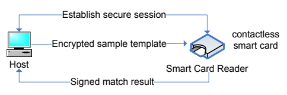
利用場面の図です。左に「Host」（ホスト）と記されたコンピューター、右に「Smart Card Reader」（スマートカードリーダー）と記されたカードリーダーと「contactless smart card」（非接触スマートカード）があります。3 本の結線があり、「Establish secure session」（安全なセッションの確立）は上部を横切る線でホストとリーダーの両方に矢じりがあり、「Encrypted sample template」（暗号化したサンプルテンプレート）はホストからリーダーへの矢印、「Signed match result」（署名付きの照合結果）は下部を通ってリーダーからホストへ戻る線です。
原本PDFの抜粋画像
contactless
非接触
Encrypted sample template
暗号化されたサンプルテンプレート
smart card
スマートカード
Host
ホスト
Smart Card Reader
スマートカードリーダー
原本PDFの抜粋画像
•The cardholder presents their card to a contactless biometric reader.
•カード保持者が、カードを非接触の生体リーダーにかざします。
•The cardholder presents their finger to the biometric scanner.
•カード保持者が、指を生体スキャナーに当てます。
•The host establishes a secure session with the card.
•ホストが、カードとのセキュアセッションを確立します。
•The host prepares an encrypted template containing the fingerprint (image or minutia) and transmits it via contactless interface to the card.
•ホストが、指紋（画像またはマニューシャ）を含む暗号化テンプレートを準備し、非接触インタフェースを介してカードに送信します。
•The card decrypts the template and compares it with the reference template stored on the card.
•カードが、テンプレートを復号し、カードに格納された参照テンプレートと比較します。
•The card returns signed result (i.e., Yes/No) to the host.
•カードが、署名付きの結果（すなわち Yes/No）をホストに返します。
At the time this study began, NIST was unable to identify any commercial product meeting all of the requirements in Appendix D. Participants worked with NIST to understand the requirements and then developed submissions. Submissions received for the feasibility study that met the stated objectives were tested by NIST. The subsequent sections in this report discuss the test procedures and the results of successful tests obtained from the feasibility study. The results of unsuccessful tests are not reported.
この調査が始まった時点で、NIST は、付録 D のすべての要件を満たす市販製品を 1 つも特定できませんでした。参加者は NIST と協力して要件を理解し、その後、提出物を作成しました。実現可能性調査のために受領した提出物のうち、定められた目標を満たしたものを NIST が試験しました。この報告書の以降の節では、試験手順と、実現可能性調査で得られた成功した試験の結果について論じます。失敗した試験の結果は報告しません。
3. Test Process
3. 試験プロセス
In order to obtain performance timing metrics, a test fixture was developed that implements the secure message protocol for each Device Under Test (DUT) and records the measured transaction times. Test cases executed for the feasibility study were designed to study how matching/non-matching templates, varying minutia counts, and different encryption algorithms impact transaction times. The following subsections describe the test fixture and procedures used for the feasibility study.
性能の時間指標を得るために、各被試験デバイス（DUT）に対してセキュアメッセージプロトコルを実装し、測定したトランザクション時間を記録するテストフィクスチャを開発しました。実現可能性調査のために実行した試験ケースは、一致するテンプレートと一致しないテンプレート、マニューシャ数の違い、暗号アルゴリズムの違いが、トランザクション時間にどのように影響するかを調べるように設計されました。以下の小節では、実現可能性調査で用いたテストフィクスチャと手順を説明します。
3.1 Test Fixture
3.1 テストフィクスチャ
The test fixture uses the Win32 Smart Card Application Programming Interface (API) library to communicate with DUTs and smart card readers. The library was used to acquire the following time measurements:
テストフィクスチャは、DUT およびスマートカードリーダーとの通信に、Win32 Smart Card Application Programming Interface（API）ライブラリを使用します。このライブラリを用いて、次の時間測定を取得しました。
•Average2 time to establish a secure session
•セキュアセッションを確立する平均2時間
•Average time to transmit the encrypted biometric data to the DUT and receive a match result
•暗号化した生体データを DUT に送信し、照合結果を受信する平均時間
•Average total time to perform a complete biometric match-on-card transaction
•生体照合カード内照合のトランザクション全体を実行する平均の合計時間
To perform time measurements, the test fixture sends Application Protocol Data Units (APDU) to a DUT using the SCardTransmit command. The time it takes to execute a SCardTransmit command, which is obtained by computing the time difference before and after a call to SCardTransmit, is then recorded to an output file. For APDUs that require multiple calls to SCardTransmit (e.g., GET RESPONSE), the total elapsed time is determined by adding the time to execute each SCardTransmit operation. An example message sequence between a DUT and the test fixture is as follows:
時間測定を行うために、テストフィクスチャは SCardTransmit コマンドを用いて、DUT にアプリケーションプロトコルデータユニット（APDU）を送信します。SCardTransmit コマンドの実行にかかる時間は、SCardTransmit の呼び出しの前後の時間差を計算して得られ、出力ファイルに記録されます。SCardTransmit を複数回呼び出す必要がある APDU（たとえば GET RESPONSE）については、各 SCardTransmit 操作の実行時間を足し合わせて、経過時間の合計を求めます。DUT とテストフィクスチャの間のメッセージシーケンスの例は、次のとおりです。
1.The test fixture selects the SBMOC application on the card.
1.テストフィクスチャが、カード上の SBMOC アプリケーションを選択します。
2.The test fixture performs Get Data to read the PKI certificate from the DUT and validates the certificate.
2.テストフィクスチャが、Get Data を実行して DUT から PKI 証明書を読み取り、その証明書を検証します。
3.The test fixture requests a challenge from the DUT. The DUT responds with a challenge.
3.テストフィクスチャが、DUT にチャレンジを要求します。DUT はチャレンジで応答します。
4.The text fixture and DUT generate encryption and Message Authentication Code (MAC) session keys, and finish establishing a secure session.
4.テストフィクスチャと DUT が、暗号化用およびメッセージ認証コード（MAC）用のセッション鍵を生成し、セキュアセッションの確立を完了します。
5.The text fixture encrypts biometric data using session key and sends it to the DUT for verification. The DUT responds with the signed match / no-match result.
5.テストフィクスチャが、セッション鍵を用いて生体データを暗号化し、検証のために DUT に送信します。DUT は、署名付きの照合／非照合の結果で応答します。
After running the test fixture, a Comma-Separated Values (CSV) output file is created that contains the measured times for the DUT used in the test. Table 1 lists the data recorded in the output file. A sample test fixture output appears in Appendix C.
テストフィクスチャを実行した後、試験で使用した DUT の測定時間を含む、カンマ区切り値（CSV）の出力ファイルが作成されます。表 1 は、出力ファイルに記録されるデータを示します。テストフィクスチャの出力例を付録 C に示します。
Table 1. Test Fixture Output File Fields
表 1. テストフィクスチャの出力ファイルのフィールド
| Field Name | Description |
|---|---|
| Date/Time | Date/time that the test run was executed. Recorded as “mm-dd-yyyy HH:MM:SS”. |
| Run # | Test run number |
| Reader | Smart card reader description |
| Card | DUT description |
| Symmetric Crypto | Name of symmetric cryptographic algorithm used in the test (e.g., “2 Key TDES - CBC”, “AES-128 - CBC”) |
| Asymmetric Crypto | Name of asymmetric cryptographic algorithm used in the test (e.g., “RSA 1024”, “RSA 2048”) |
| Fingerprint Filename | Filename of sample fingerprint template used in the test run |
| Finger | Name of finger associated with the sample fingerprint template. Set to “Unknown finger” if this information is not known. |
| Minutia Count | Minutia count of the sample fingerprint template |
| Total Time | Total time to perform the biometric match-on-card operation. This is measured as the time from when the SBMOC application is selected until the time when a result is returned from the DUT, and includes host-processing time to perform cryptographic and other necessary functions. In the above example, Total Time is approximately (1) + (2) + (3) + (4) + (5). |
| T0 | Time to establish a secure session. This time does not include the time to select the SBMOC application. In the above example, T0 = (2) + (3) + (4). |
| T1 | Time to authenticate the biometric data after a secure session has been established. In the above example, T1 = (5). |
| Cert Verified | Indicates if the X.509 certificate loaded on the DUT has been validated. If the “Perform certificate validation” checkbox is not checked then this field will be set to “N/A”. |
| Finger Verified | Indicates if the sample biometric data matched the reference biometric data stored on the DUT. Set to either “Yes” or “No”. |
| フィールド名 | 説明 |
|---|---|
| Date/Time | 試験の実行日時。「mm-dd-yyyy HH:MM:SS」の形式で記録されます。 |
| Run # | 試験の実行番号 |
| Reader | スマートカードリーダーの説明 |
| Card | DUT の説明 |
| Symmetric Crypto | 試験で使用した共通鍵暗号アルゴリズムの名称（たとえば、「2 Key TDES - CBC」、「AES-128 - CBC」） |
| Asymmetric Crypto | 試験で使用した公開鍵暗号アルゴリズムの名称（たとえば、「RSA 1024」、「RSA 2048」） |
| Fingerprint Filename | 試験の実行で使用したサンプル指紋テンプレートのファイル名 |
| Finger | サンプル指紋テンプレートに対応する指の名称。この情報が不明な場合は「Unknown finger」に設定されます。 |
| Minutia Count | サンプル指紋テンプレートのマニューシャ数 |
| Total Time | 生体照合カード内照合の操作を実行する合計時間。SBMOC アプリケーションが選択されてから DUT から結果が返されるまでの時間として測定され、暗号処理やその他の必要な機能を行うホストの処理時間を含みます。上の例では、Total Time はおよそ (1) + (2) + (3) + (4) + (5) です。 |
| T0 | セキュアセッションを確立する時間。この時間には、SBMOC アプリケーションを選択する時間は含まれません。上の例では、T0 = (2) + (3) + (4) です。 |
| T1 | セキュアセッションが確立された後に、生体データを認証する時間。上の例では、T1 = (5) です。 |
| Cert Verified | DUT にロードされた X.509 証明書が検証されたかどうかを示します。「Perform certificate validation」チェックボックスがオンになっていない場合、このフィールドは「N/ |
| Finger Verified | サンプルの生体データが、DUT に格納された参照生体データと一致したかどうかを示します。「Yes」または「No」のいずれかに設定されます。 |
3.2 Test Execution
3.2 試験の実行
The smart card reader used in the tests was an SCM SDI010 dual interface reader. The reader’s technical specifications are given in Table 2.
試験で使用したスマートカードリーダーは、SCM SDI010 デュアルインタフェースリーダーでした。リーダーの技術仕様を表 2 に示します。
Table 2. Smart Card Reader Technical Specifications
表 2. スマートカードリーダーの技術仕様
| Category | Description |
|---|---|
| Host Interface |
|
| Firmware |
|
| Contactless |
|
| API |
|
| 区分 | 説明 |
|---|---|
| ホストインタフェース |
|
| ファームウェア |
|
| 非接触 |
|
| API |
|
For each test case, a DUT was loaded with a reference fingerprint template containing a minutia count of 41, 34, or 27 in either ANSI 378 or ISO/IEC 19794-2 compact format (depending on the DUT being tested). In addition, each DUT was loaded with an X.509 certificate that was generated using the NIST PIV Data Generator tool. The size of the generated certificates was kept consistent by changing only the public key modulus and exponent associated with each certificate to match the public/private key pair stored on a DUT. For tests using Rivest Shamir Adleman (RSA) 1024, the size of the certificate used was 1,345 bytes and for RSA 2048, the certificate size was 1,477 bytes.
各試験ケースでは、DUT に、ANSI 378 または ISO/IEC 19794-2 コンパクト形式（試験対象の DUT による）で、マニューシャ数が 41、34、または 27 の参照指紋テンプレートをロードしました。さらに、各 DUT には、NIST PIV Data Generator ツールを用いて生成した X.509 証明書をロードしました。生成した証明書のサイズは、各証明書に関連付けられた公開鍵の法（modulus）と指数だけを、DUT に格納された公開鍵・秘密鍵ペアに合うよう変更することにより、一定に保ちました。Rivest Shamir Adleman（RSA）1024 を用いる試験では、使用した証明書のサイズは 1,345 バイトであり、RSA 2048 では、証明書のサイズは 1,477 バイトでした。
Testing consisted of sending matching and non-matching sample fingerprint templates to a DUT for verification in alternating sequence. First, sample fingerprint templates containing a minutia count of 41 were sent to the DUT for verification and time values were recorded. The process was repeated for sample fingerprint templates containing a minutia count of 34 and 27. Live fingerprint scans were not used in the tests since it was desirable to maintain a controlled test environment where the minutia count of the sample fingerprint templates could be regulated. Instead, the sample fingerprint templates were read from files generated from fingerprint scans beforehand. For each test case, 200 trials were run so that 100 time values could be collected each for matching and non-matching templates.
試験では、照合するサンプル指紋テンプレートと照合しないサンプル指紋テンプレートを交互に DUT に送信して検証しました。まず、マニューシャ数が 41 のサンプル指紋テンプレートを DUT に送信して検証し、時間の値を記録しました。この過程を、マニューシャ数が 34 および 27 のサンプル指紋テンプレートについても繰り返しました。サンプル指紋テンプレートのマニューシャ数を調整できる管理された試験環境を維持することが望ましかったため、試験ではライブの指紋スキャンを使用しませんでした。代わりに、サンプル指紋テンプレートは、事前に指紋スキャンから生成したファイルから読み込みました。各試験ケースについて 200 回の試行を実施し、照合テンプレートと非照合テンプレートについて、それぞれ 100 個の時間の値を収集しました。
The DUT was powered continuously during the automated sequence of 200 trials. As a consequence, transaction delays that could result from operations at DUT power-up, for example FIPS 140-2 power-up diagnostic tests, are not visible in the measurements.
DUT は、200 回の試行の自動シーケンスの間、継続的に給電されていました。その結果、たとえば FIPS 140-2 の電源投入時診断テストなど、DUT の電源投入時の動作によって生じる可能性のあるトランザクションの遅延は、測定値には現れません。
Table 3 provides a summary of the DUTs used in the feasibility study. Multiple DUTs may correspond to the same physical card but have been given unique names to differentiate the test configurations. Note that the DUTs submitted are prototypes constructed to meet the requirements stated in Appendix D. In conformance with the “no endorsement” policy of NIST, the participants’ DUT names have been omitted.
表 3 は、実現可能性調査で使用した DUT の要約です。複数の DUT が同じ物理カードに対応する場合がありますが、試験構成を区別するために固有の名前を付けています。提出された DUT は、付録 D に定める要件を満たすように構築された試作品であることに注意してください。NIST の「推薦をしない」方針に従い、参加者の DUT 名は省略しています。
Table 3. DUT Summary
表 3. DUT の概要
| DUT Name | Crypto Mechanism | Description |
|---|---|---|
| Card 1 (x) | 2TDEA, RSA 1024 | DUT loaded with ISO 19794-2 compact reference template containing a minutia count of ‘x’, where x = 41, 34, or 27. |
| Card 2 (x) | AES-128, RSA 1024 | DUT loaded with ISO 19794-2 compact reference template containing a minutia count of ‘x’, where x = 41, 34, or 27. |
| Card 3 (41) | 2TDEA, RSA 1024 | DUT loaded with ISO 19794-2 compact reference template containing a proprietary extension and a minutia count of 41. |
| Card 4 (41) | AES-128, RSA 1024 | DUT loaded with ISO 19794-2 compact reference template containing a proprietary extension and a minutia count of 41. |
| Card 5 (x) | 2TDEA, RSA 1024 | DUT loaded with ISO 19794-2 compact reference template containing a minutia count of ‘x’, where x = 41, 34, or 27. |
| Card 6 (x) | 2TDEA, RSA 1024 | DUT loaded with ISO 19794-2 compact reference template containing a minutia count of ‘x’, where x = 41, 34, or 27. |
| Card 7 (x) | 2TDEA, RSA 1024 | DUT loaded with ANSI 378 reference template containing a minutia count of ‘x’, where x = 41, 34, or 27. |
| Card 8 (x) | 2TDEA, RSA 1024 | DUT loaded with ISO 19794-2 compact reference template containing a minutia count of ‘x’, where x = 41, 34, or 27. |
| Card 9 (x) | 3TDEA, RSA 1024 | DUT loaded with ISO 19794-2 compact reference template containing a minutia count of ‘x’, where x = 41, 34, or 27. |
| Card 10 (x) | AES-128, RSA 1024 | DUT loaded with ISO 19794-2 compact reference template containing a minutia count of ‘x’, where x = 41, 34, or 27. |
| Card 11 (x) | 2TDEA, RSA 2048 | DUT loaded with ISO 19794-2 compact reference template containing a minutia count of ‘x’, where x = 41, 34, or 27. |
| Card 12 (x) | AES-128, RSA 2048 | DUT loaded with ISO 19794-2 compact reference template containing a minutia count of ‘x’, where x = 41, 34, or 27. |
| Card 13 (41) | 2TDEA, RSA 2048 | DUT loaded with ISO 19794-2 compact reference template containing a proprietary extension and a minutia count of 41. |
| Card 14 (41) | AES-128, RSA 2048 | DUT loaded with ISO 19794-2 compact reference template containing a proprietary extension and a minutia count of 41. |
| Card 15 (x) | 2TDEA, RSA 2048 | DUT loaded with ISO 19794-2 compact reference template containing a minutia count of ‘x’, where x = 41, 34, or 27. |
| Card 16 (x) | 2TDEA, RSA 2048 | DUT loaded with ISO 19794-2 compact reference template containing a minutia count of ‘x’, where x = 41, 34, or 27. |
| Card 17 (x) | 2TDEA, RSA 2048 | DUT loaded with ANSI 378 reference template containing a minutia count of ‘x’, where x = 41, 34, or 27. |
| DUT 名 | 暗号方式 | 説明 |
|---|---|---|
| Card 1 (x) | 2TDEA, RSA 1024 | ISO 19794-2 コンパクト形式の参照テンプレート（マニューシャ数は「x」、x = 41、34、または 27）をロードした DUT。 |
| Card 2 (x) | AES-128, RSA 1024 | ISO 19794-2 コンパクト形式の参照テンプレート（マニューシャ数は「x」、x = 41、34、または 27）をロードした DUT。 |
| Card 3 (41) | 2TDEA, RSA 1024 | 独自拡張を含み、マニューシャ数が 41 の ISO 19794-2 コンパクト形式の参照テンプレートをロードした DUT。 |
| Card 4 (41) | AES-128, RSA 1024 | 独自拡張を含み、マニューシャ数が 41 の ISO 19794-2 コンパクト形式の参照テンプレートをロードした DUT。 |
| Card 5 (x) | 2TDEA, RSA 1024 | ISO 19794-2 コンパクト形式の参照テンプレート（マニューシャ数は「x」、x = 41、34、または 27）をロードした DUT。 |
| Card 6 (x) | 2TDEA, RSA 1024 | ISO 19794-2 コンパクト形式の参照テンプレート（マニューシャ数は「x」、x = 41、34、または 27）をロードした DUT。 |
| Card 7 (x) | 2TDEA, RSA 1024 | ANSI 378 の参照テンプレート（マニューシャ数は「x」、x = 41、34、または 27）をロードした DUT。 |
| Card 8 (x) | 2TDEA, RSA 1024 | ISO 19794-2 コンパクト形式の参照テンプレート（マニューシャ数は「x」、x = 41、34、または 27）をロードした DUT。 |
| Card 9 (x) | 3TDEA, RSA 1024 | ISO 19794-2 コンパクト形式の参照テンプレート（マニューシャ数は「x」、x = 41、34、または 27）をロードした DUT。 |
| Card 10 (x) | AES-128, RSA 1024 | ISO 19794-2 コンパクト形式の参照テンプレート（マニューシャ数は「x」、x = 41、34、または 27）をロードした DUT。 |
| Card 11 (x) | 2TDEA, RSA 2048 | ISO 19794-2 コンパクト形式の参照テンプレート（マニューシャ数は「x」、x = 41、34、または 27）をロードした DUT。 |
| Card 12 (x) | AES-128, RSA 2048 | ISO 19794-2 コンパクト形式の参照テンプレート（マニューシャ数は「x」、x = 41、34、または 27）をロードした DUT。 |
| Card 13 (41) | 2TDEA, RSA 2048 | 独自拡張を含み、マニューシャ数が 41 の ISO 19794-2 コンパクト形式の参照テンプレートをロードした DUT。 |
| Card 14 (41) | AES-128, RSA 2048 | 独自拡張を含み、マニューシャ数が 41 の ISO 19794-2 コンパクト形式の参照テンプレートをロードした DUT。 |
| Card 15 (x) | 2TDEA, RSA 2048 | ISO 19794-2 コンパクト形式の参照テンプレート（マニューシャ数は「x」、x = 41、34、または 27）をロードした DUT。 |
| Card 16 (x) | 2TDEA, RSA 2048 | ISO 19794-2 コンパクト形式の参照テンプレート（マニューシャ数は「x」、x = 41、34、または 27）をロードした DUT。 |
| Card 17 (x) | 2TDEA, RSA 2048 | ANSI 378 の参照テンプレート（マニューシャ数は「x」、x = 41、34、または 27）をロードした DUT。 |
4. Results
4. 結果
Timing metrics obtained with the test fixture could not be validated with a protocol analyzer since one could not be acquired within the SBMOC test framework that supports the high-speed data rates used by the SCM SDI010 reader. However, the test fixure was built on a test framework for a previous NIST study in which timing metrics were obtained and validated with a protocol analyzer. Hence, there is a reasonable degree of confidence that the timing metrics reported in this document are accurate.
テストフィクスチャで得られた時間メトリクスは、プロトコルアナライザーで検証できませんでした。SCM SDI010 リーダーが使用する高速データレートに対応するプロトコルアナライザーを、SBMOC の試験フレームワーク内では入手できなかったためです。ただし、このテストフィクスチャは、時間メトリクスを取得し、プロトコルアナライザーで検証した以前の NIST 調査の試験フレームワークを基に構築されました。したがって、この文書で報告する時間メトリクスは正確であると、合理的な程度の確信を持てます。
Appendix A contains the average response times for each DUT, separated by matching and non-matching results as well as minutia count. In the charts, “SMC” stands for “Sample Minutia Count” and refers to the minutia count of the sample fingerprint templates sent to the DUT. The average response time is an aggregate of three time values: T0, T1, and Host Processing.
付録 A には、各 DUT の平均応答時間を、照合結果と非照合結果、およびマニューシャ数ごとに分けて示しています。チャートの「SMC」は「Sample Minutia Count」の略で、DUT に送信したサンプル指紋テンプレートのマニューシャ数を指します。平均応答時間は、T0、T1、ホスト処理の 3 つの時間の値を合計したものです。
•T0—refers to the time it took to establish a secure session with the DUT.
•T0 — DUT とのセキュアセッションを確立するのにかかった時間を指します。
•T1—refers to the time it took to send an encrypted template to the DUT for verification and receive a response.
•T1 — 暗号化したテンプレートを検証のために DUT に送信し、応答を受信するのにかかった時間を指します。
•Host Processing—refers to the time spent performing processing on the host-side (e.g., cryptographic functions).
•ホスト処理 — ホスト側での処理（たとえば暗号機能）に費やした時間を指します。
Figure 1 below shows the average response times for all DUTs that support RSA 1024. Figure 2 shows the average response times for all DUTs that support RSA 2048.
下の図 1 は、RSA 1024 に対応するすべての DUT の平均応答時間を示します。図 2 は、RSA 2048 に対応するすべての DUT の平均応答時間を示します。

「Average Response Times for DUTs Using RSA 1024」（RSA 1024 を使う被試験装置（DUT）の平均応答時間）と題した集合棒グラフです。縦軸は「Time (ms)」（時間（ミリ秒））で 0〜2000、横軸は「DUT」で「Card 1」〜「Card 10」があり、それぞれ「Matching」（一致、青）と「Non-Matching」（不一致、薄い黄色）の棒があります。カード 1〜4 と 8〜10 は約 650〜870 ms、カード 5 と 6 は約 1730〜1760 ms、カード 7 は一致が約 1420 ms、不一致が約 1470 ms です。どのカードも一致と不一致の時間は近い値です。
Figure 1. Average Response Times of DUTs Using RSA 1024
図 1. RSA 1024 を使用する DUT の平均応答時間
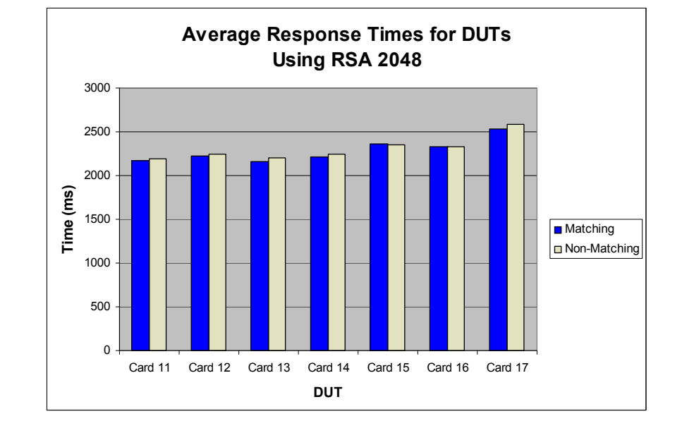
「Average Response Times for DUTs Using RSA 2048」（RSA 2048 を使う被試験装置（DUT）の平均応答時間）と題した集合棒グラフです。縦軸は「Time (ms)」（時間（ミリ秒））で 0〜3000、横軸は「DUT」で「Card 11」〜「Card 17」があり、それぞれ「Matching」（一致、青）と「Non-Matching」（不一致、薄い黄色）の棒があります。カード 11〜14 は約 2160〜2250 ms、カード 15 と 16 は約 2330〜2360 ms、カード 17 は一致が約 2530 ms、不一致が約 2590 ms です。
Figure 2. Average Response Times of DUTs Using RSA 2048
図 2. RSA 2048 を使用する DUT の平均応答時間
Appendix B contains graphs of the response times for each DUT, separated by matching and non-matching results as well as minutia count. A 17 ms fluctuation is visible in the response time charts, e.g., in Figure C-1. This fluctuation can be attributed to the Windows NT clock resolution of the host PC, which is 1/60 second or 17 ms. Such fluctuations are recorded whenever a fixed duration phenomenon is measured repeatedly, starting at random points with respect to a clock tick. Assuming the DUT response time is fixed, the actual DUT response time is approximately the computed average response time, as reported in Appendix A. Whether the assumption holds or not, a 17 ms fluctuation is less than 3% of the measured values in all cases.
付録 B には、各 DUT の応答時間のグラフを、照合結果と非照合結果、およびマニューシャ数ごとに分けて示しています。応答時間のチャート（たとえば図 C-1）には、17 ms の変動が見られます。この変動は、ホスト PC の Windows NT のクロック分解能が 1/60 秒、すなわち 17 ms であることに起因すると考えられます。このような変動は、クロックのティックに対してランダムな時点から開始して、一定の長さの現象を繰り返し測定するときには、常に記録されます。DUT の応答時間が一定であると仮定すると、実際の DUT の応答時間は、付録 A で報告している、計算された平均応答時間にほぼ等しくなります。この仮定が成り立つかどうかにかかわらず、17 ms の変動は、いずれの場合も測定値の 3% 未満です。
In some cases, one or more of the following anomalies were observed while obtaining timing metrics for a DUT:
DUT の時間メトリクスを取得する際に、次の異常のうち 1 つ以上が観測された場合がありました。
•The entire protocol sequence could not be executed (e.g., a secure session could not be established with the DUT). Hence, some graphs may have less than 100 time values for matching and/or non-matching results (an example appears in Figure C-29).
•プロトコルシーケンス全体を実行できませんでした（たとえば、DUT とセキュアセッションを確立できなかった）。そのため、一部のグラフでは、照合結果と非照合結果（またはそのいずれか）の時間の値が 100 個に満たない場合があります（例が図 C-29 にあります）。
•A matching template was sent to a DUT for verification and the DUT responded with a “No match” result. Consequently, there may be more non-matching than matching time values (an example appears in Figures C-35 and C-36).
•照合するテンプレートを検証のために DUT に送信したところ、DUT が「No match」の結果で応答しました。その結果、照合する時間の値よりも照合しない時間の値のほうが多い場合があります（例が図 C-35 と C-36 にあります）。
•Anomalous time values were observed that exceed the 17 ms host clock resolution (an example appears in Figure C-29).
•ホストクロックの分解能 17 ms を超える異常な時間の値が観測されました（例が図 C-29 にあります）。
These anomalies may have been caused by a number of different factors, such as Radio Frequency (RF) noise between the DUT and smart card reader, and the actual negotiated operating speed of the DUT.
これらの異常は、DUT とスマートカードリーダーの間の高周波（RF）ノイズや、DUT が実際にネゴシエートした動作速度など、さまざまな要因によって生じた可能性があります。
5. Conclusion
5. 結論
The timing metrics obtained from the SBMOC feasibility study showed that it is possible to securely perform biometric match-on-card operations over the contactless interface of a smart card within 2.5 seconds, while meeting the constraints in Appendix D except the accuracy constraint. The study also showed that the amount of time required to complete an SBMOC operation is dependent on a number of factors, such as the cryptographic mechanisms used, the minutia count of the reference and sample fingerprint templates, and the format of the fingerprint templates.
SBMOC の実現可能性調査で得られた時間メトリクスは、精度の制約を除き、付録 D の制約を満たしながら、スマートカードの非接触インタフェースを介して生体照合カード内照合を 2.5 秒以内に安全に実行できることを示しました。この調査はまた、SBMOC の動作の完了に必要な時間が、使用する暗号方式、参照用およびサンプル指紋テンプレートのマニューシャ数、指紋テンプレートの形式など、多くの要因に依存することも示しました。
Accuracy testing of ISO/IEC 19794-2 devices is in progress at this time. Partial results indicate that some devices exhibit accuracy approaching that measured for Minutiae Interoperability Exchange Test (MINEX) 04 implementations, and are likely to exceed the PIV accuracy requirements in Special Publication (SP) 800-76-1. Results will be announced at http://fingerprint.nist.gov/minexII/.
ISO/IEC 19794-2 デバイスの精度試験は、現在進行中です。部分的な結果は、一部のデバイスが、Minutiae Interoperability Exchange Test（MINEX）04 の実装で測定された精度に近い精度を示し、特別刊行物（SP）800-76-1 の PIV の精度要件を上回る可能性が高いことを示しています。結果は http://fingerprint.nist.gov/minexII/ で発表されます。
The feasibility study participants informed us that some of the DUTs were constructed by adding firmware and data to PIV card stock that had passed NIST NPIVP and FIPS 140-2 testing. These remarks are further evidence that SBMOC is technically feasible through firmware extensions to existing smart cards.
実現可能性調査の参加者によると、一部の DUT は、NIST NPIVP と FIPS 140-2 の試験に合格した PIV カードのカード素材にファームウェアとデータを追加して構築されたとのことです。これらの発言は、既存のスマートカードのファームウェア拡張によって SBMOC が技術的に実現可能であることを示すさらなる証拠です。
Appendix A—Average Response Time Charts
付録 A — 平均応答時間のチャート
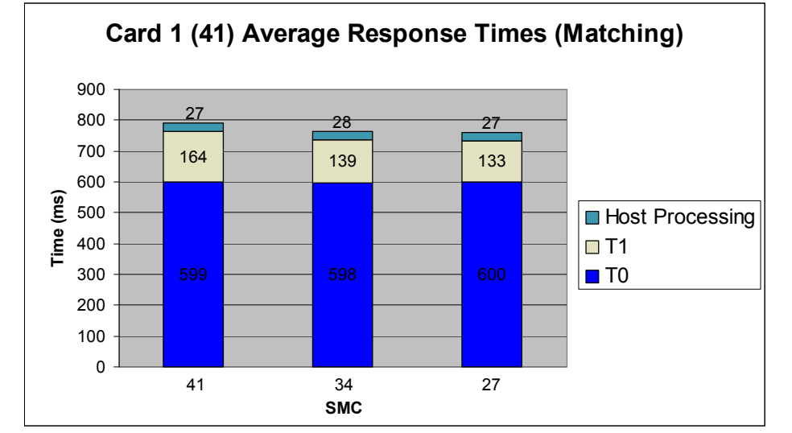
「Card 1 (41) Average Response Times (Matching)」（カード 1（41）の平均応答時間（一致））と題した積み上げ棒グラフです。縦軸は「Time (ms)」（時間（ミリ秒））で 0〜900、横軸は「SMC」（サンプルの特徴点数）で 41、34、27 の 3 本の棒があります。各棒は下から T0（青）、T1（薄い黄色）、Host Processing（ホスト処理、青緑）を積み上げ、各部分に値が記されています。T0 は 598〜600 ms、T1 は 133〜164 ms、Host Processing は 27〜28 ms で、棒の合計は 760〜790 ms です。
Figure B-1. Card 1 (41) Average Response Times for Matching Templates
図 B-1. Card 1（41）の照合するテンプレートの平均応答時間
「Card 1 (41) Average Response Times (Non-Matching)」（カード 1（41）の平均応答時間（不一致））と題した積み上げ棒グラフです。縦軸は「Time (ms)」（時間（ミリ秒））で 0〜900、横軸は「SMC」（サンプルの特徴点数）で 41、34、27 の 3 本の棒があります。各棒は下から T0（青）、T1（薄い黄色）、Host Processing（ホスト処理、青緑）を積み上げ、各部分に値が記されています。T0 は 598 ms、T1 は 171〜200 ms、Host Processing は 27〜28 ms で、棒の合計は 797〜825 ms です。
Figure B-2. Card 1 (41) Average Response Times for Non-Matching Templates
図 B-2. Card 1（41）の照合しないテンプレートの平均応答時間
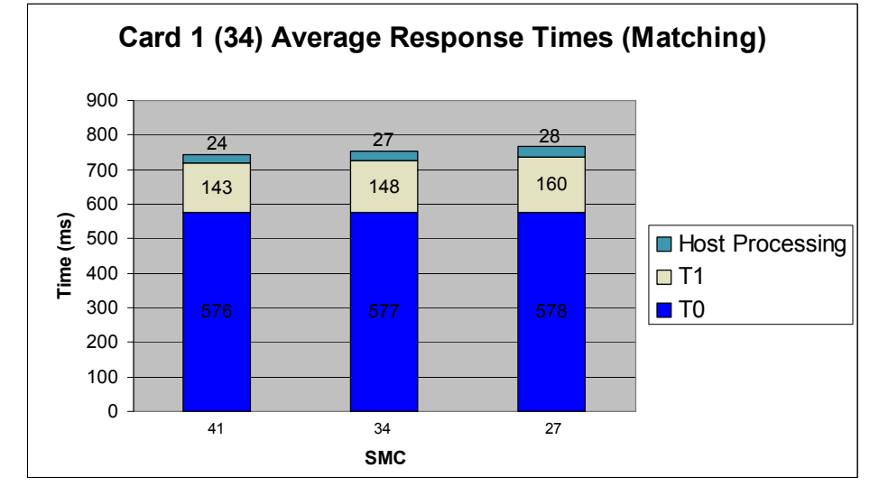
「Card 1 (34) Average Response Times (Matching)」（カード 1（34）の平均応答時間（一致））と題した積み上げ棒グラフです。縦軸は「Time (ms)」（時間（ミリ秒））で 0〜900、横軸は「SMC」（サンプルの特徴点数）で 41、34、27 の 3 本の棒があります。各棒は下から T0（青）、T1（薄い黄色）、Host Processing（ホスト処理、青緑）を積み上げ、各部分に値が記されています。T0 は 576〜578 ms、T1 は 143〜160 ms、Host Processing は 24〜28 ms で、棒の合計は 743〜766 ms です。
Figure B-3. Card 1 (34) Average Response Times for Matching Templates
図 B-3. Card 1（34）の照合するテンプレートの平均応答時間
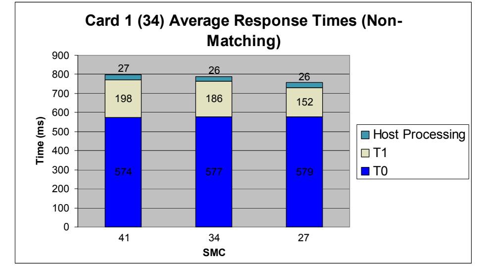
「Card 1 (34) Average Response Times (Non-Matching)」（カード 1（34）の平均応答時間（不一致））と題した積み上げ棒グラフです。縦軸は「Time (ms)」（時間（ミリ秒））で 0〜900、横軸は「SMC」（サンプルの特徴点数）で 41、34、27 の 3 本の棒があります。各棒は下から T0（青）、T1（薄い黄色）、Host Processing（ホスト処理、青緑）を積み上げ、各部分に値が記されています。T0 は 574〜579 ms、T1 は 152〜198 ms、Host Processing は 26〜27 ms で、棒の合計は 757〜799 ms です。
Figure B-4. Card 1 (34) Average Response Times for Non-Matching Templates
図 B-4. Card 1（34）の照合しないテンプレートの平均応答時間
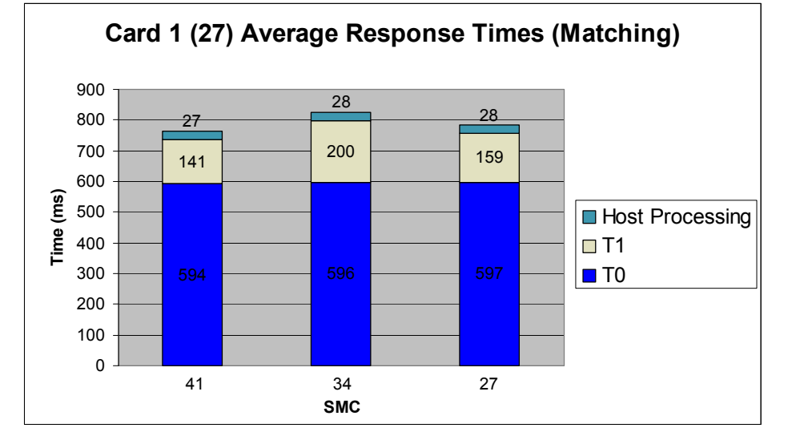
「Card 1 (27) Average Response Times (Matching)」（カード 1（27）の平均応答時間（一致））と題した積み上げ棒グラフです。縦軸は「Time (ms)」（時間（ミリ秒））で 0〜900、横軸は「SMC」（サンプルの特徴点数）で 41、34、27 の 3 本の棒があります。各棒は下から T0（青）、T1（薄い黄色）、Host Processing（ホスト処理、青緑）を積み上げ、各部分に値が記されています。T0 は 594〜597 ms、T1 は 141〜200 ms、Host Processing は 27〜28 ms で、棒の合計は 762〜824 ms です。
Figure B-5. Card 1 (27) Average Response Times for Matching Templates
図 B-5. Card 1（27）の照合するテンプレートの平均応答時間
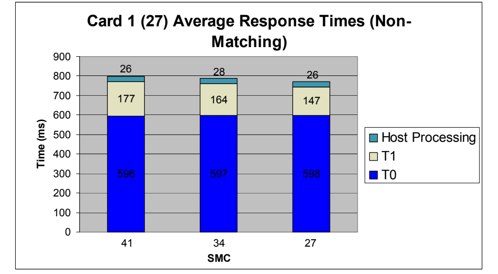
「Card 1 (27) Average Response Times (Non-Matching)」（カード 1（27）の平均応答時間（不一致））と題した積み上げ棒グラフです。縦軸は「Time (ms)」（時間（ミリ秒））で 0〜900、横軸は「SMC」（サンプルの特徴点数）で 41、34、27 の 3 本の棒があります。各棒は下から T0（青）、T1（薄い黄色）、Host Processing（ホスト処理、青緑）を積み上げ、各部分に値が記されています。T0 は 596〜598 ms、T1 は 147〜177 ms、Host Processing は 26〜28 ms で、棒の合計は 771〜799 ms です。
Figure B-6. Card 1 (27) Average Response Times for Non-Matching Templates
図 B-6. Card 1（27）の照合しないテンプレートの平均応答時間
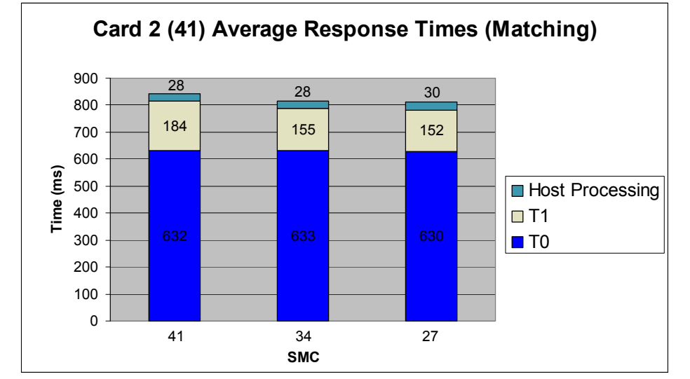
「Card 2 (41) Average Response Times (Matching)」（カード 2（41）の平均応答時間（一致））と題した積み上げ棒グラフです。縦軸は「Time (ms)」（時間（ミリ秒））で 0〜900、横軸は「SMC」（サンプルの特徴点数）で 41、34、27 の 3 本の棒があります。各棒は下から T0（青）、T1（薄い黄色）、Host Processing（ホスト処理、青緑）を積み上げ、各部分に値が記されています。T0 は 630〜633 ms、T1 は 152〜184 ms、Host Processing は 28〜30 ms で、棒の合計は 812〜844 ms です。
Figure B-7. Card 2 (41) Average Response Times for Matching Templates
図 B-7. Card 2（41）の一致テンプレートの平均応答時間
「Card 2 (41) Average Response Times (Non-Matching)」（カード 2（41）の平均応答時間（不一致））と題した積み上げ棒グラフです。縦軸は「Time (ms)」（時間（ミリ秒））で 0〜1000、横軸は「SMC」（サンプルの特徴点数）で 41、34、27 の 3 本の棒があります。各棒は下から T0（青）、T1（薄い黄色）、Host Processing（ホスト処理、青緑）を積み上げ、各部分に値が記されています。T0 は 630〜632 ms、T1 は 188〜218 ms、Host Processing は 27〜28 ms で、棒の合計は 846〜877 ms です。
Figure B-8. Card 2 (41) Average Response Times for Non-Matching Templates
図 B-8. Card 2（41）の不一致テンプレートの平均応答時間
「Card 2 (34) Average Response Times (Matching)」（カード 2（34）の平均応答時間（一致））と題した積み上げ棒グラフです。縦軸は「Time (ms)」（時間（ミリ秒））で 0〜900、横軸は「SMC」（サンプルの特徴点数）で 41、34、27 の 3 本の棒があります。各棒は下から T0（青）、T1（薄い黄色）、Host Processing（ホスト処理、青緑）を積み上げ、各部分に値が記されています。T0 は 608〜611 ms、T1 は 161〜176 ms、Host Processing は 27〜31 ms で、棒の合計は 800〜815 ms です。
Figure B-9. Card 2 (34) Average Response Times for Matching Templates
図 B-9. Card 2（34）の一致テンプレートの平均応答時間
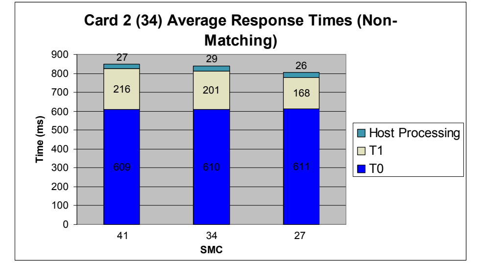
「Card 2 (34) Average Response Times (Non-Matching)」（カード 2（34）の平均応答時間（不一致））と題した積み上げ棒グラフです。縦軸は「Time (ms)」（時間（ミリ秒））で 0〜900、横軸は「SMC」（サンプルの特徴点数）で 41、34、27 の 3 本の棒があります。各棒は下から T0（青）、T1（薄い黄色）、Host Processing（ホスト処理、青緑）を積み上げ、各部分に値が記されています。T0 は 609〜611 ms、T1 は 168〜216 ms、Host Processing は 26〜29 ms で、棒の合計は 805〜852 ms です。
Figure B-10. Card 2 (34) Average Response Times for Non-Matching Templates
図 B-10. Card 2（34）の不一致テンプレートの平均応答時間
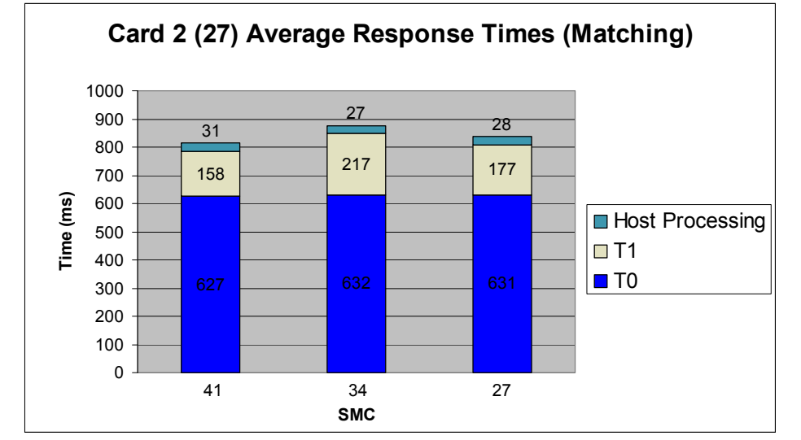
「Card 2 (27) Average Response Times (Matching)」（カード 2（27）の平均応答時間（一致））と題した積み上げ棒グラフです。縦軸は「Time (ms)」（時間（ミリ秒））で 0〜1000、横軸は「SMC」（サンプルの特徴点数）で 41、34、27 の 3 本の棒があります。各棒は下から T0（青）、T1（薄い黄色）、Host Processing（ホスト処理、青緑）を積み上げ、各部分に値が記されています。T0 は 627〜632 ms、T1 は 158〜217 ms、Host Processing は 27〜31 ms で、棒の合計は 816〜876 ms です。
Figure B-11. Card 2 (27) Average Response Times for Matching Templates
図 B-11. Card 2（27）の一致テンプレートの平均応答時間
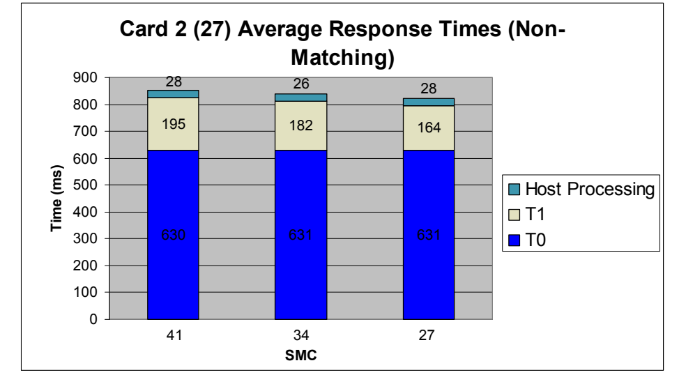
「Card 2 (27) Average Response Times (Non-Matching)」（カード 2（27）の平均応答時間（不一致））と題した積み上げ棒グラフです。縦軸は「Time (ms)」（時間（ミリ秒））で 0〜900、横軸は「SMC」（サンプルの特徴点数）で 41、34、27 の 3 本の棒があります。各棒は下から T0（青）、T1（薄い黄色）、Host Processing（ホスト処理、青緑）を積み上げ、各部分に値が記されています。T0 は 630〜631 ms、T1 は 164〜195 ms、Host Processing は 26〜28 ms で、棒の合計は 823〜853 ms です。
Figure B-12. Card 2 (27) Average Response Times for Non-Matching Templates
図 B-12. Card 2（27）の不一致テンプレートの平均応答時間
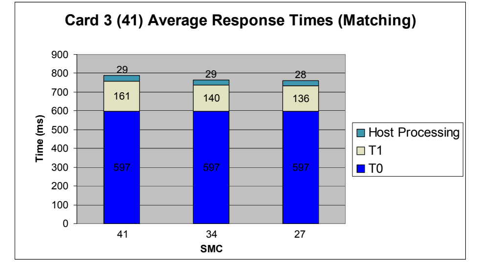
「Card 3 (41) Average Response Times (Matching)」（カード 3（41）の平均応答時間（一致））と題した積み上げ棒グラフです。縦軸は「Time (ms)」（時間（ミリ秒））で 0〜900、横軸は「SMC」（サンプルの特徴点数）で 41、34、27 の 3 本の棒があります。各棒は下から T0（青）、T1（薄い黄色）、Host Processing（ホスト処理、青緑）を積み上げ、各部分に値が記されています。T0 は 597 ms、T1 は 136〜161 ms、Host Processing は 28〜29 ms で、棒の合計は 761〜787 ms です。
Figure B-13. Card 3 (41) Average Response Times for Matching Templates3
図 B-13. Card 3（41）の一致テンプレートの平均応答時間3
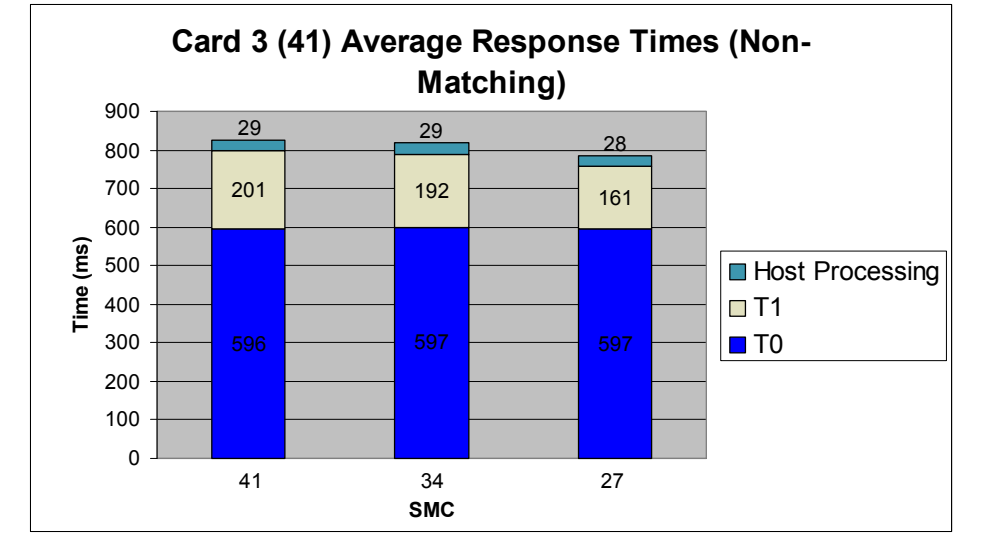
「Card 3 (41) Average Response Times (Non-Matching)」（カード 3（41）の平均応答時間（不一致））と題した積み上げ棒グラフです。縦軸は「Time (ms)」（時間（ミリ秒））で 0〜900、横軸は「SMC」（サンプルの特徴点数）で 41、34、27 の 3 本の棒があります。各棒は下から T0（青）、T1（薄い黄色）、Host Processing（ホスト処理、青緑）を積み上げ、各部分に値が記されています。T0 は 596〜597 ms、T1 は 161〜201 ms、Host Processing は 28〜29 ms で、棒の合計は 786〜826 ms です。
Figure B-14. Card 3 (41) Average Response Times for Non-Matching Templates
図 B-14. Card 3（41）の不一致テンプレートの平均応答時間
「Card 4 (41) Average Response Times (Matching)」（カード 4（41）の平均応答時間（一致））と題した積み上げ棒グラフです。縦軸は「Time (ms)」（時間（ミリ秒））で 0〜900、横軸は「SMC」（サンプルの特徴点数）で 41、34、27 の 3 本の棒があります。各棒は下から T0（青）、T1（薄い黄色）、Host Processing（ホスト処理、青緑）を積み上げ、各部分に値が記されています。T0 は 630〜631 ms、T1 は 151〜181 ms、Host Processing は 28〜30 ms で、棒の合計は 811〜840 ms です。
Figure B-15. Card 4 (41) Average Response Times for Matching Templates4
図 B-15. Card 4（41）の一致テンプレートの平均応答時間4
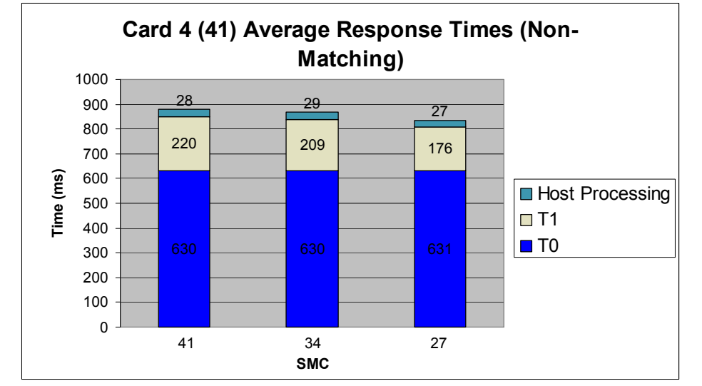
「Card 4 (41) Average Response Times (Non-Matching)」（カード 4（41）の平均応答時間（不一致））と題した積み上げ棒グラフです。縦軸は「Time (ms)」（時間（ミリ秒））で 0〜1000、横軸は「SMC」（サンプルの特徴点数）で 41、34、27 の 3 本の棒があります。各棒は下から T0（青）、T1（薄い黄色）、Host Processing（ホスト処理、青緑）を積み上げ、各部分に値が記されています。T0 は 630〜631 ms、T1 は 176〜220 ms、Host Processing は 27〜29 ms で、棒の合計は 834〜878 ms です。
Figure B-16. Card 4 (41) Average Response Times for Non-Matching Templates
図 B-16. Card 4（41）の不一致テンプレートの平均応答時間
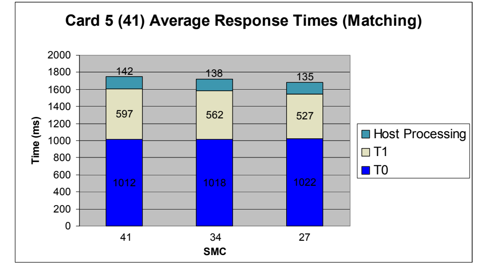
「Card 5 (41) Average Response Times (Matching)」（カード 5（41）の平均応答時間（一致））と題した積み上げ棒グラフです。縦軸は「Time (ms)」（時間（ミリ秒））で 0〜2000、横軸は「SMC」（サンプルの特徴点数）で 41、34、27 の 3 本の棒があります。各棒は下から T0（青）、T1（薄い黄色）、Host Processing（ホスト処理、青緑）を積み上げ、各部分に値が記されています。T0 は 1012〜1022 ms、T1 は 527〜597 ms、Host Processing は 135〜142 ms で、棒の合計は 1684〜1751 ms です。
Figure B-17. Card 5 (41) Average Response Times for Matching Templates
図 B-17. Card 5（41）の一致テンプレートの平均応答時間
「Card 5 (41) Average Response Times (Non-Matching)」（カード 5（41）の平均応答時間（不一致））と題した積み上げ棒グラフです。縦軸は「Time (ms)」（時間（ミリ秒））で 0〜2000、横軸は「SMC」（サンプルの特徴点数）で 41、34、27 の 3 本の棒があります。各棒は下から T0（青）、T1（薄い黄色）、Host Processing（ホスト処理、青緑）を積み上げ、各部分に値が記されています。T0 は 1012〜1018 ms、T1 は 579〜638 ms、Host Processing は 138〜140 ms で、棒の合計は 1737〜1788 ms です。
Figure B-18. Card 5 (41) Average Response Times for Non-Matching Templates
図 B-18. Card 5（41）の不一致テンプレートの平均応答時間
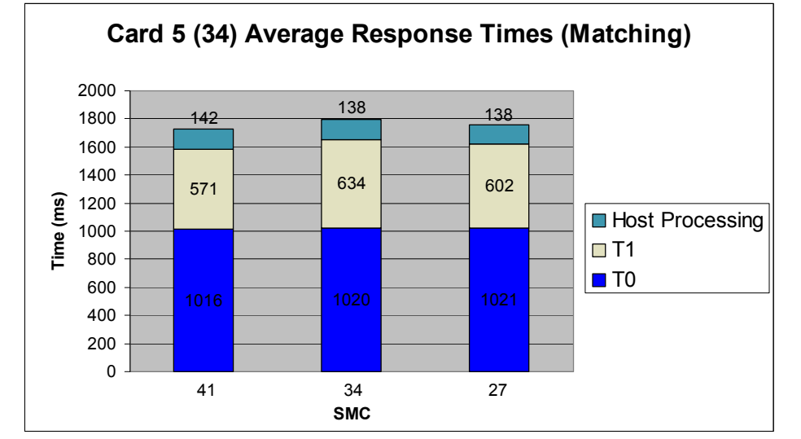
「Card 5 (34) Average Response Times (Matching)」（カード 5（34）の平均応答時間（一致））と題した積み上げ棒グラフです。縦軸は「Time (ms)」（時間（ミリ秒））で 0〜2000、横軸は「SMC」（サンプルの特徴点数）で 41、34、27 の 3 本の棒があります。各棒は下から T0（青）、T1（薄い黄色）、Host Processing（ホスト処理、青緑）を積み上げ、各部分に値が記されています。T0 は 1016〜1021 ms、T1 は 571〜634 ms、Host Processing は 138〜142 ms で、棒の合計は 1729〜1792 ms です。
Figure B-19. Card 5 (34) Average Response Times for Matching Templates
図 B-19. Card 5（34）の一致テンプレートの平均応答時間
「Card 5 (34) Average Response Times (Non-Matching)」（カード 5（34）の平均応答時間（不一致））と題した積み上げ棒グラフです。縦軸は「Time (ms)」（時間（ミリ秒））で 0〜2000、横軸は「SMC」（サンプルの特徴点数）で 41、34、27 の 3 本の棒があります。各棒は下から T0（青）、T1（薄い黄色）、Host Processing（ホスト処理、青緑）を積み上げ、各部分に値が記されています。T0 は 1016〜1021 ms、T1 は 543〜635 ms、Host Processing は 138〜140 ms で、棒の合計は 1703〜1789 ms です。
Figure B-20. Card 5 (34) Average Response Times for Non-Matching Templates
図 B-20. Card 5（34）の不一致テンプレートの平均応答時間
「Card 5 (27) Average Response Times (Matching)」（カード 5（27）の平均応答時間（一致））と題した積み上げ棒グラフです。縦軸は「Time (ms)」（時間（ミリ秒））で 0〜2000、横軸は「SMC」（サンプルの特徴点数）で 41、34、27 の 3 本の棒があります。各棒は下から T0（青）、T1（薄い黄色）、Host Processing（ホスト処理、青緑）を積み上げ、各部分に値が記されています。T0 は 1017〜1027 ms、T1 は 545〜675 ms、Host Processing は 138〜143 ms で、棒の合計は 1715〜1830 ms です。
Figure B-21. Card 5 (27) Average Response Times for Matching Templates
図 B-21. Card 5（27）の一致テンプレートの平均応答時間
「Card 5 (27) Average Response Times (Non-Matching)」（カード 5（27）の平均応答時間（不一致））と題した積み上げ棒グラフです。縦軸は「Time (ms)」（時間（ミリ秒））で 0〜2000、横軸は「SMC」（サンプルの特徴点数）で 41、34、27 の 3 本の棒があります。各棒は下から T0（青）、T1（薄い黄色）、Host Processing（ホスト処理、青緑）を積み上げ、各部分に値が記されています。T0 は 1017〜1024 ms、T1 は 494〜599 ms、Host Processing は 138〜142 ms で、棒の合計は 1659〜1754 ms です。
Figure B-22. Card 5 (27) Average Response Times for Non-Matching Templates
図 B-22. Card 5（27）の不一致テンプレートの平均応答時間
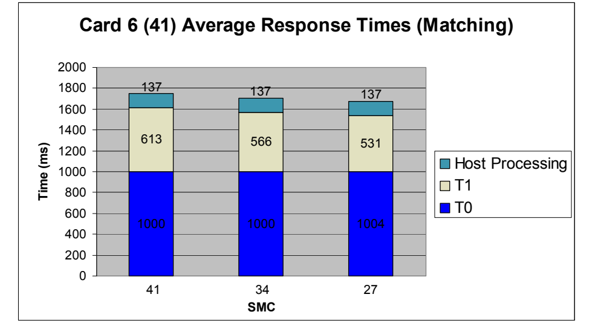
「Card 6 (41) Average Response Times (Matching)」（カード 6（41）の平均応答時間（一致））と題した積み上げ棒グラフです。縦軸は「Time (ms)」（時間（ミリ秒））で 0〜2000、横軸は「SMC」（サンプルの特徴点数）で 41、34、27 の 3 本の棒があります。各棒は下から T0（青）、T1（薄い黄色）、Host Processing（ホスト処理、青緑）を積み上げ、各部分に値が記されています。T0 は 1000〜1004 ms、T1 は 531〜613 ms、Host Processing は 137 ms で、棒の合計は 1672〜1750 ms です。
Figure B-23. Card 6 (41) Average Response Times for Matching Templates
図 B-23. Card 6（41）の一致テンプレートの平均応答時間
「Card 6 (41) Average Response Times (Non-Matching)」（カード 6（41）の平均応答時間（不一致））と題した積み上げ棒グラフです。縦軸は「Time (ms)」（時間（ミリ秒））で 0〜2000、横軸は「SMC」（サンプルの特徴点数）で 41、34、27 の 3 本の棒があります。各棒は下から T0（青）、T1（薄い黄色）、Host Processing（ホスト処理、青緑）を積み上げ、各部分に値が記されています。T0 は 999〜1003 ms、T1 は 583〜651 ms、Host Processing は 137〜139 ms で、棒の合計は 1725〜1787 ms です。
Figure B-24. Card 6 (41) Average Response Times for Non-Matching Templates
図 B-24. Card 6（41）の不一致テンプレートの平均応答時間
「Card 6 (34) Average Response Times (Matching)」（カード 6（34）の平均応答時間（一致））と題した積み上げ棒グラフです。縦軸は「Time (ms)」（時間（ミリ秒））で 0〜2000、横軸は「SMC」（サンプルの特徴点数）で 41、34、27 の 3 本の棒があります。各棒は下から T0（青）、T1（薄い黄色）、Host Processing（ホスト処理、青緑）を積み上げ、各部分に値が記されています。T0 は 1005〜1010 ms、T1 は 571〜627 ms、Host Processing は 137〜138 ms で、棒の合計は 1714〜1775 ms です。
Figure B-25. Card 6 (34) Average Response Times for Matching Templates
図 B-25. Card 6（34）の一致テンプレートの平均応答時間
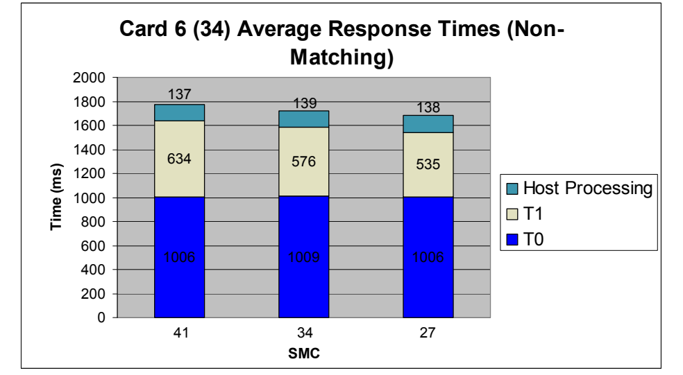
「Card 6 (34) Average Response Times (Non-Matching)」（カード 6（34）の平均応答時間（不一致））と題した積み上げ棒グラフです。縦軸は「Time (ms)」（時間（ミリ秒））で 0〜2000、横軸は「SMC」（サンプルの特徴点数）で 41、34、27 の 3 本の棒があります。各棒は下から T0（青）、T1（薄い黄色）、Host Processing（ホスト処理、青緑）を積み上げ、各部分に値が記されています。T0 は 1006〜1009 ms、T1 は 535〜634 ms、Host Processing は 137〜139 ms で、棒の合計は 1679〜1777 ms です。
Figure B-26. Card 6 (34) Average Response Times for Non-Matching Templates
図 B-26. Card 6（34）の照合しないテンプレートの平均応答時間
「Card 6 (27) Average Response Times (Matching)」（カード 6（27）の平均応答時間（一致））と題した積み上げ棒グラフです。縦軸は「Time (ms)」（時間（ミリ秒））で 0〜2000、横軸は「SMC」（サンプルの特徴点数）で 41、34、27 の 3 本の棒があります。各棒は下から T0（青）、T1（薄い黄色）、Host Processing（ホスト処理、青緑）を積み上げ、各部分に値が記されています。T0 は 1008〜1015 ms、T1 は 537〜672 ms、Host Processing は 137〜138 ms で、棒の合計は 1689〜1817 ms です。
Figure B-27. Card 6 (27) Average Response Times for Matching Templates
図 B-27. Card 6（27）の照合するテンプレートの平均応答時間
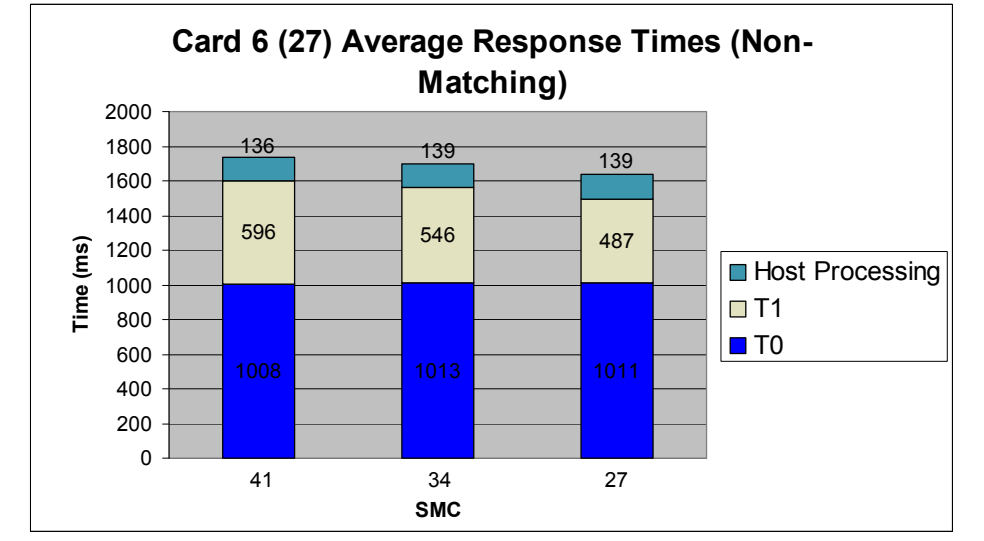
「Card 6 (27) Average Response Times (Non-Matching)」（カード 6（27）の平均応答時間（不一致））と題した積み上げ棒グラフです。縦軸は「Time (ms)」（時間（ミリ秒））で 0〜2000、横軸は「SMC」（サンプルの特徴点数）で 41、34、27 の 3 本の棒があります。各棒は下から T0（青）、T1（薄い黄色）、Host Processing（ホスト処理、青緑）を積み上げ、各部分に値が記されています。T0 は 1008〜1013 ms、T1 は 487〜596 ms、Host Processing は 136〜139 ms で、棒の合計は 1637〜1740 ms です。
Figure B-28. Card 6 (27) Average Response Times for Non-Matching Templates
図 B-28. Card 6（27）の照合しないテンプレートの平均応答時間
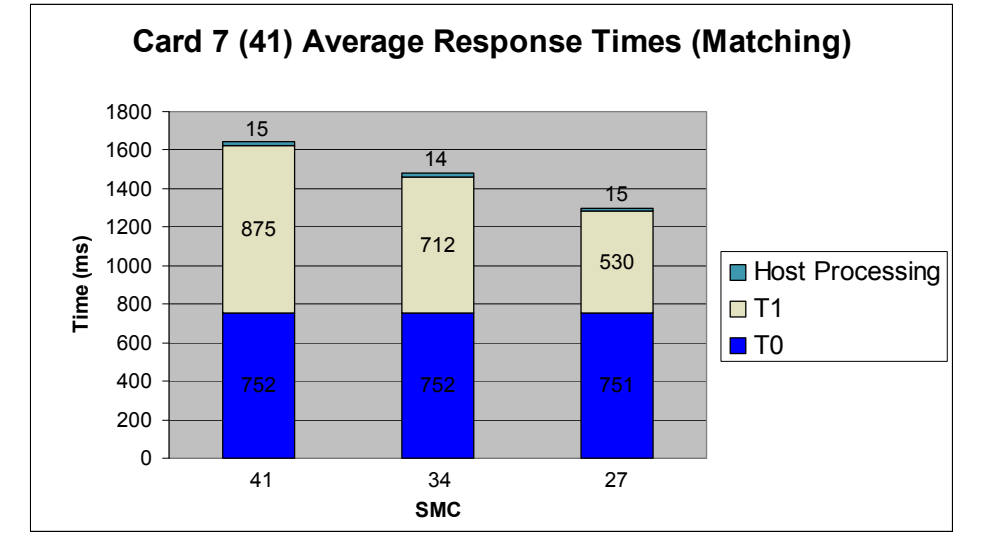
「Card 7 (41) Average Response Times (Matching)」（カード 7（41）の平均応答時間（一致））と題した積み上げ棒グラフです。縦軸は「Time (ms)」（時間（ミリ秒））で 0〜1800、横軸は「SMC」（サンプルの特徴点数）で 41、34、27 の 3 本の棒があります。各棒は下から T0（青）、T1（薄い黄色）、Host Processing（ホスト処理、青緑）を積み上げ、各部分に値が記されています。T0 は 751〜752 ms、T1 は 530〜875 ms、Host Processing は 14〜15 ms で、棒の合計は 1296〜1642 ms です。
Figure B-29. Card 7 (41) Average Response Times for Matching Templates
図 B-29. Card 7（41）の照合するテンプレートの平均応答時間
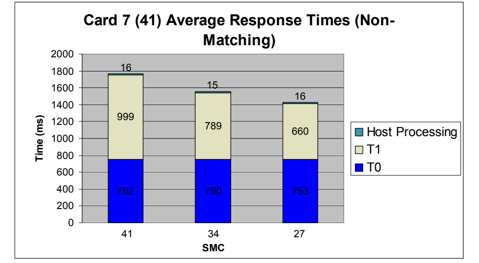
「Card 7 (41) Average Response Times (Non-Matching)」（カード 7（41）の平均応答時間（不一致））と題した積み上げ棒グラフです。縦軸は「Time (ms)」（時間（ミリ秒））で 0〜2000、横軸は「SMC」（サンプルの特徴点数）で 41、34、27 の 3 本の棒があります。各棒は下から T0（青）、T1（薄い黄色）、Host Processing（ホスト処理、青緑）を積み上げ、各部分に値が記されています。T0 は 750〜753 ms、T1 は 660〜999 ms、Host Processing は 15〜16 ms で、棒の合計は 1429〜1767 ms です。
Figure B-30. Card 7 (41) Average Response Times for Non-Matching Templates
図 B-30. Card 7（41）の照合しないテンプレートの平均応答時間
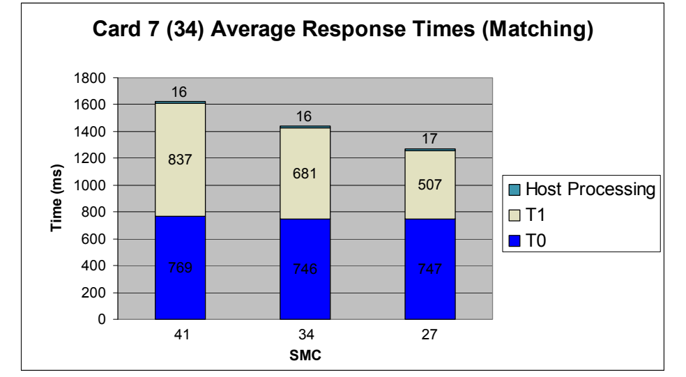
「Card 7 (34) Average Response Times (Matching)」（カード 7（34）の平均応答時間（一致））と題した積み上げ棒グラフです。縦軸は「Time (ms)」（時間（ミリ秒））で 0〜1800、横軸は「SMC」（サンプルの特徴点数）で 41、34、27 の 3 本の棒があります。各棒は下から T0（青）、T1（薄い黄色）、Host Processing（ホスト処理、青緑）を積み上げ、各部分に値が記されています。T0 は 746〜769 ms、T1 は 507〜837 ms、Host Processing は 16〜17 ms で、棒の合計は 1271〜1622 ms です。
Figure B-31. Card 7 (34) Average Response Times for Matching Templates
図 B-31. Card 7（34）の照合するテンプレートの平均応答時間
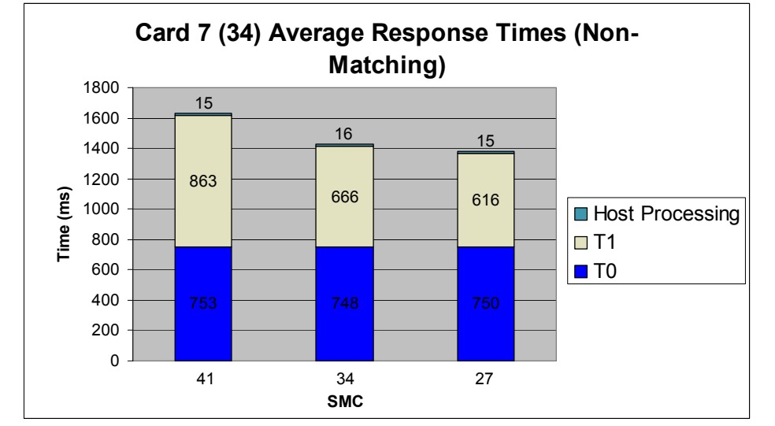
「Card 7 (34) Average Response Times (Non-Matching)」（カード 7（34）の平均応答時間（不一致））と題した積み上げ棒グラフです。縦軸は「Time (ms)」（時間（ミリ秒））で 0〜1800、横軸は「SMC」（サンプルの特徴点数）で 41、34、27 の 3 本の棒があります。各棒は下から T0（青）、T1（薄い黄色）、Host Processing（ホスト処理、青緑）を積み上げ、各部分に値が記されています。T0 は 748〜753 ms、T1 は 616〜863 ms、Host Processing は 15〜16 ms で、棒の合計は 1381〜1631 ms です。
Figure B-32. Card 7 (34) Average Response Times for Non-Matching Templates
図 B-32. Card 7（34）の照合しないテンプレートの平均応答時間
「Card 7 (27) Average Response Times (Matching)」（カード 7（27）の平均応答時間（一致））と題した積み上げ棒グラフです。縦軸は「Time (ms)」（時間（ミリ秒））で 0〜1600、横軸は「SMC」（サンプルの特徴点数）で 41、34、27 の 3 本の棒があります。各棒は下から T0（青）、T1（薄い黄色）、Host Processing（ホスト処理、青緑）を積み上げ、各部分に値が記されています。T0 は 737〜738 ms、T1 は 458〜689 ms、Host Processing は 15〜16 ms で、棒の合計は 1211〜1442 ms です。
Figure B-33. Card 7 (27) Average Response Times for Matching Templates
図 B-33. Card 7（27）の照合するテンプレートの平均応答時間
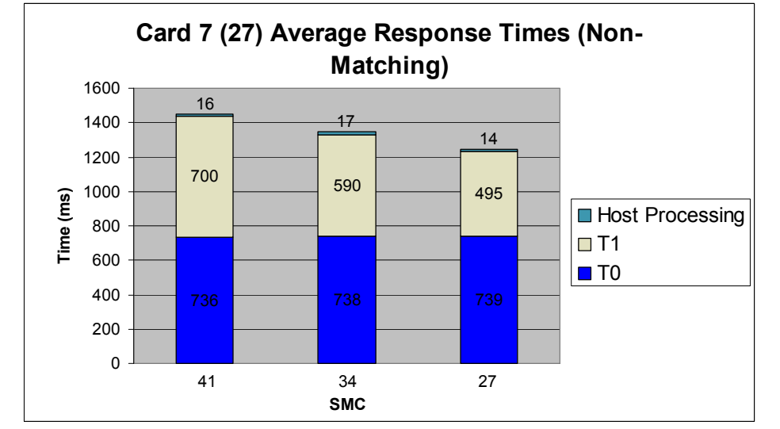
「Card 7 (27) Average Response Times (Non-Matching)」（カード 7（27）の平均応答時間（不一致））と題した積み上げ棒グラフです。縦軸は「Time (ms)」（時間（ミリ秒））で 0〜1600、横軸は「SMC」（サンプルの特徴点数）で 41、34、27 の 3 本の棒があります。各棒は下から T0（青）、T1（薄い黄色）、Host Processing（ホスト処理、青緑）を積み上げ、各部分に値が記されています。T0 は 736〜739 ms、T1 は 495〜700 ms、Host Processing は 14〜17 ms で、棒の合計は 1248〜1452 ms です。
Figure B-34. Card 7 (27) Average Response Times for Non-Matching Templates
図 B-34. Card 7（27）の照合しないテンプレートの平均応答時間

「Card 8 (41) Average Response Times (Matching)」（カード 8（41）の平均応答時間（一致））と題した積み上げ棒グラフです。縦軸は「Time (ms)」（時間（ミリ秒））で 0〜800、横軸は「SMC」（サンプルの特徴点数）で 41、34 の 2 本の棒があります。各棒は下から T0（青）、T1（薄い黄色）、Host Processing（ホスト処理、青緑）を積み上げ、各部分に値が記されています。T0 は 362〜378 ms、T1 は 326〜357 ms、Host Processing は 16〜17 ms で、棒の合計は 705〜751 ms です。右下に「Note: No matching templates resulted when SMC = 27.」（SMC = 27 では一致するテンプレートが得られなかった）という注記があります。
Figure B-35. Card 8 (41) Average Response Times for Matching Templates
図 B-35. Card 8（41）の照合するテンプレートの平均応答時間
「Card 8 (41) Average Response Times (Non-Matching)」（カード 8（41）の平均応答時間（不一致））と題した積み上げ棒グラフです。縦軸は「Time (ms)」（時間（ミリ秒））で 0〜800、横軸は「SMC」（サンプルの特徴点数）で 41、34、27 の 3 本の棒があります。各棒は下から T0（青）、T1（薄い黄色）、Host Processing（ホスト処理、青緑）を積み上げ、各部分に値が記されています。T0 は 361〜363 ms、T1 は 249〜388 ms、Host Processing は 15〜23 ms で、棒の合計は 627〜764 ms です。
Figure B-36. Card 8 (41) Average Response Times for Non-Matching Templates
図 B-36. Card 8（41）の照合しないテンプレートの平均応答時間
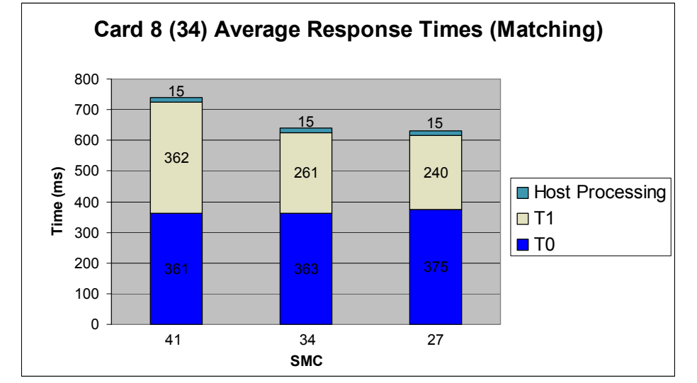
「Card 8 (34) Average Response Times (Matching)」（カード 8（34）の平均応答時間（一致））と題した積み上げ棒グラフです。縦軸は「Time (ms)」（時間（ミリ秒））で 0〜800、横軸は「SMC」（サンプルの特徴点数）で 41、34、27 の 3 本の棒があります。各棒は下から T0（青）、T1（薄い黄色）、Host Processing（ホスト処理、青緑）を積み上げ、各部分に値が記されています。T0 は 361〜375 ms、T1 は 240〜362 ms、Host Processing は 15 ms で、棒の合計は 630〜738 ms です。
Figure B-37. Card 8 (34) Average Response Times for Matching Templates
図 B-37. Card 8（34）の照合するテンプレートの平均応答時間
「Card 8 (34) Average Response Times (Non-Matching)」（カード 8（34）の平均応答時間（不一致））と題した積み上げ棒グラフです。縦軸は「Time (ms)」（時間（ミリ秒））で 0〜800、横軸は「SMC」（サンプルの特徴点数）で 41、34、27 の 3 本の棒があります。各棒は下から T0（青）、T1（薄い黄色）、Host Processing（ホスト処理、青緑）を積み上げ、各部分に値が記されています。T0 は 360〜374 ms、T1 は 244〜339 ms、Host Processing は 15〜16 ms で、棒の合計は 624〜715 ms です。
Figure B-38. Card 8 (34) Average Response Times for Non-Matching Templates
図 B-38. Card 8（34）の照合しないテンプレートの平均応答時間
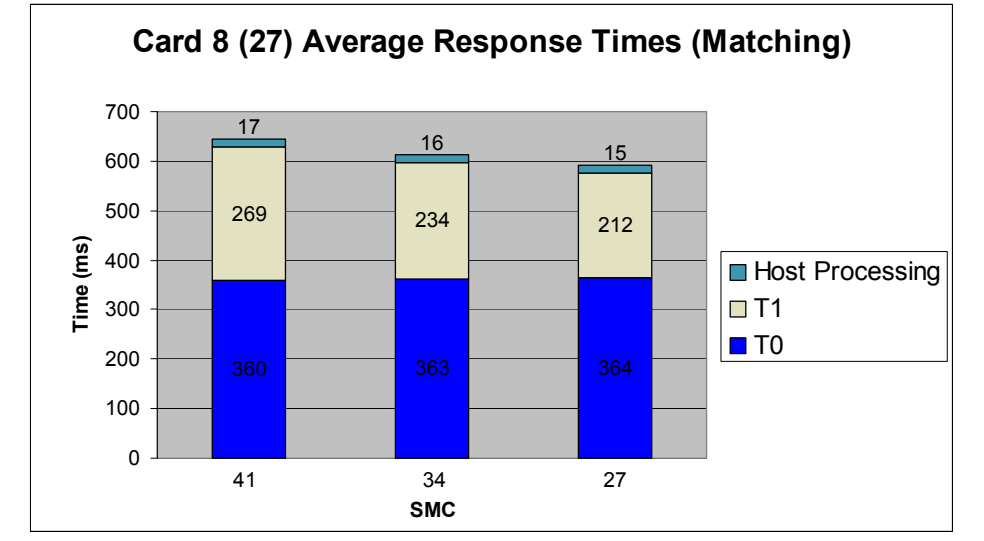
「Card 8 (27) Average Response Times (Matching)」（カード 8（27）の平均応答時間（一致））と題した積み上げ棒グラフです。縦軸は「Time (ms)」（時間（ミリ秒））で 0〜700、横軸は「SMC」（サンプルの特徴点数）で 41、34、27 の 3 本の棒があります。各棒は下から T0（青）、T1（薄い黄色）、Host Processing（ホスト処理、青緑）を積み上げ、各部分に値が記されています。T0 は 360〜364 ms、T1 は 212〜269 ms、Host Processing は 15〜17 ms で、棒の合計は 591〜646 ms です。
Figure B-39. Card 8 (27) Average Response Times for Matching Templates
図 B-39. Card 8（27）の照合するテンプレートの平均応答時間
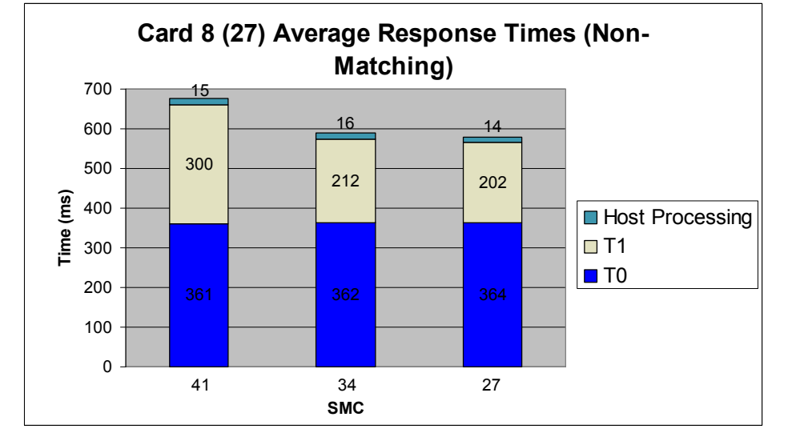
「Card 8 (27) Average Response Times (Non-Matching)」（カード 8（27）の平均応答時間（不一致））と題した積み上げ棒グラフです。縦軸は「Time (ms)」（時間（ミリ秒））で 0〜700、横軸は「SMC」（サンプルの特徴点数）で 41、34、27 の 3 本の棒があります。各棒は下から T0（青）、T1（薄い黄色）、Host Processing（ホスト処理、青緑）を積み上げ、各部分に値が記されています。T0 は 361〜364 ms、T1 は 202〜300 ms、Host Processing は 14〜16 ms で、棒の合計は 580〜676 ms です。
Figure B-40. Card 8 (27) Average Response Times for Non-Matching Templates
図 B-40. Card 8（27）の照合しないテンプレートの平均応答時間

「Card 9 (41) Average Response Times (Matching)」（カード 9（41）の平均応答時間（一致））と題した積み上げ棒グラフです。縦軸は「Time (ms)」（時間（ミリ秒））で 0〜900、横軸は「SMC」（サンプルの特徴点数）で 41、34 の 2 本の棒があります。各棒は下から T0（青）、T1（薄い黄色）、Host Processing（ホスト処理、青緑）を積み上げ、各部分に値が記されています。T0 は 375〜389 ms、T1 は 342〜405 ms、Host Processing は 13〜15 ms で、棒の合計は 746〜793 ms です。右下に「Note: No matching templates resulted when SMC = 27.」（SMC = 27 では一致するテンプレートが得られなかった）という注記があります。
Figure B-41. Card 9 (41) Average Response Times for Matching Templates
図 B-41. Card 9（41）の照合するテンプレートの平均応答時間
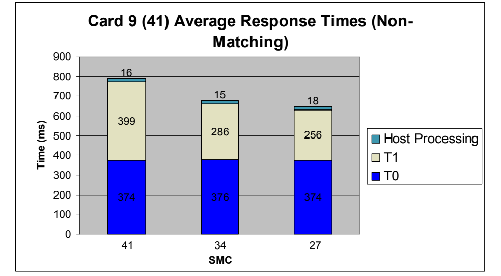
「Card 9 (41) Average Response Times (Non-Matching)」（カード 9（41）の平均応答時間（不一致））と題した積み上げ棒グラフです。縦軸は「Time (ms)」（時間（ミリ秒））で 0〜900、横軸は「SMC」（サンプルの特徴点数）で 41、34、27 の 3 本の棒があります。各棒は下から T0（青）、T1（薄い黄色）、Host Processing（ホスト処理、青緑）を積み上げ、各部分に値が記されています。T0 は 374〜376 ms、T1 は 256〜399 ms、Host Processing は 15〜18 ms で、棒の合計は 648〜789 ms です。
Figure B-42. Card 9 (41) Average Response Times for Non-Matching Templates
図 B-42. Card 9（41）の照合しないテンプレートの平均応答時間
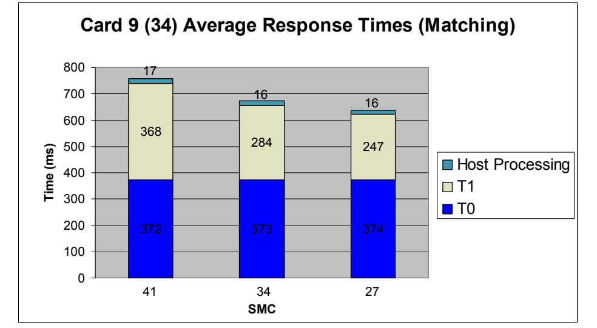
「Card 9 (34) Average Response Times (Matching)」（カード 9（34）の平均応答時間（一致））と題した積み上げ棒グラフです。縦軸は「Time (ms)」（時間（ミリ秒））で 0〜800、横軸は「SMC」（サンプルの特徴点数）で 41、34、27 の 3 本の棒があります。各棒は下から T0（青）、T1（薄い黄色）、Host Processing（ホスト処理、青緑）を積み上げ、各部分に値が記されています。T0 は 372〜374 ms、T1 は 247〜368 ms、Host Processing は 16〜17 ms で、棒の合計は 637〜757 ms です。
Figure B-43. Card 9 (34) Average Response Times for Matching Templates
図 B-43. Card 9（34）の照合するテンプレートの平均応答時間
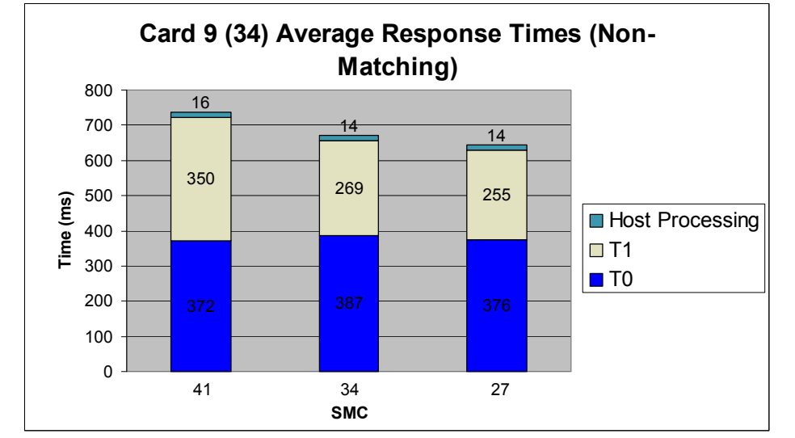
「Card 9 (34) Average Response Times (Non-Matching)」（カード 9（34）の平均応答時間（不一致））と題した積み上げ棒グラフです。縦軸は「Time (ms)」（時間（ミリ秒））で 0〜800、横軸は「SMC」（サンプルの特徴点数）で 41、34、27 の 3 本の棒があります。各棒は下から T0（青）、T1（薄い黄色）、Host Processing（ホスト処理、青緑）を積み上げ、各部分に値が記されています。T0 は 372〜387 ms、T1 は 255〜350 ms、Host Processing は 14〜16 ms で、棒の合計は 645〜738 ms です。
Figure B-44. Card 9 (34) Average Response Times for Non-Matching Templates
図 B-44. Card 9（34）の照合しないテンプレートの平均応答時間
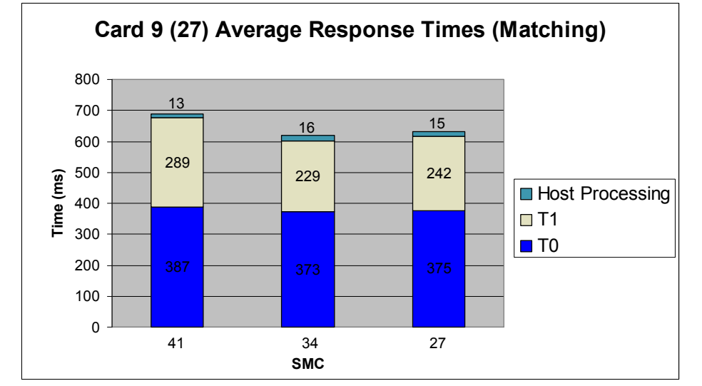
「Card 9 (27) Average Response Times (Matching)」（カード 9（27）の平均応答時間（一致））と題した積み上げ棒グラフです。縦軸は「Time (ms)」（時間（ミリ秒））で 0〜800、横軸は「SMC」（サンプルの特徴点数）で 41、34、27 の 3 本の棒があります。各棒は下から T0（青）、T1（薄い黄色）、Host Processing（ホスト処理、青緑）を積み上げ、各部分に値が記されています。T0 は 373〜387 ms、T1 は 229〜289 ms、Host Processing は 13〜16 ms で、棒の合計は 618〜689 ms です。
Figure B-45. Card 9 (27) Average Response Times for Matching Templates
図 B-45. Card 9（27）の照合するテンプレートの平均応答時間
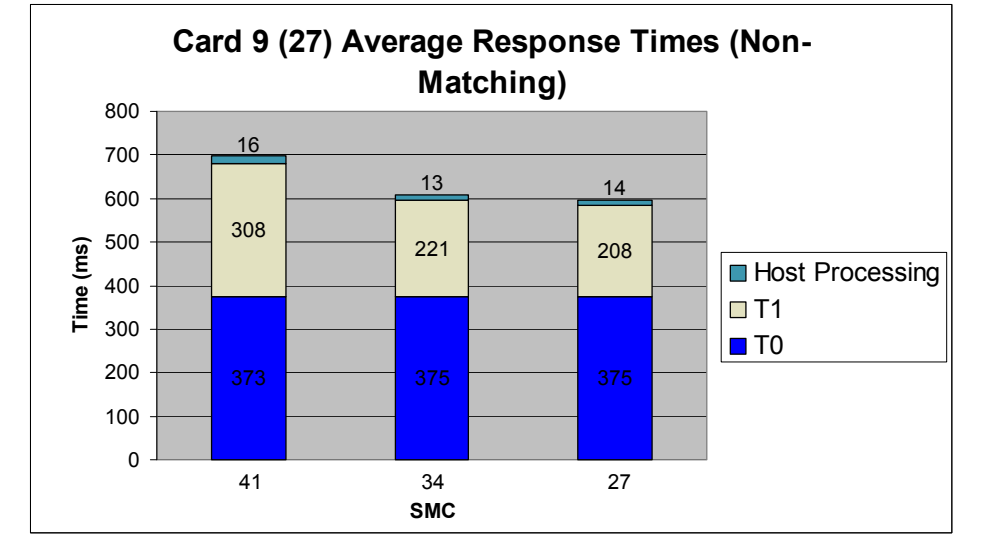
「Card 9 (27) Average Response Times (Non-Matching)」（カード 9（27）の平均応答時間（不一致））と題した積み上げ棒グラフです。縦軸は「Time (ms)」（時間（ミリ秒））で 0〜800、横軸は「SMC」（サンプルの特徴点数）で 41、34、27 の 3 本の棒があります。各棒は下から T0（青）、T1（薄い黄色）、Host Processing（ホスト処理、青緑）を積み上げ、各部分に値が記されています。T0 は 373〜375 ms、T1 は 208〜308 ms、Host Processing は 13〜16 ms で、棒の合計は 597〜697 ms です。
Figure B-46. Card 9 (27) Average Response Times for Non-Matching Templates
図 B-46. Card 9（27）の不一致テンプレートの平均応答時間

「Card 10 (41) Average Response Times (Matching)」（カード 10（41）の平均応答時間（一致））と題した積み上げ棒グラフです。縦軸は「Time (ms)」（時間（ミリ秒））で 0〜900、横軸は「SMC」（サンプルの特徴点数）で 41、34 の 2 本の棒があります。各棒は下から T0（青）、T1（薄い黄色）、Host Processing（ホスト処理、青緑）を積み上げ、各部分に値が記されています。T0 は 398〜412 ms、T1 は 393〜421 ms、Host Processing は 13〜16 ms で、棒の合計は 807〜846 ms です。右下に「Note: No matching templates resulted when SMC = 27.」（SMC = 27 では一致するテンプレートが得られなかった）という注記があります。
Figure B-47. Card 10 (41) Average Response Times for Matching Templates
図 B-47. Card 10（41）の一致テンプレートの平均応答時間
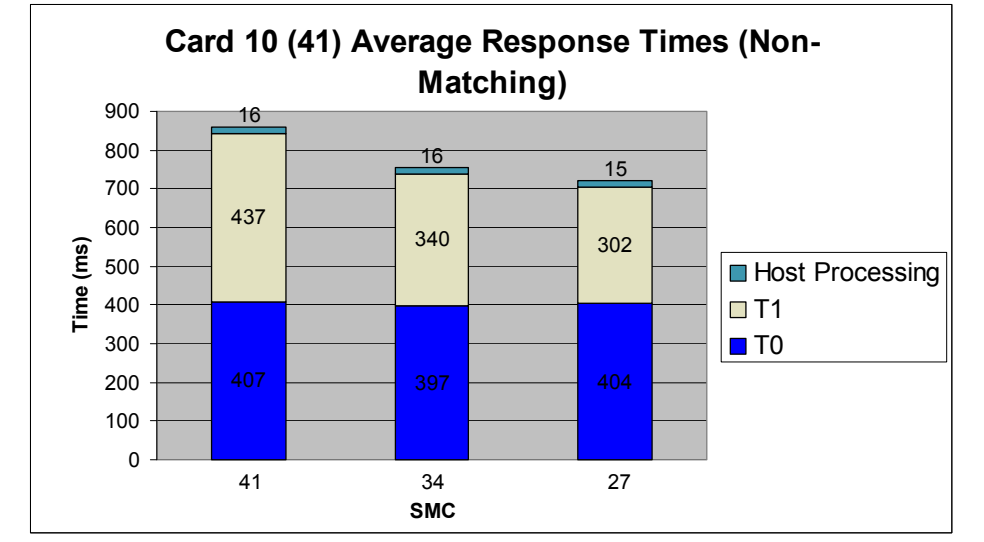
「Card 10 (41) Average Response Times (Non-Matching)」（カード 10（41）の平均応答時間（不一致））と題した積み上げ棒グラフです。縦軸は「Time (ms)」（時間（ミリ秒））で 0〜900、横軸は「SMC」（サンプルの特徴点数）で 41、34、27 の 3 本の棒があります。各棒は下から T0（青）、T1（薄い黄色）、Host Processing（ホスト処理、青緑）を積み上げ、各部分に値が記されています。T0 は 397〜407 ms、T1 は 302〜437 ms、Host Processing は 15〜16 ms で、棒の合計は 721〜860 ms です。
Figure B-48. Card 10 (41) Average Response Times for Non-Matching Templates
図 B-48. Card 10（41）の不一致テンプレートの平均応答時間
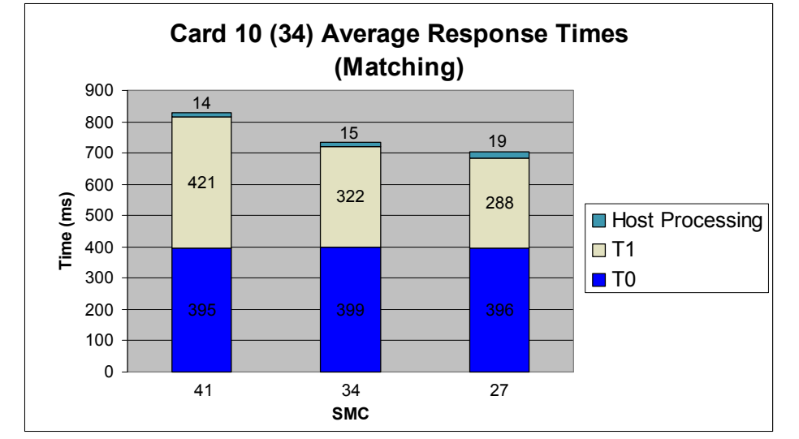
「Card 10 (34) Average Response Times (Matching)」（カード 10（34）の平均応答時間（一致））と題した積み上げ棒グラフです。縦軸は「Time (ms)」（時間（ミリ秒））で 0〜900、横軸は「SMC」（サンプルの特徴点数）で 41、34、27 の 3 本の棒があります。各棒は下から T0（青）、T1（薄い黄色）、Host Processing（ホスト処理、青緑）を積み上げ、各部分に値が記されています。T0 は 395〜399 ms、T1 は 288〜421 ms、Host Processing は 14〜19 ms で、棒の合計は 703〜830 ms です。
Figure B-49. Card 10 (34) Average Response Times for Matching Templates
図 B-49. Card 10（34）の一致テンプレートの平均応答時間
「Card 10 (34) Average Response Times (Non-Matching)」（カード 10（34）の平均応答時間（不一致））と題した積み上げ棒グラフです。縦軸は「Time (ms)」（時間（ミリ秒））で 0〜900、横軸は「SMC」（サンプルの特徴点数）で 41、34、27 の 3 本の棒があります。各棒は下から T0（青）、T1（薄い黄色）、Host Processing（ホスト処理、青緑）を積み上げ、各部分に値が記されています。T0 は 398〜407 ms、T1 は 297〜391 ms、Host Processing は 12〜17 ms で、棒の合計は 712〜810 ms です。
Figure B-50. Card 10 (34) Average Response Times for Non-Matching Templates
図 B-50. Card 10（34）の不一致テンプレートの平均応答時間
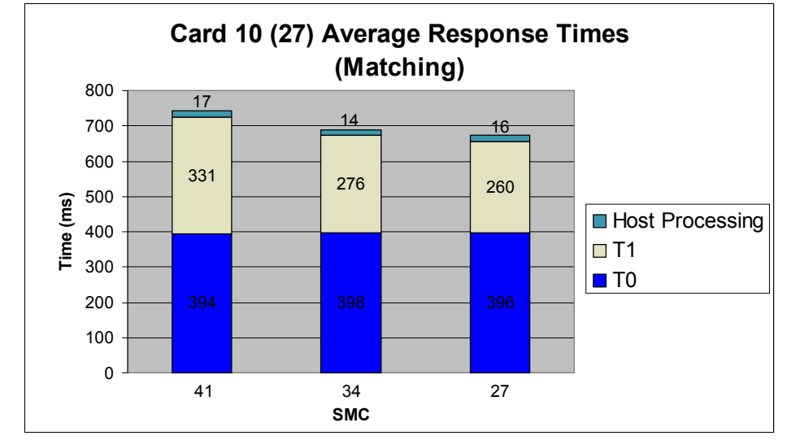
「Card 10 (27) Average Response Times (Matching)」（カード 10（27）の平均応答時間（一致））と題した積み上げ棒グラフです。縦軸は「Time (ms)」（時間（ミリ秒））で 0〜800、横軸は「SMC」（サンプルの特徴点数）で 41、34、27 の 3 本の棒があります。各棒は下から T0（青）、T1（薄い黄色）、Host Processing（ホスト処理、青緑）を積み上げ、各部分に値が記されています。T0 は 394〜398 ms、T1 は 260〜331 ms、Host Processing は 14〜17 ms で、棒の合計は 672〜742 ms です。
Figure B-51. Card 10 (27) Average Response Times for Matching Templates
図 B-51. Card 10（27）の一致テンプレートの平均応答時間
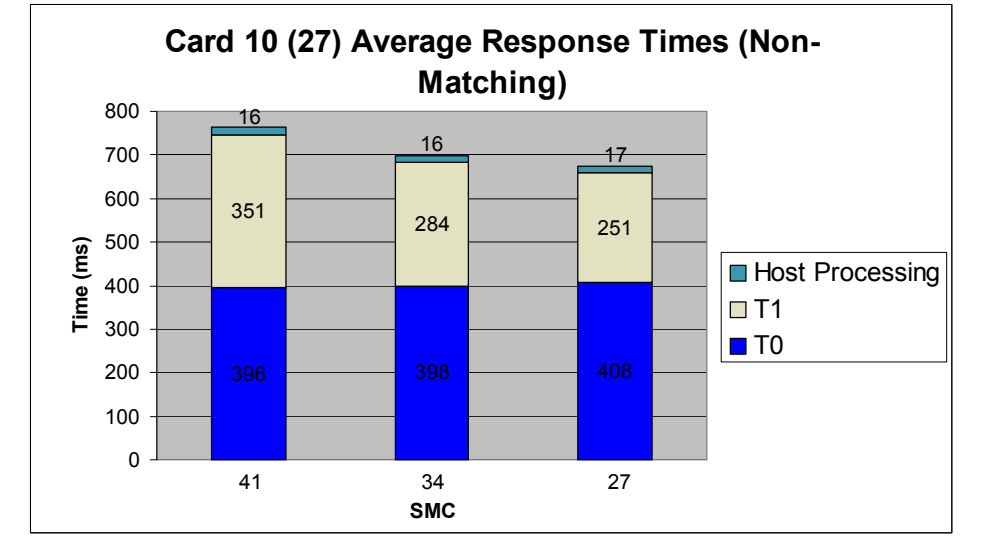
「Card 10 (27) Average Response Times (Non-Matching)」（カード 10（27）の平均応答時間（不一致））と題した積み上げ棒グラフです。縦軸は「Time (ms)」（時間（ミリ秒））で 0〜800、横軸は「SMC」（サンプルの特徴点数）で 41、34、27 の 3 本の棒があります。各棒は下から T0（青）、T1（薄い黄色）、Host Processing（ホスト処理、青緑）を積み上げ、各部分に値が記されています。T0 は 396〜408 ms、T1 は 251〜351 ms、Host Processing は 16〜17 ms で、棒の合計は 676〜763 ms です。
Figure B-52. Card 10 (27) Average Response Times for Non-Matching Templates
図 B-52. Card 10（27）の不一致テンプレートの平均応答時間
「Card 11 (41) Average Response Times (Matching)」（カード 11（41）の平均応答時間（一致））と題した積み上げ棒グラフです。縦軸は「Time (ms)」（時間（ミリ秒））で 0〜2500、横軸は「SMC」（サンプルの特徴点数）で 41、34、27 の 3 本の棒があります。各棒は下から T0（青）、T1（薄い黄色）、Host Processing（ホスト処理、青緑）を積み上げ、各部分に値が記されています。T0 は 1980〜1981 ms、T1 は 136〜167 ms、Host Processing は 29〜30 ms で、棒の合計は 2147〜2176 ms です。
Figure B-53. Card 11 (41) Average Response Times for Matching Templates
図 B-53. Card 11（41）の一致テンプレートの平均応答時間
「Card 11 (41) Average Response Times (Non-Matching)」（カード 11（41）の平均応答時間（不一致））と題した積み上げ棒グラフです。縦軸は「Time (ms)」（時間（ミリ秒））で 0〜2500、横軸は「SMC」（サンプルの特徴点数）で 41、34、27 の 3 本の棒があります。各棒は下から T0（青）、T1（薄い黄色）、Host Processing（ホスト処理、青緑）を積み上げ、各部分に値が記されています。T0 は 1978〜1982 ms、T1 は 173〜201 ms、Host Processing は 29 ms で、棒の合計は 2184〜2208 ms です。
Figure B-54. Card 11 (41) Average Response Times for Non-Matching Templates
図 B-54. Card 11（41）の不一致テンプレートの平均応答時間
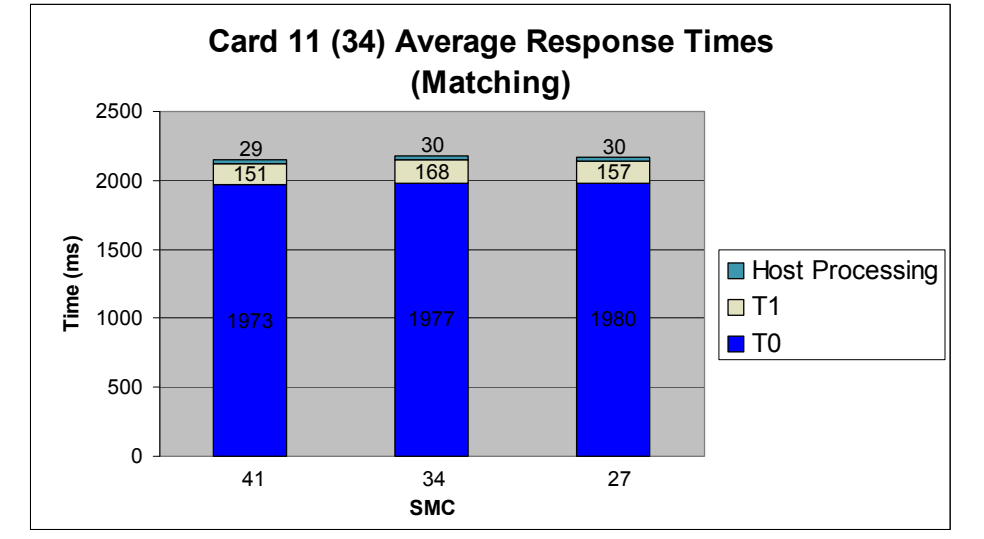
「Card 11 (34) Average Response Times (Matching)」（カード 11（34）の平均応答時間（一致））と題した積み上げ棒グラフです。縦軸は「Time (ms)」（時間（ミリ秒））で 0〜2500、横軸は「SMC」（サンプルの特徴点数）で 41、34、27 の 3 本の棒があります。各棒は下から T0（青）、T1（薄い黄色）、Host Processing（ホスト処理、青緑）を積み上げ、各部分に値が記されています。T0 は 1973〜1980 ms、T1 は 151〜168 ms、Host Processing は 29〜30 ms で、棒の合計は 2153〜2175 ms です。
Figure B-55. Card 11 (34) Average Response Times for Matching Templates
図 B-55. Card 11（34）の一致テンプレートの平均応答時間
「Card 11 (34) Average Response Times (Non-Matching)」（カード 11（34）の平均応答時間（不一致））と題した積み上げ棒グラフです。縦軸は「Time (ms)」（時間（ミリ秒））で 0〜2500、横軸は「SMC」（サンプルの特徴点数）で 41、34、27 の 3 本の棒があります。各棒は下から T0（青）、T1（薄い黄色）、Host Processing（ホスト処理、青緑）を積み上げ、各部分に値が記されています。T0 は 1973〜1981 ms、T1 は 162〜209 ms、Host Processing は 28〜29 ms で、棒の合計は 2172〜2211 ms です。
Figure B-56. Card 11 (34) Average Response Times for Non-Matching Templates
図 B-56. Card 11（34）の不一致テンプレートの平均応答時間
「Card 11 (27) Average Response Times (Matching)」（カード 11（27）の平均応答時間（一致））と題した積み上げ棒グラフです。縦軸は「Time (ms)」（時間（ミリ秒））で 0〜2500、横軸は「SMC」（サンプルの特徴点数）で 41、34、27 の 3 本の棒があります。各棒は下から T0（青）、T1（薄い黄色）、Host Processing（ホスト処理、青緑）を積み上げ、各部分に値が記されています。T0 は 1990〜1996 ms、T1 は 141〜186 ms、Host Processing は 27〜31 ms で、棒の合計は 2162〜2211 ms です。
Figure B-57. Card 11 (27) Average Response Times for Matching Templates
図 B-57. Card 11（27）の一致テンプレートの平均応答時間
「Card 11 (27) Average Response Times (Non-Matching)」（カード 11（27）の平均応答時間（不一致））と題した積み上げ棒グラフです。縦軸は「Time (ms)」（時間（ミリ秒））で 0〜2500、横軸は「SMC」（サンプルの特徴点数）で 41、34、27 の 3 本の棒があります。各棒は下から T0（青）、T1（薄い黄色）、Host Processing（ホスト処理、青緑）を積み上げ、各部分に値が記されています。T0 は 1992〜1997 ms、T1 は 148〜178 ms、Host Processing は 27〜29 ms で、棒の合計は 2172〜2198 ms です。
Figure B-58. Card 11 (27) Average Response Times for Non-Matching Templates
図 B-58. Card 11（27）の不一致テンプレートの平均応答時間
「Card 12 (41) Average Response Times (Matching)」（カード 12（41）の平均応答時間（一致））と題した積み上げ棒グラフです。縦軸は「Time (ms)」（時間（ミリ秒））で 0〜2500、横軸は「SMC」（サンプルの特徴点数）で 41、34、27 の 3 本の棒があります。各棒は下から T0（青）、T1（薄い黄色）、Host Processing（ホスト処理、青緑）を積み上げ、各部分に値が記されています。T0 は 2013〜2015 ms、T1 は 152〜187 ms、Host Processing は 29 ms で、棒の合計は 2196〜2230 ms です。
Figure B-59. Card 12 (41) Average Response Times for Matching Templates
図 B-59. Card 12（41）の一致テンプレートの平均応答時間
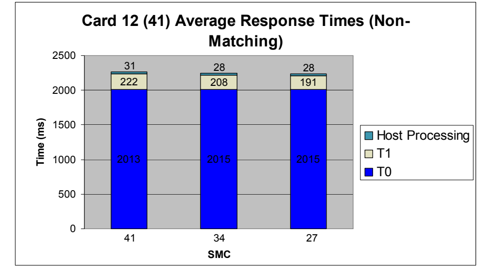
「Card 12 (41) Average Response Times (Non-Matching)」（カード 12（41）の平均応答時間（不一致））と題した積み上げ棒グラフです。縦軸は「Time (ms)」（時間（ミリ秒））で 0〜2500、横軸は「SMC」（サンプルの特徴点数）で 41、34、27 の 3 本の棒があります。各棒は下から T0（青）、T1（薄い黄色）、Host Processing（ホスト処理、青緑）を積み上げ、各部分に値が記されています。T0 は 2013〜2015 ms、T1 は 191〜222 ms、Host Processing は 28〜31 ms で、棒の合計は 2234〜2266 ms です。
Figure B-60. Card 12 (41) Average Response Times for Non-Matching Templates
図 B-60. Card 12（41）の不一致テンプレートの平均応答時間
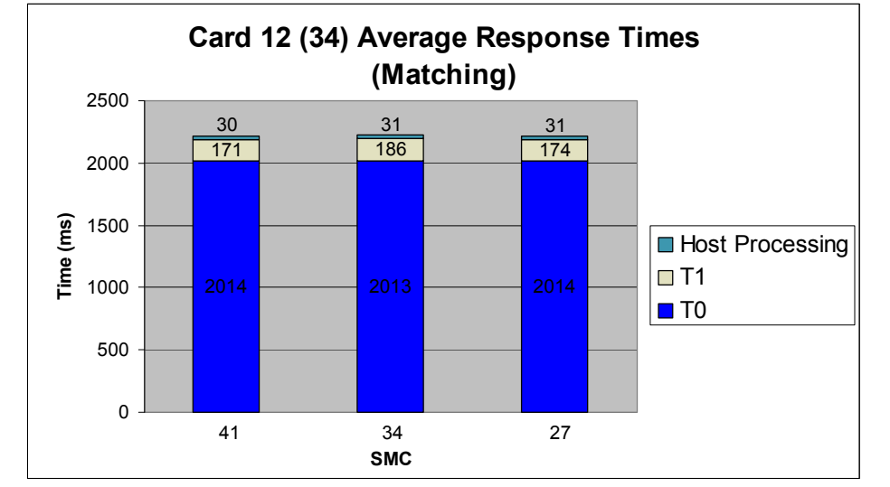
「Card 12 (34) Average Response Times (Matching)」（カード 12（34）の平均応答時間（一致））と題した積み上げ棒グラフです。縦軸は「Time (ms)」（時間（ミリ秒））で 0〜2500、横軸は「SMC」（サンプルの特徴点数）で 41、34、27 の 3 本の棒があります。各棒は下から T0（青）、T1（薄い黄色）、Host Processing（ホスト処理、青緑）を積み上げ、各部分に値が記されています。T0 は 2013〜2014 ms、T1 は 171〜186 ms、Host Processing は 30〜31 ms で、棒の合計は 2215〜2230 ms です。
Figure B-61. Card 12 (34) Average Response Times for Matching Templates
図 B-61. Card 12（34）の一致テンプレートの平均応答時間
「Card 12 (34) Average Response Times (Non-Matching)」（カード 12（34）の平均応答時間（不一致））と題した積み上げ棒グラフです。縦軸は「Time (ms)」（時間（ミリ秒））で 0〜2500、横軸は「SMC」（サンプルの特徴点数）で 41、34、27 の 3 本の棒があります。各棒は下から T0（青）、T1（薄い黄色）、Host Processing（ホスト処理、青緑）を積み上げ、各部分に値が記されています。T0 は 2012〜2014 ms、T1 は 179〜228 ms、Host Processing は 30 ms で、棒の合計は 2223〜2270 ms です。
Figure B-62. Card 12 (34) Average Response Times for Non-Matching Templates
図 B-62. Card 12（34）の不一致テンプレートの平均応答時間
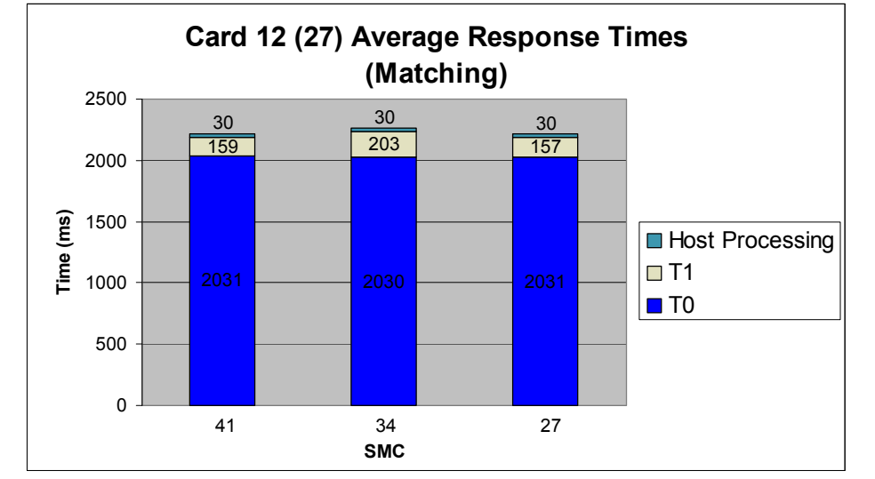
「Card 12 (27) Average Response Times (Matching)」（カード 12（27）の平均応答時間（一致））と題した積み上げ棒グラフです。縦軸は「Time (ms)」（時間（ミリ秒））で 0〜2500、横軸は「SMC」（サンプルの特徴点数）で 41、34、27 の 3 本の棒があります。各棒は下から T0（青）、T1（薄い黄色）、Host Processing（ホスト処理、青緑）を積み上げ、各部分に値が記されています。T0 は 2030〜2031 ms、T1 は 157〜203 ms、Host Processing は 30 ms で、棒の合計は 2218〜2263 ms です。
Figure B-63. Card 12 (27) Average Response Times for Matching Templates
図 B-63. Card 12（27）の一致テンプレートの平均応答時間
「Card 12 (27) Average Response Times (Non-Matching)」（カード 12（27）の平均応答時間（不一致））と題した積み上げ棒グラフです。縦軸は「Time (ms)」（時間（ミリ秒））で 0〜2500、横軸は「SMC」（サンプルの特徴点数）で 41、34、27 の 3 本の棒があります。各棒は下から T0（青）、T1（薄い黄色）、Host Processing（ホスト処理、青緑）を積み上げ、各部分に値が記されています。T0 は 2030〜2031 ms、T1 は 164〜198 ms、Host Processing は 27〜30 ms で、棒の合計は 2222〜2258 ms です。
Figure B-64. Card 12 (27) Average Response Times for Non-Matching Templates
図 B-64. Card 12（27）の不一致テンプレートの平均応答時間
「Card 13 (41) Average Response Times (Matching)」（カード 13（41）の平均応答時間（一致））と題した積み上げ棒グラフです。縦軸は「Time (ms)」（時間（ミリ秒））で 0〜2500、横軸は「SMC」（サンプルの特徴点数）で 41、34、27 の 3 本の棒があります。各棒は下から T0（青）、T1（薄い黄色）、Host Processing（ホスト処理、青緑）を積み上げ、各部分に値が記されています。T0 は 1979〜1982 ms、T1 は 137〜165 ms、Host Processing は 28〜30 ms で、棒の合計は 2146〜2175 ms です。
Figure B-65. Card 13 (41) Average Response Times for Matching Templates5
図 B-65. Card 13（41）の一致テンプレートの平均応答時間5
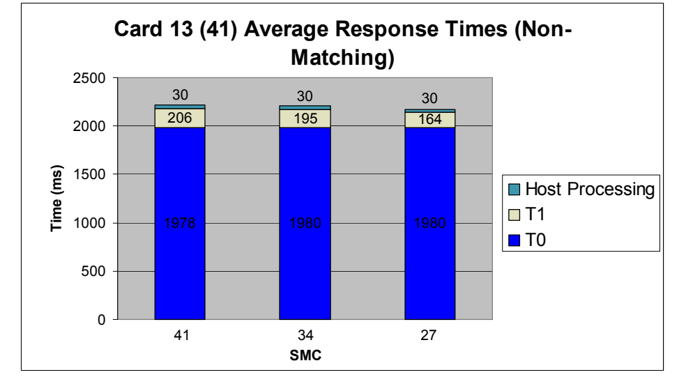
「Card 13 (41) Average Response Times (Non-Matching)」（カード 13（41）の平均応答時間（不一致））と題した積み上げ棒グラフです。縦軸は「Time (ms)」（時間（ミリ秒））で 0〜2500、横軸は「SMC」（サンプルの特徴点数）で 41、34、27 の 3 本の棒があります。各棒は下から T0（青）、T1（薄い黄色）、Host Processing（ホスト処理、青緑）を積み上げ、各部分に値が記されています。T0 は 1978〜1980 ms、T1 は 164〜206 ms、Host Processing は 30 ms で、棒の合計は 2174〜2214 ms です。
Figure B-66. Card 13 (41) Average Response Times for Non-Matching Templates
図 B-66. Card 13（41）の照合しないテンプレートの平均応答時間
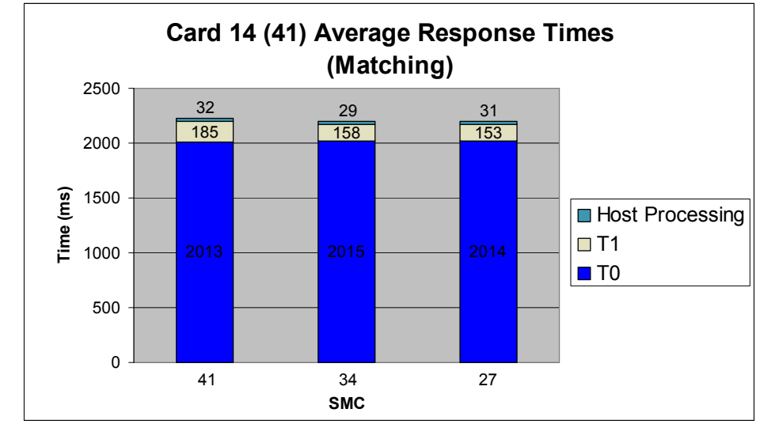
「Card 14 (41) Average Response Times (Matching)」（カード 14（41）の平均応答時間（一致））と題した積み上げ棒グラフです。縦軸は「Time (ms)」（時間（ミリ秒））で 0〜2500、横軸は「SMC」（サンプルの特徴点数）で 41、34、27 の 3 本の棒があります。各棒は下から T0（青）、T1（薄い黄色）、Host Processing（ホスト処理、青緑）を積み上げ、各部分に値が記されています。T0 は 2013〜2015 ms、T1 は 153〜185 ms、Host Processing は 29〜32 ms で、棒の合計は 2198〜2230 ms です。
Figure B-67. Card 14 (41) Average Response Times for Matching Templates6
図 B-67. Card 14（41）の照合するテンプレートの平均応答時間6
「Card 14 (41) Average Response Times (Non-Matching)」（カード 14（41）の平均応答時間（不一致））と題した積み上げ棒グラフです。縦軸は「Time (ms)」（時間（ミリ秒））で 0〜2500、横軸は「SMC」（サンプルの特徴点数）で 41、34、27 の 3 本の棒があります。各棒は下から T0（青）、T1（薄い黄色）、Host Processing（ホスト処理、青緑）を積み上げ、各部分に値が記されています。T0 は 2015 ms、T1 は 180〜224 ms、Host Processing は 28〜30 ms で、棒の合計は 2224〜2267 ms です。
Figure B-68. Card 14 (41) Average Response Times for Non-Matching Templates
図 B-68. Card 14（41）の照合しないテンプレートの平均応答時間
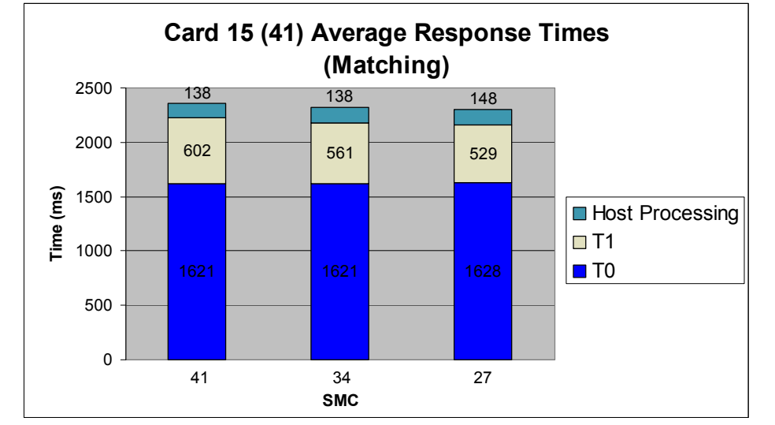
「Card 15 (41) Average Response Times (Matching)」（カード 15（41）の平均応答時間（一致））と題した積み上げ棒グラフです。縦軸は「Time (ms)」（時間（ミリ秒））で 0〜2500、横軸は「SMC」（サンプルの特徴点数）で 41、34、27 の 3 本の棒があります。各棒は下から T0（青）、T1（薄い黄色）、Host Processing（ホスト処理、青緑）を積み上げ、各部分に値が記されています。T0 は 1621〜1628 ms、T1 は 529〜602 ms、Host Processing は 138〜148 ms で、棒の合計は 2305〜2361 ms です。
Figure B-69. Card 15 (41) Average Response Times for Matching Templates
図 B-69. Card 15（41）の照合するテンプレートの平均応答時間
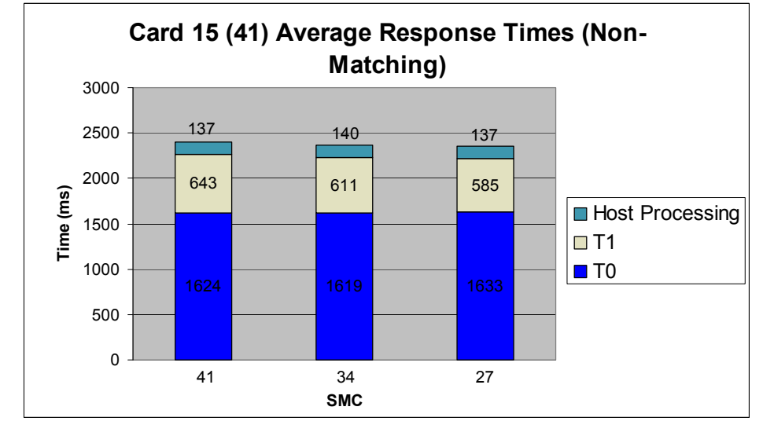
「Card 15 (41) Average Response Times (Non-Matching)」（カード 15（41）の平均応答時間（不一致））と題した積み上げ棒グラフです。縦軸は「Time (ms)」（時間（ミリ秒））で 0〜3000、横軸は「SMC」（サンプルの特徴点数）で 41、34、27 の 3 本の棒があります。各棒は下から T0（青）、T1（薄い黄色）、Host Processing（ホスト処理、青緑）を積み上げ、各部分に値が記されています。T0 は 1619〜1633 ms、T1 は 585〜643 ms、Host Processing は 137〜140 ms で、棒の合計は 2355〜2404 ms です。
Figure B-70. Card 15 (41) Average Response Times for Non-Matching Templates
図 B-70. Card 15（41）の照合しないテンプレートの平均応答時間
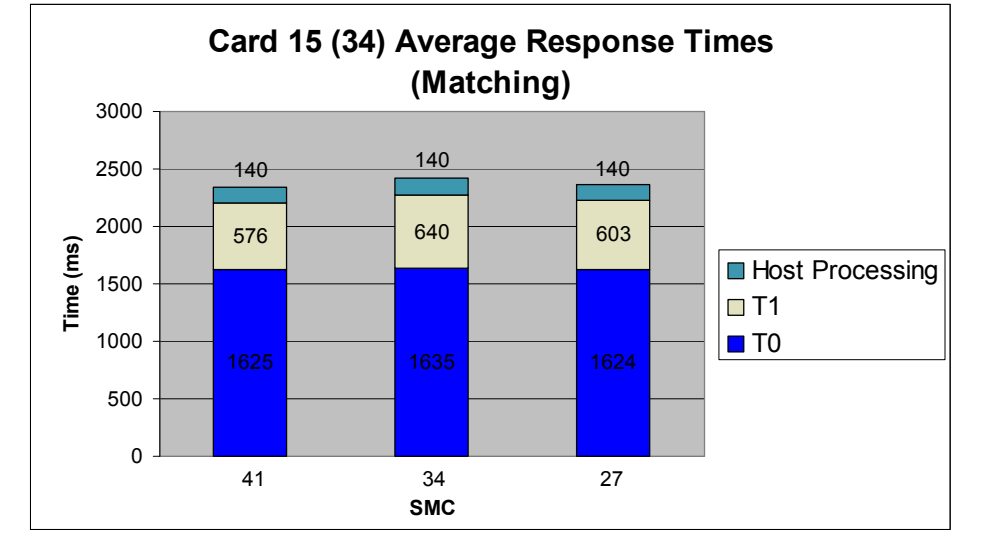
「Card 15 (34) Average Response Times (Matching)」（カード 15（34）の平均応答時間（一致））と題した積み上げ棒グラフです。縦軸は「Time (ms)」（時間（ミリ秒））で 0〜3000、横軸は「SMC」（サンプルの特徴点数）で 41、34、27 の 3 本の棒があります。各棒は下から T0（青）、T1（薄い黄色）、Host Processing（ホスト処理、青緑）を積み上げ、各部分に値が記されています。T0 は 1624〜1635 ms、T1 は 576〜640 ms、Host Processing は 140 ms で、棒の合計は 2341〜2415 ms です。
Figure B-71. Card 15 (34) Average Response Times for Matching Templates
図 B-71. Card 15（34）の照合するテンプレートの平均応答時間
「Card 15 (34) Average Response Times (Non-Matching)」（カード 15（34）の平均応答時間（不一致））と題した積み上げ棒グラフです。縦軸は「Time (ms)」（時間（ミリ秒））で 0〜3000、横軸は「SMC」（サンプルの特徴点数）で 41、34、27 の 3 本の棒があります。各棒は下から T0（青）、T1（薄い黄色）、Host Processing（ホスト処理、青緑）を積み上げ、各部分に値が記されています。T0 は 1626〜1633 ms、T1 は 546〜640 ms、Host Processing は 139〜140 ms で、棒の合計は 2311〜2406 ms です。
Figure B-72. Card 15 (34) Average Response Times for Non-Matching Templates
図 B-72. Card 15（34）の照合しないテンプレートの平均応答時間
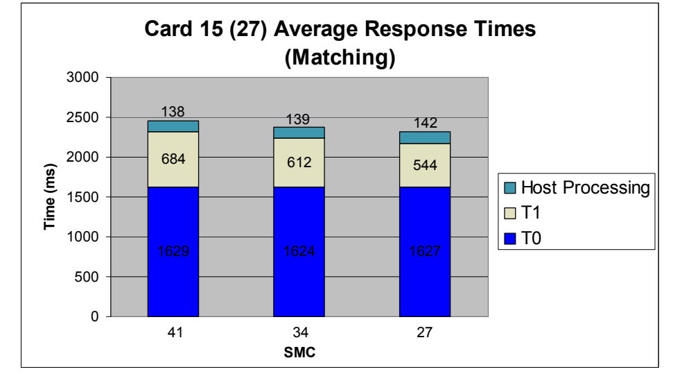
「Card 15 (27) Average Response Times (Matching)」（カード 15（27）の平均応答時間（一致））と題した積み上げ棒グラフです。縦軸は「Time (ms)」（時間（ミリ秒））で 0〜3000、横軸は「SMC」（サンプルの特徴点数）で 41、34、27 の 3 本の棒があります。各棒は下から T0（青）、T1（薄い黄色）、Host Processing（ホスト処理、青緑）を積み上げ、各部分に値が記されています。T0 は 1624〜1629 ms、T1 は 544〜684 ms、Host Processing は 138〜142 ms で、棒の合計は 2313〜2451 ms です。
Figure B-73. Card 15 (27) Average Response Times for Matching Templates
図 B-73. Card 15（27）の照合するテンプレートの平均応答時間
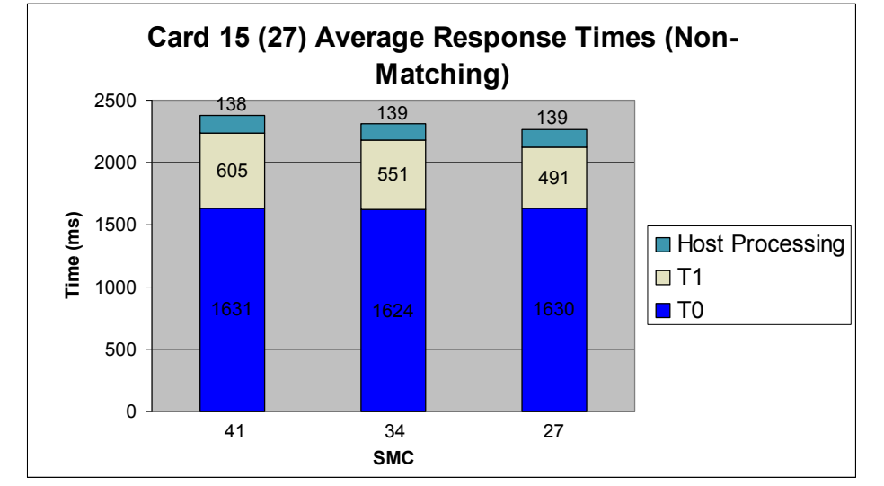
「Card 15 (27) Average Response Times (Non-Matching)」（カード 15（27）の平均応答時間（不一致））と題した積み上げ棒グラフです。縦軸は「Time (ms)」（時間（ミリ秒））で 0〜2500、横軸は「SMC」（サンプルの特徴点数）で 41、34、27 の 3 本の棒があります。各棒は下から T0（青）、T1（薄い黄色）、Host Processing（ホスト処理、青緑）を積み上げ、各部分に値が記されています。T0 は 1624〜1631 ms、T1 は 491〜605 ms、Host Processing は 138〜139 ms で、棒の合計は 2260〜2374 ms です。
Figure B-74. Card 15 (27) Average Response Times for Non-Matching Templates
図 B-74. Card 15（27）の照合しないテンプレートの平均応答時間
「Card 16 (41) Average Response Times (Matching)」（カード 16（41）の平均応答時間（一致））と題した積み上げ棒グラフです。縦軸は「Time (ms)」（時間（ミリ秒））で 0〜2500、横軸は「SMC」（サンプルの特徴点数）で 41、34、27 の 3 本の棒があります。各棒は下から T0（青）、T1（薄い黄色）、Host Processing（ホスト処理、青緑）を積み上げ、各部分に値が記されています。T0 は 1598〜1609 ms、T1 は 532〜622 ms、Host Processing は 137〜138 ms で、棒の合計は 2267〜2369 ms です。
Figure B-75. Card 16 (41) Average Response Times for Matching Templates
図 B-75. Card 16（41）の照合するテンプレートの平均応答時間
「Card 16 (41) Average Response Times (Non-Matching)」（カード 16（41）の平均応答時間（不一致））と題した積み上げ棒グラフです。縦軸は「Time (ms)」（時間（ミリ秒））で 0〜3000、横軸は「SMC」（サンプルの特徴点数）で 41、34、27 の 3 本の棒があります。各棒は下から T0（青）、T1（薄い黄色）、Host Processing（ホスト処理、青緑）を積み上げ、各部分に値が記されています。T0 は 1598〜1608 ms、T1 は 585〜659 ms、Host Processing は 136〜139 ms で、棒の合計は 2320〜2406 ms です。
Figure B-76. Card 16 (41) Average Response Times for Non-Matching Templates
図 B-76. Card 16（41）の照合しないテンプレートの平均応答時間
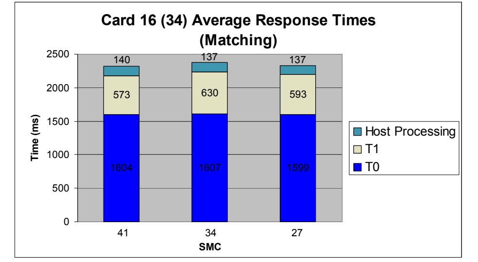
「Card 16 (34) Average Response Times (Matching)」（カード 16（34）の平均応答時間（一致））と題した積み上げ棒グラフです。縦軸は「Time (ms)」（時間（ミリ秒））で 0〜2500、横軸は「SMC」（サンプルの特徴点数）で 41、34、27 の 3 本の棒があります。各棒は下から T0（青）、T1（薄い黄色）、Host Processing（ホスト処理、青緑）を積み上げ、各部分に値が記されています。T0 は 1599〜1607 ms、T1 は 573〜630 ms、Host Processing は 137〜140 ms で、棒の合計は 2317〜2374 ms です。
Figure B-77. Card 16 (34) Average Response Times for Matching Templates
図 B-77. Card 16（34）の照合するテンプレートの平均応答時間
「Card 16 (34) Average Response Times (Non-Matching)」（カード 16（34）の平均応答時間（不一致））と題した積み上げ棒グラフです。縦軸は「Time (ms)」（時間（ミリ秒））で 0〜2500、横軸は「SMC」（サンプルの特徴点数）で 41、34、27 の 3 本の棒があります。各棒は下から T0（青）、T1（薄い黄色）、Host Processing（ホスト処理、青緑）を積み上げ、各部分に値が記されています。T0 は 1599〜1608 ms、T1 は 535〜636 ms、Host Processing は 136〜138 ms で、棒の合計は 2272〜2378 ms です。
Figure B-78. Card 16 (34) Average Response Times for Non-Matching Templates
図 B-78. Card 16（34）の照合しないテンプレートの平均応答時間
「Card 16 (27) Average Response Times (Matching)」（カード 16（27）の平均応答時間（一致））と題した積み上げ棒グラフです。縦軸は「Time (ms)」（時間（ミリ秒））で 0〜3000、横軸は「SMC」（サンプルの特徴点数）で 41、34、27 の 3 本の棒があります。各棒は下から T0（青）、T1（薄い黄色）、Host Processing（ホスト処理、青緑）を積み上げ、各部分に値が記されています。T0 は 1600〜1613 ms、T1 は 537〜672 ms、Host Processing は 136〜139 ms で、棒の合計は 2286〜2411 ms です。
Figure B-79. Card 16 (27) Average Response Times for Matching Templates
図 B-79. Card 16（27）の照合するテンプレートの平均応答時間
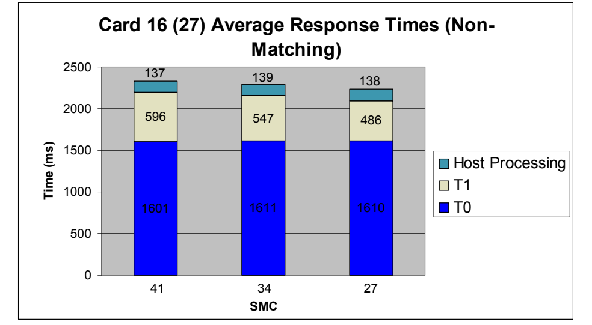
「Card 16 (27) Average Response Times (Non-Matching)」（カード 16（27）の平均応答時間（不一致））と題した積み上げ棒グラフです。縦軸は「Time (ms)」（時間（ミリ秒））で 0〜2500、横軸は「SMC」（サンプルの特徴点数）で 41、34、27 の 3 本の棒があります。各棒は下から T0（青）、T1（薄い黄色）、Host Processing（ホスト処理、青緑）を積み上げ、各部分に値が記されています。T0 は 1601〜1611 ms、T1 は 486〜596 ms、Host Processing は 137〜139 ms で、棒の合計は 2234〜2334 ms です。
Figure B-80. Card 16 (27) Average Response Times for Non-Matching Templates
図 B-80. Card 16（27）の照合しないテンプレートの平均応答時間
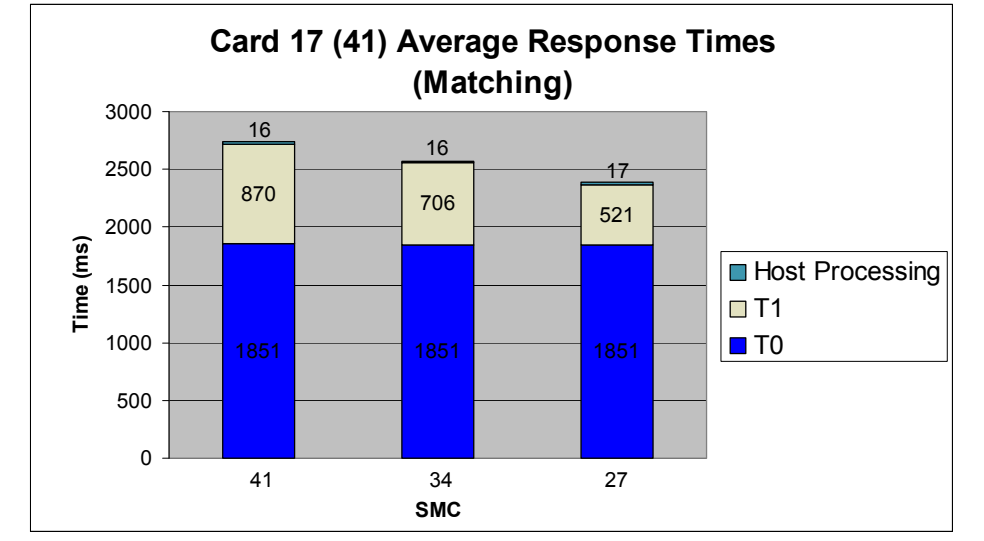
「Card 17 (41) Average Response Times (Matching)」（カード 17（41）の平均応答時間（一致））と題した積み上げ棒グラフです。縦軸は「Time (ms)」（時間（ミリ秒））で 0〜3000、横軸は「SMC」（サンプルの特徴点数）で 41、34、27 の 3 本の棒があります。各棒は下から T0（青）、T1（薄い黄色）、Host Processing（ホスト処理、青緑）を積み上げ、各部分に値が記されています。T0 は 1851 ms、T1 は 521〜870 ms、Host Processing は 16〜17 ms で、棒の合計は 2389〜2737 ms です。
Figure B-81. Card 17 (41) Average Response Times for Matching Templates
図 B-81. Card 17（41）の照合するテンプレートの平均応答時間
「Card 17 (41) Average Response Times (Non-Matching)」（カード 17（41）の平均応答時間（不一致））と題した積み上げ棒グラフです。縦軸は「Time (ms)」（時間（ミリ秒））で 0〜3000、横軸は「SMC」（サンプルの特徴点数）で 41、34、27 の 3 本の棒があります。各棒は下から T0（青）、T1（薄い黄色）、Host Processing（ホスト処理、青緑）を積み上げ、各部分に値が記されています。T0 は 1851〜1853 ms、T1 は 655〜1001 ms、Host Processing は 14〜17 ms で、棒の合計は 2522〜2869 ms です。
Figure B-82. Card 17 (41) Average Response Times for Non-Matching Templates
図 B-82. Card 17（41）の照合しないテンプレートの平均応答時間
「Card 17 (34) Average Response Times (Matching)」（カード 17（34）の平均応答時間（一致））と題した積み上げ棒グラフです。縦軸は「Time (ms)」（時間（ミリ秒））で 0〜3000、横軸は「SMC」（サンプルの特徴点数）で 41、34、27 の 3 本の棒があります。各棒は下から T0（青）、T1（薄い黄色）、Host Processing（ホスト処理、青緑）を積み上げ、各部分に値が記されています。T0 は 1833〜1874 ms、T1 は 501〜817 ms、Host Processing は 13〜16 ms で、棒の合計は 2347〜2707 ms です。
Figure B-83. Card 17 (34) Average Response Times for Matching Templates
図 B-83. Card 17（34）の照合するテンプレートの平均応答時間
「Card 17 (34) Average Response Times (Non-Matching)」（カード 17（34）の平均応答時間（不一致））と題した積み上げ棒グラフです。縦軸は「Time (ms)」（時間（ミリ秒））で 0〜3000、横軸は「SMC」（サンプルの特徴点数）で 41、34、27 の 3 本の棒があります。各棒は下から T0（青）、T1（薄い黄色）、Host Processing（ホスト処理、青緑）を積み上げ、各部分に値が記されています。T0 は 1833〜1867 ms、T1 は 616〜849 ms、Host Processing は 16〜17 ms で、棒の合計は 2466〜2732 ms です。
Figure B-84. Card 17 (34) Average Response Times for Non-Matching Templates
図 B-84. Card 17（34）の照合しないテンプレートの平均応答時間
「Card 17 (27) Average Response Times (Matching)」（カード 17（27）の平均応答時間（一致））と題した積み上げ棒グラフです。縦軸は「Time (ms)」（時間（ミリ秒））で 0〜3000、横軸は「SMC」（サンプルの特徴点数）で 41、34、27 の 3 本の棒があります。各棒は下から T0（青）、T1（薄い黄色）、Host Processing（ホスト処理、青緑）を積み上げ、各部分に値が記されています。T0 は 1871〜1877 ms、T1 は 470〜708 ms、Host Processing は 15〜18 ms で、棒の合計は 2358〜2600 ms です。
Figure B-85. Card 17 (27) Average Response Times for Matching Templates
図 B-85. Card 17（27）の照合するテンプレートの平均応答時間
「Card 17 (27) Average Response Times (Non-Matching)」（カード 17（27）の平均応答時間（不一致））と題した積み上げ棒グラフです。縦軸は「Time (ms)」（時間（ミリ秒））で 0〜3000、横軸は「SMC」（サンプルの特徴点数）で 41、34、27 の 3 本の棒があります。各棒は下から T0（青）、T1（薄い黄色）、Host Processing（ホスト処理、青緑）を積み上げ、各部分に値が記されています。T0 は 1871〜1883 ms、T1 は 505〜722 ms、Host Processing は 15〜17 ms で、棒の合計は 2395〜2620 ms です。
Figure B-86. Card 17 (27) Average Response Times for Non-Matching Templates
図 B-86. Card 17（27）の照合しないテンプレートの平均応答時間
Appendix B—Response Time Graphs
付録 B — 応答時間のグラフ
「Card 1 (41) Response Times (Matching)」（カード 1（41）の応答時間（一致））と題した折れ線グラフです。縦軸は「Time (ms)」（時間（ミリ秒））で 740〜880、横軸は「Trial #」（試行番号）で 1〜100 の目盛りがあります。試行ごとの応答時間が 3 系列で描かれています。SMC = 41（青のひし形）はおおむね 800 ms 前後で、約 780〜860 ms の範囲にあります。SMC = 34（緑の四角）はおおむね 765 ms 前後で、約 750〜830 ms の範囲にあります。SMC = 27（赤の三角）はおおむね 765 ms 前後で、約 750〜830 ms の範囲にあります。
Figure C-1. Card 1 (41) Response Times for Matching Templates
図 C-1. Card 1（41）の照合するテンプレートの応答時間
「Card 1 (41) Response Times (Non-Matching)」（カード 1（41）の応答時間（不一致））と題した折れ線グラフです。縦軸は「Time (ms)」（時間（ミリ秒））で 770〜840、横軸は「Trial #」（試行番号）で 1〜100 の目盛りがあります。試行ごとの応答時間が 3 系列で描かれています。SMC = 41（青のひし形）はおおむね 830 ms 前後で、約 815〜830 ms の範囲にあります。SMC = 34（緑の四角）はおおむね 815 ms 前後で、約 795〜830 ms の範囲にあります。SMC = 27（赤の三角）はおおむね 795 ms 前後で、約 780〜815 ms の範囲にあります。
Figure C-2. Card 1 (41) Response Times for Non-Matching Templates
図 C-2. Card 1（41）の照合しないテンプレートの応答時間
「Card 1 (34) Response Times (Matching)」（カード 1（34）の応答時間（一致））と題した折れ線グラフです。縦軸は「Time (ms)」（時間（ミリ秒））で 720〜840、横軸は「Trial #」（試行番号）で 1〜100 の目盛りがあります。試行ごとの応答時間が 3 系列で描かれています。SMC = 41（青のひし形）はおおむね 750 ms 前後で、約 735〜815 ms の範囲にあります。SMC = 34（緑の四角）はおおむね 750 ms 前後で、約 735〜815 ms の範囲にあります。SMC = 27（赤の三角）はおおむね 765 ms 前後で、約 750〜830 ms の範囲にあります。
Figure C-3. Card 1 (34) Response Times for Matching Templates
図 C-3. Card 1（34）の照合するテンプレートの応答時間
「Card 1 (34) Response Times (Non-Matching)」（カード 1（34）の応答時間（不一致））と題した折れ線グラフです。縦軸は「Time (ms)」（時間（ミリ秒））で 740〜820、横軸は「Trial #」（試行番号）で 1〜100 の目盛りがあります。試行ごとの応答時間が 3 系列で描かれています。SMC = 41（青のひし形）はおおむね 795 ms 前後で、約 780〜815 ms の範囲にあります。SMC = 34（緑の四角）はおおむね 800 ms 前後で、約 780〜800 ms の範囲にあります。SMC = 27（赤の三角）はおおむね 750 ms 前後で、約 750〜765 ms の範囲にあります。
Figure C-4. Card 1 (34) Response Times for Non-Matching Templates
図 C-4. Card 1（34）の照合しないテンプレートの応答時間
「Card 1 (27) Response Times (Matching)」（カード 1（27）の応答時間（一致））と題した折れ線グラフです。縦軸は「Time (ms)」（時間（ミリ秒））で 740〜900、横軸は「Trial #」（試行番号）で 1〜100 の目盛りがあります。試行ごとの応答時間が 3 系列で描かれています。SMC = 41（青のひし形）はおおむね 765 ms 前後で、約 750〜830 ms の範囲にあります。SMC = 34（緑の四角）はおおむね 830 ms 前後で、約 815〜890 ms の範囲にあります。SMC = 27（赤の三角）はおおむね 780 ms 前後で、約 780〜860 ms の範囲にあります。
Figure C-5. Card 1 (27) Response Times for Matching Templates
図 C-5. Card 1（27）の照合するテンプレートの応答時間
「Card 1 (27) Response Times (Non-Matching)」（カード 1（27）の応答時間（不一致））と題した折れ線グラフです。縦軸は「Time (ms)」（時間（ミリ秒））で 760〜820、横軸は「Trial #」（試行番号）で 1〜100 の目盛りがあります。試行ごとの応答時間が 3 系列で描かれています。SMC = 41（青のひし形）はおおむね 795 ms 前後で、約 780〜815 ms の範囲にあります。SMC = 34（緑の四角）はおおむね 790 ms 前後で、約 780〜795 ms の範囲にあります。SMC = 27（赤の三角）はおおむね 765 ms 前後で、約 765〜780 ms の範囲にあります。
Figure C-6. Card 1 (27) Response Times for Non-Matching Templates
図 C-6. Card 1（27）の照合しないテンプレートの応答時間
「Card 2 (41) Response Times (Matching)」（カード 2（41）の応答時間（一致））と題した折れ線グラフです。縦軸は「Time (ms)」（時間（ミリ秒））で 780〜920、横軸は「Trial #」（試行番号）で 1〜100 の目盛りがあります。試行ごとの応答時間が 3 系列で描かれています。SMC = 41（青のひし形）はおおむね 845 ms 前後で、約 830〜905 ms の範囲にあります。SMC = 34（緑の四角）はおおむね 815 ms 前後で、約 800〜890 ms の範囲にあります。SMC = 27（赤の三角）はおおむね 815 ms 前後で、約 800〜875 ms の範囲にあります。
Figure C-7. Card 2 (41) Response Times for Matching Templates
図 C-7. Card 2（41）の照合するテンプレートの応答時間
「Card 2 (41) Response Times (Non-Matching)」（カード 2（41）の応答時間（不一致））と題した折れ線グラフです。縦軸は「Time (ms)」（時間（ミリ秒））で 820〜900、横軸は「Trial #」（試行番号）で 1〜100 の目盛りがあります。試行ごとの応答時間が 3 系列で描かれています。SMC = 41（青のひし形）はおおむね 875 ms 前後で、約 860〜890 ms の範囲にあります。SMC = 34（緑の四角）はおおむね 860 ms 前後で、約 860〜875 ms の範囲にあります。SMC = 27（赤の三角）はおおむね 845 ms 前後で、約 830〜860 ms の範囲にあります。
Figure C-8. Card 2 (41) Response Times for Non-Matching Templates
図 C-8. Card 2（41）の照合しないテンプレートの応答時間
「Card 2 (34) Response Times (Matching)」（カード 2（34）の応答時間（一致））と題した折れ線グラフです。縦軸は「Time (ms)」（時間（ミリ秒））で 760〜880、横軸は「Trial #」（試行番号）で 1〜100 の目盛りがあります。試行ごとの応答時間が 3 系列で描かれています。SMC = 41（青のひし形）はおおむね 800 ms 前後で、約 780〜860 ms の範囲にあります。SMC = 34（緑の四角）はおおむね 800 ms 前後で、約 800〜875 ms の範囲にあります。SMC = 27（赤の三角）はおおむね 815 ms 前後で、約 800〜875 ms の範囲にあります。
Figure C-9. Card 2 (34) Response Times for Matching Templates
図 C-9. Card 2（34）の照合するテンプレートの応答時間
「Card 2 (34) Response Times (Non-Matching)」（カード 2（34）の応答時間（不一致））と題した折れ線グラフです。縦軸は「Time (ms)」（時間（ミリ秒））で 790〜870、横軸は「Trial #」（試行番号）で 1〜100 の目盛りがあります。試行ごとの応答時間が 3 系列で描かれています。SMC = 41（青のひし形）はおおむね 845 ms 前後で、約 845〜860 ms の範囲にあります。SMC = 34（緑の四角）はおおむね 845 ms 前後で、約 830〜845 ms の範囲にあります。SMC = 27（赤の三角）はおおむね 815 ms 前後で、約 795〜815 ms の範囲にあります。
Figure C-10. Card 2 (34) Response Times for Non-Matching Templates
図 C-10. Card 2（34）の照合しないテンプレートの応答時間
「Card 2 (27) Response Times (Matching)」（カード 2（27）の応答時間（一致））と題した折れ線グラフです。縦軸は「Time (ms)」（時間（ミリ秒））で 780〜960、横軸は「Trial #」（試行番号）で 1〜100 の目盛りがあります。試行ごとの応答時間が 3 系列で描かれています。SMC = 41（青のひし形）はおおむね 815 ms 前後で、約 800〜890 ms の範囲にあります。SMC = 34（緑の四角）はおおむね 875 ms 前後で、約 860〜940 ms の範囲にあります。SMC = 27（赤の三角）はおおむね 830 ms 前後で、約 830〜905 ms の範囲にあります。
Figure C-11. Card 2 (27) Response Times for Matching Templates
図 C-11. Card 2（27）の照合するテンプレートの応答時間
「Card 2 (27) Response Times (Non-Matching)」（カード 2（27）の応答時間（不一致））と題した折れ線グラフです。縦軸は「Time (ms)」（時間（ミリ秒））で 800〜870、横軸は「Trial #」（試行番号）で 1〜100 の目盛りがあります。試行ごとの応答時間が 3 系列で描かれています。SMC = 41（青のひし形）はおおむね 860 ms 前後で、約 845〜860 ms の範囲にあります。SMC = 34（緑の四角）はおおむね 845 ms 前後で、約 830〜845 ms の範囲にあります。SMC = 27（赤の三角）はおおむね 830 ms 前後で、約 815〜830 ms の範囲にあります。
Figure C-12. Card 2 (27) Response Times for Non-Matching Templates
図 C-12. Card 2（27）の照合しないテンプレートの応答時間
「Card 3 (41) Response Times (Matching)」（カード 3（41）の応答時間（一致））と題した折れ線グラフです。縦軸は「Time (ms)」（時間（ミリ秒））で 740〜860、横軸は「Trial #」（試行番号）で 1〜100 の目盛りがあります。試行ごとの応答時間が 3 系列で描かれています。SMC = 41（青のひし形）はおおむね 780 ms 前後で、約 780〜845 ms の範囲にあります。SMC = 34（緑の四角）はおおむね 765 ms 前後で、約 750〜830 ms の範囲にあります。SMC = 27（赤の三角）はおおむね 765 ms 前後で、約 750〜830 ms の範囲にあります。
Figure C-13. Card 3 (41) Response Times for Matching Templates7
図 C-13. Card 3（41）の照合するテンプレートの応答時間7
「Card 3 (41) Response Times (Non-Matching)」（カード 3（41）の応答時間（不一致））と題した折れ線グラフです。縦軸は「Time (ms)」（時間（ミリ秒））で 770〜850、横軸は「Trial #」（試行番号）で 1〜100 の目盛りがあります。試行ごとの応答時間が 3 系列で描かれています。SMC = 41（青のひし形）はおおむね 830 ms 前後で、約 815〜845 ms の範囲にあります。SMC = 34（緑の四角）はおおむね 815 ms 前後で、約 815〜830 ms の範囲にあります。SMC = 27（赤の三角）はおおむね 780 ms 前後で、約 780〜795 ms の範囲にあります。
Figure C-14. Card 3 (41) Response Times for Non-Matching Templates
図 C-14. Card 3（41）の照合しないテンプレートの応答時間
「Card 4 (41) Response Times (Matching)」（カード 4（41）の応答時間（一致））と題した折れ線グラフです。縦軸は「Time (ms)」（時間（ミリ秒））で 780〜920、横軸は「Trial #」（試行番号）で 1〜100 の目盛りがあります。試行ごとの応答時間が 3 系列で描かれています。SMC = 41（青のひし形）はおおむね 845 ms 前後で、約 830〜905 ms の範囲にあります。SMC = 34（緑の四角）はおおむね 815 ms 前後で、約 815〜875 ms の範囲にあります。SMC = 27（赤の三角）はおおむね 815 ms 前後で、約 800〜875 ms の範囲にあります。
Figure C-15. Card 4 (41) Response Times for Matching Templates8
図 C-15. Card 4（41）の照合するテンプレートの応答時間8
「Card 4 (41) Response Times (Non-Matching)」（カード 4（41）の応答時間（不一致））と題した折れ線グラフです。縦軸は「Time (ms)」（時間（ミリ秒））で 820〜900、横軸は「Trial #」（試行番号）で 1〜100 の目盛りがあります。試行ごとの応答時間が 3 系列で描かれています。SMC = 41（青のひし形）はおおむね 875 ms 前後で、約 875〜890 ms の範囲にあります。SMC = 34（緑の四角）はおおむね 875 ms 前後で、約 860〜875 ms の範囲にあります。SMC = 27（赤の三角）はおおむね 830 ms 前後で、約 830〜845 ms の範囲にあります。
Figure C-16. Card 4 (41) Response Times for Non-Matching Templates
図 C-16. Card 4（41）の照合しないテンプレートの応答時間
「Card 5 (41) Response Times (Matching)」（カード 5（41）の応答時間（一致））と題した折れ線グラフです。縦軸は「Time (ms)」（時間（ミリ秒））で 1650〜2250、横軸は「Trial #」（試行番号）で 1〜100 の目盛りがあります。試行ごとの応答時間が 3 系列で描かれています。SMC = 41（青のひし形）はおおむね 1750 ms 前後で、約 1710〜2160 ms の範囲にあります。SMC = 34（緑の四角）はおおむね 1720 ms 前後で、約 1710〜1720 ms の範囲にあります。SMC = 27（赤の三角）はおおむね 1690 ms 前後で、約 1680〜1690 ms の範囲にあります。
Figure C-17. Card 5 (41) Response Times for Matching Templates
図 C-17. Card 5（41）の照合するテンプレートの応答時間
![Line chart titled "Card 5 (41) Response Times (Non-Matching)". The vertical axis "Time (ms)" runs from 1730 to 1810; the horizontal axis "Trial #" is labeled from 1 to 100. The response time of each trial is plotted for three series: SMC = 41 (blue diamonds) rising gradually from about 1765 ms in the first trials to about 1795 ms in the last, ranging from about 1750 to 1795 ms; SMC = 34 (green squares) mostly near 1765 ms, ranging from about 1765 to 1780 ms; SMC = 27 (red triangles) mostly near 1735 ms, ranging from about 1735 to 1750 ms.](assets/ir-7452/p0066-drawing-02.png)
「Card 5 (41) Response Times (Non-Matching)」（カード 5（41）の応答時間（不一致））と題した折れ線グラフです。縦軸は「Time (ms)」（時間（ミリ秒））で 1730〜1810、横軸は「Trial #」（試行番号）で 1〜100 の目盛りがあります。試行ごとの応答時間が 3 系列で描かれています。SMC = 41（青のひし形）は最初の試行の約 1765 ms から最後の約 1795 ms へ段階的に上がり、約 1750〜1795 ms の範囲にあります。SMC = 34（緑の四角）はおおむね 1765 ms 前後で、約 1765〜1780 ms の範囲にあります。SMC = 27（赤の三角）はおおむね 1735 ms 前後で、約 1735〜1750 ms の範囲にあります。
Figure C-18. Card 5 (41) Response Times for Non-Matching Templates
図 C-18. Card 5（41）の照合しないテンプレートの応答時間
「Card 5 (34) Response Times (Matching)」（カード 5（34）の応答時間（一致））と題した折れ線グラフです。縦軸は「Time (ms)」（時間（ミリ秒））で 1650〜2150、横軸は「Trial #」（試行番号）で 1〜100 の目盛りがあります。試行ごとの応答時間が 3 系列で描かれています。SMC = 41（青のひし形）はおおむね 1740 ms 前後で、約 1690〜2110 ms の範囲にあります。SMC = 34（緑の四角）はおおむね 1800 ms 前後で、約 1780〜1800 ms の範囲にあります。SMC = 27（赤の三角）はおおむね 1770 ms 前後で、約 1750〜1770 ms の範囲にあります。
Figure C-19. Card 5 (34) Response Times for Matching Templates
図 C-19. Card 5（34）の照合するテンプレートの応答時間
![Line chart titled "Card 5 (34) Response Times (Non-Matching)". The vertical axis "Time (ms)" runs from 1680 to 1820; the horizontal axis "Trial #" is labeled from 1 to 100. The response time of each trial is plotted for three series: SMC = 41 (blue diamonds) rising gradually from about 1765 ms in the first trials to about 1800 ms in the last, ranging from about 1750 to 1815 ms; SMC = 34 (green squares) mostly near 1735 ms, ranging from about 1735 to 1750 ms; SMC = 27 (red triangles) mostly near 1705 ms, ranging from about 1690 to 1720 ms.](assets/ir-7452/p0067-drawing-02.png)
「Card 5 (34) Response Times (Non-Matching)」（カード 5（34）の応答時間（不一致））と題した折れ線グラフです。縦軸は「Time (ms)」（時間（ミリ秒））で 1680〜1820、横軸は「Trial #」（試行番号）で 1〜100 の目盛りがあります。試行ごとの応答時間が 3 系列で描かれています。SMC = 41（青のひし形）は最初の試行の約 1765 ms から最後の約 1800 ms へ段階的に上がり、約 1750〜1815 ms の範囲にあります。SMC = 34（緑の四角）はおおむね 1735 ms 前後で、約 1735〜1750 ms の範囲にあります。SMC = 27（赤の三角）はおおむね 1705 ms 前後で、約 1690〜1720 ms の範囲にあります。
Figure C-20. Card 5 (34) Response Times for Non-Matching Templates
図 C-20. Card 5（34）の照合しないテンプレートの応答時間
「Card 5 (27) Response Times (Matching)」（カード 5（27）の応答時間（一致））と題した折れ線グラフです。縦軸は「Time (ms)」（時間（ミリ秒））で 1650〜2150、横軸は「Trial #」（試行番号）で 1〜100 の目盛りがあります。試行ごとの応答時間が 3 系列で描かれています。SMC = 41（青のひし形）はおおむね 1830 ms 前後で、約 1800〜1850 ms の範囲にあります。SMC = 34（緑の四角）はおおむね 1780 ms 前後で、約 1770〜1800 ms の範囲にあります。SMC = 27（赤の三角）はおおむね 1720 ms 前後で、約 1690〜2110 ms の範囲にあります。
Figure C-21. Card 5 (27) Response Times for Matching Templates
図 C-21. Card 5（27）の照合するテンプレートの応答時間
![Line chart titled "Card 5 (27) Response Times (Non-Matching)". The vertical axis "Time (ms)" runs from 1620 to 1780; the horizontal axis "Trial #" is labeled from 1 to 100. The response time of each trial is plotted for three series: SMC = 41 (blue diamonds) rising gradually from about 1735 ms in the first trials to about 1765 ms in the last, ranging from about 1720 to 1765 ms; SMC = 34 (green squares) mostly near 1720 ms, ranging from about 1705 to 1735 ms; SMC = 27 (red triangles) mostly near 1655 ms, ranging from about 1640 to 1675 ms.](assets/ir-7452/p0068-drawing-02.png)
「Card 5 (27) Response Times (Non-Matching)」（カード 5（27）の応答時間（不一致））と題した折れ線グラフです。縦軸は「Time (ms)」（時間（ミリ秒））で 1620〜1780、横軸は「Trial #」（試行番号）で 1〜100 の目盛りがあります。試行ごとの応答時間が 3 系列で描かれています。SMC = 41（青のひし形）は最初の試行の約 1735 ms から最後の約 1765 ms へ段階的に上がり、約 1720〜1765 ms の範囲にあります。SMC = 34（緑の四角）はおおむね 1720 ms 前後で、約 1705〜1735 ms の範囲にあります。SMC = 27（赤の三角）はおおむね 1655 ms 前後で、約 1640〜1675 ms の範囲にあります。
Figure C-22. Card 5 (27) Response Times for Non-Matching Templates
図 C-22. Card 5（27）の照合しないテンプレートの応答時間
![Line chart titled "Card 6 (41) Response Times (Matching)". The vertical axis "Time (ms)" runs from 1640 to 1780; the horizontal axis "Trial #" is labeled from 1 to 100. The response time of each trial is plotted for three series: SMC = 41 (blue diamonds) rising gradually from about 1720 ms in the first trials to about 1750 ms in the last, ranging from about 1720 to 1765 ms; SMC = 34 (green squares) mostly near 1705 ms, ranging from about 1675 to 1720 ms; SMC = 27 (red triangles) mostly near 1670 ms, ranging from about 1655 to 1690 ms.](assets/ir-7452/p0069-drawing-01.png)
「Card 6 (41) Response Times (Matching)」（カード 6（41）の応答時間（一致））と題した折れ線グラフです。縦軸は「Time (ms)」（時間（ミリ秒））で 1640〜1780、横軸は「Trial #」（試行番号）で 1〜100 の目盛りがあります。試行ごとの応答時間が 3 系列で描かれています。SMC = 41（青のひし形）は最初の試行の約 1720 ms から最後の約 1750 ms へ段階的に上がり、約 1720〜1765 ms の範囲にあります。SMC = 34（緑の四角）はおおむね 1705 ms 前後で、約 1675〜1720 ms の範囲にあります。SMC = 27（赤の三角）はおおむね 1670 ms 前後で、約 1655〜1690 ms の範囲にあります。
Figure C-23. Card 6 (41) Response Times for Matching Templates
図 C-23. Card 6（41）の照合するテンプレートの応答時間
![Line chart titled "Card 6 (41) Response Times (Non-Matching)". The vertical axis "Time (ms)" runs from 1700 to 1820; the horizontal axis "Trial #" is labeled from 1 to 100. The response time of each trial is plotted for three series: SMC = 41 (blue diamonds) rising gradually from about 1760 ms in the first trials to about 1800 ms in the last, ranging from about 1750 to 1815 ms; SMC = 34 (green squares) mostly near 1750 ms, ranging from about 1720 to 1765 ms; SMC = 27 (red triangles) mostly near 1720 ms, ranging from about 1720 to 1735 ms.](assets/ir-7452/p0069-drawing-02.png)
「Card 6 (41) Response Times (Non-Matching)」（カード 6（41）の応答時間（不一致））と題した折れ線グラフです。縦軸は「Time (ms)」（時間（ミリ秒））で 1700〜1820、横軸は「Trial #」（試行番号）で 1〜100 の目盛りがあります。試行ごとの応答時間が 3 系列で描かれています。SMC = 41（青のひし形）は最初の試行の約 1760 ms から最後の約 1800 ms へ段階的に上がり、約 1750〜1815 ms の範囲にあります。SMC = 34（緑の四角）はおおむね 1750 ms 前後で、約 1720〜1765 ms の範囲にあります。SMC = 27（赤の三角）はおおむね 1720 ms 前後で、約 1720〜1735 ms の範囲にあります。
Figure C-24. Card 6 (41) Response Times for Non-Matching Templates
図 C-24. Card 6（41）の照合しないテンプレートの応答時間
![Line chart titled "Card 6 (34) Response Times (Matching)". The vertical axis "Time (ms)" runs from 1660 to 1800; the horizontal axis "Trial #" is labeled from 1 to 100. The response time of each trial is plotted for three series: SMC = 41 (blue diamonds) rising gradually from about 1690 ms in the first trials to about 1730 ms in the last, ranging from about 1675 to 1735 ms; SMC = 34 (green squares) mostly near 1780 ms, ranging from about 1765 to 1780 ms; SMC = 27 (red triangles) mostly near 1735 ms, ranging from about 1720 to 1750 ms.](assets/ir-7452/p0070-drawing-01.png)
「Card 6 (34) Response Times (Matching)」（カード 6（34）の応答時間（一致））と題した折れ線グラフです。縦軸は「Time (ms)」（時間（ミリ秒））で 1660〜1800、横軸は「Trial #」（試行番号）で 1〜100 の目盛りがあります。試行ごとの応答時間が 3 系列で描かれています。SMC = 41（青のひし形）は最初の試行の約 1690 ms から最後の約 1730 ms へ段階的に上がり、約 1675〜1735 ms の範囲にあります。SMC = 34（緑の四角）はおおむね 1780 ms 前後で、約 1765〜1780 ms の範囲にあります。SMC = 27（赤の三角）はおおむね 1735 ms 前後で、約 1720〜1750 ms の範囲にあります。
Figure C-25. Card 6 (34) Response Times for Matching Templates
図 C-25. Card 6（34）の照合するテンプレートの応答時間
![Line chart titled "Card 6 (34) Response Times (Non-Matching)". The vertical axis "Time (ms)" runs from 1660 to 1820; the horizontal axis "Trial #" is labeled from 1 to 100. The response time of each trial is plotted for three series: SMC = 41 (blue diamonds) rising gradually from about 1750 ms in the first trials to about 1780 ms in the last, ranging from about 1735 to 1795 ms; SMC = 34 (green squares) mostly near 1720 ms, ranging from about 1720 to 1735 ms; SMC = 27 (red triangles) mostly near 1675 ms, ranging from about 1675 to 1690 ms.](assets/ir-7452/p0070-drawing-02.png)
「Card 6 (34) Response Times (Non-Matching)」（カード 6（34）の応答時間（不一致））と題した折れ線グラフです。縦軸は「Time (ms)」（時間（ミリ秒））で 1660〜1820、横軸は「Trial #」（試行番号）で 1〜100 の目盛りがあります。試行ごとの応答時間が 3 系列で描かれています。SMC = 41（青のひし形）は最初の試行の約 1750 ms から最後の約 1780 ms へ段階的に上がり、約 1735〜1795 ms の範囲にあります。SMC = 34（緑の四角）はおおむね 1720 ms 前後で、約 1720〜1735 ms の範囲にあります。SMC = 27（赤の三角）はおおむね 1675 ms 前後で、約 1675〜1690 ms の範囲にあります。
Figure C-26. Card 6 (34) Response Times for Non-Matching Templates
図 C-26. Card 6（34）の照合しないテンプレートの応答時間
![Line chart titled "Card 6 (27) Response Times (Matching)". The vertical axis "Time (ms)" runs from 1660 to 1860; the horizontal axis "Trial #" is labeled from 1 to 100. The response time of each trial is plotted for three series: SMC = 41 (blue diamonds) rising gradually from about 1780 ms in the first trials to about 1830 ms in the last, ranging from about 1765 to 1845 ms; SMC = 34 (green squares) mostly near 1765 ms, ranging from about 1750 to 1765 ms; SMC = 27 (red triangles) mostly near 1690 ms, ranging from about 1675 to 1705 ms.](assets/ir-7452/p0071-drawing-01.png)
「Card 6 (27) Response Times (Matching)」（カード 6（27）の応答時間（一致））と題した折れ線グラフです。縦軸は「Time (ms)」（時間（ミリ秒））で 1660〜1860、横軸は「Trial #」（試行番号）で 1〜100 の目盛りがあります。試行ごとの応答時間が 3 系列で描かれています。SMC = 41（青のひし形）は最初の試行の約 1780 ms から最後の約 1830 ms へ段階的に上がり、約 1765〜1845 ms の範囲にあります。SMC = 34（緑の四角）はおおむね 1765 ms 前後で、約 1750〜1765 ms の範囲にあります。SMC = 27（赤の三角）はおおむね 1690 ms 前後で、約 1675〜1705 ms の範囲にあります。
Figure C-27. Card 6 (27) Response Times for Matching Templates
図 C-27. Card 6（27）の照合するテンプレートの応答時間
![Line chart titled "Card 6 (27) Response Times (Non-Matching)". The vertical axis "Time (ms)" runs from 1620 to 1760; the horizontal axis "Trial #" is labeled from 1 to 100. The response time of each trial is plotted for three series: SMC = 41 (blue diamonds) rising gradually from about 1720 ms in the first trials to about 1750 ms in the last, ranging from about 1705 to 1750 ms; SMC = 34 (green squares) mostly near 1705 ms, ranging from about 1690 to 1720 ms; SMC = 27 (red triangles) mostly near 1640 ms, ranging from about 1625 to 1640 ms.](assets/ir-7452/p0071-drawing-02.png)
「Card 6 (27) Response Times (Non-Matching)」（カード 6（27）の応答時間（不一致））と題した折れ線グラフです。縦軸は「Time (ms)」（時間（ミリ秒））で 1620〜1760、横軸は「Trial #」（試行番号）で 1〜100 の目盛りがあります。試行ごとの応答時間が 3 系列で描かれています。SMC = 41（青のひし形）は最初の試行の約 1720 ms から最後の約 1750 ms へ段階的に上がり、約 1705〜1750 ms の範囲にあります。SMC = 34（緑の四角）はおおむね 1705 ms 前後で、約 1690〜1720 ms の範囲にあります。SMC = 27（赤の三角）はおおむね 1640 ms 前後で、約 1625〜1640 ms の範囲にあります。
Figure C-28. Card 6 (27) Response Times for Non-Matching Templates
図 C-28. Card 6（27）の照合しないテンプレートの応答時間
「Card 7 (41) Response Times (Matching)」（カード 7（41）の応答時間（一致））と題した折れ線グラフです。縦軸は「Time (ms)」（時間（ミリ秒））で 1200〜1800、横軸は「Trial #」（試行番号）で 1〜100 の目盛りがあります。試行ごとの応答時間が 3 系列で描かれています。SMC = 41（青のひし形）はおおむね 1640 ms 前後で、約 1630〜1740 ms の範囲にあります。SMC = 34（緑の四角）はおおむね 1470 ms 前後で、約 1470〜1580 ms の範囲にあります。SMC = 27（赤の三角）はおおむね 1300 ms 前後で、約 1280〜1410 ms の範囲にあります。
Figure C-29. Card 7 (41) Response Times for Matching Templates
図 C-29. Card 7（41）の照合するテンプレートの応答時間

「Card 7 (41) Response Times (Non-Matching)」（カード 7（41）の応答時間（不一致））と題した折れ線グラフです。縦軸は「Time (ms)」（時間（ミリ秒））で 900〜2100、横軸は「Trial #」（試行番号）で 1〜100 の目盛りがあります。試行ごとの応答時間が 3 系列で描かれています。SMC = 41（青のひし形）はおおむね 1770 ms 前後で、約 1040〜1880 ms の範囲にあります。SMC = 34（緑の四角）はおおむね 1550 ms 前後で、約 1550〜1570 ms の範囲にあります。SMC = 27（赤の三角）はおおむね 1430 ms 前後で、約 970〜1540 ms の範囲にあります。
Figure C-30. Card 7 (41) Response Times for Non-Matching Templates
図 C-30. Card 7（41）の照合しないテンプレートの応答時間
「Card 7 (34) Response Times (Matching)」（カード 7（34）の応答時間（一致））と題した折れ線グラフです。縦軸は「Time (ms)」（時間（ミリ秒））で 1200〜2000、横軸は「Trial #」（試行番号）で 1〜100 の目盛りがあります。試行ごとの応答時間が 3 系列で描かれています。SMC = 41（青のひし形）はおおむね 1580 ms 前後で、約 1570〜1940 ms の範囲にあります。SMC = 34（緑の四角）はおおむね 1440 ms 前後で、約 1430〜1500 ms の範囲にあります。SMC = 27（赤の三角）はおおむね 1270 ms 前後で、約 1250〜1460 ms の範囲にあります。
Figure C-31. Card 7 (34) Response Times for Matching Templates
図 C-31. Card 7（34）の照合するテンプレートの応答時間

「Card 7 (34) Response Times (Non-Matching)」（カード 7（34）の応答時間（不一致））と題した折れ線グラフです。縦軸は「Time (ms)」（時間（ミリ秒））で 1100〜2000、横軸は「Trial #」（試行番号）で 1〜100 の目盛りがあります。試行ごとの応答時間が 3 系列で描かれています。SMC = 41（青のひし形）はおおむね 1610 ms 前後で、約 1600〜1900 ms の範囲にあります。SMC = 34（緑の四角）はおおむね 1430 ms 前後で、約 1430〜1440 ms の範囲にあります。SMC = 27（赤の三角）はおおむね 1380 ms 前後で、約 1190〜1490 ms の範囲にあります。
Figure C-32. Card 7 (34) Response Times for Non-Matching Templates
図 C-32. Card 7（34）の照合しないテンプレートの応答時間
「Card 7 (27) Response Times (Matching)」（カード 7（27）の応答時間（一致））と題した折れ線グラフです。縦軸は「Time (ms)」（時間（ミリ秒））で 1150〜1550、横軸は「Trial #」（試行番号）で 1〜100 の目盛りがあります。試行ごとの応答時間が 3 系列で描かれています。SMC = 41（青のひし形）はおおむね 1440 ms 前後で、約 1420〜1490 ms の範囲にあります。SMC = 34（緑の四角）はおおむね 1360 ms 前後で、約 1350〜1460 ms の範囲にあります。SMC = 27（赤の三角）はおおむね 1200 ms 前後で、約 1200〜1280 ms の範囲にあります。
Figure C-33. Card 7 (27) Response Times for Matching Templates
図 C-33. Card 7（27）の照合するテンプレートの応答時間

「Card 7 (27) Response Times (Non-Matching)」（カード 7（27）の応答時間（不一致））と題した折れ線グラフです。縦軸は「Time (ms)」（時間（ミリ秒））で 1000〜1600、横軸は「Trial #」（試行番号）で 1〜100 の目盛りがあります。試行ごとの応答時間が 3 系列で描かれています。SMC = 41（青のひし形）はおおむね 1460 ms 前後で、約 1440〜1470 ms の範囲にあります。SMC = 34（緑の四角）はおおむね 1350 ms 前後で、約 1330〜1500 ms の範囲にあります。SMC = 27（赤の三角）はおおむね 1250 ms 前後で、約 1050〜1350 ms の範囲にあります。
Figure C-34. Card 7 (27) Response Times for Non-Matching Templates
図 C-34. Card 7（27）の照合しないテンプレートの応答時間

「Card 8 (41) Response Times (Matching)」（カード 8（41）の応答時間（一致））と題した折れ線グラフです。縦軸は「Time (ms)」（時間（ミリ秒））で 600〜2200、横軸は「Trial #」（試行番号）で 1〜91 の目盛りがあります。試行ごとの応答時間が 2 系列で描かれています。SMC = 41（青のひし形）はおおむね 740 ms 前後で、約 700〜2160 ms の範囲にあります。SMC = 34（緑の四角）はおおむね 720 ms 前後で、約 660〜760 ms の範囲にあります。右下に「Note: No matching templates resulted when SMC = 27.」（SMC = 27 では一致するテンプレートが得られなかった）という注記があります。
Figure C-35. Card 8 (41) Response Times for Matching Templates
図 C-35. Card 8（41）の照合するテンプレートの応答時間
![Line chart titled "Card 8 (41) Response Times (Non-Matching)". The vertical axis "Time (ms)" runs from 300 to 1900; the horizontal axis "Trial #" is labeled from 1 to 122. The response time of each trial is plotted for three series: SMC = 41 (blue diamonds) mostly near 760 ms, ranging from about 700 to 1780 ms; SMC = 34 (green squares) mostly near 660 ms, ranging from about 400 to 1860 ms; SMC = 27 (red triangles) mostly near 620 ms, ranging from about 580 to 700 ms. A note at the lower right reads "Note: Only the first 100 trial runs for SMC = 27 are plotted."](assets/ir-7452/p0075-drawing-02.png)
「Card 8 (41) Response Times (Non-Matching)」（カード 8（41）の応答時間（不一致））と題した折れ線グラフです。縦軸は「Time (ms)」（時間（ミリ秒））で 300〜1900、横軸は「Trial #」（試行番号）で 1〜122 の目盛りがあります。試行ごとの応答時間が 3 系列で描かれています。SMC = 41（青のひし形）はおおむね 760 ms 前後で、約 700〜1780 ms の範囲にあります。SMC = 34（緑の四角）はおおむね 660 ms 前後で、約 400〜1860 ms の範囲にあります。SMC = 27（赤の三角）はおおむね 620 ms 前後で、約 580〜700 ms の範囲にあります。右下に「Note: Only the first 100 trial runs for SMC = 27 are plotted.」（SMC = 27 は最初の 100 回の試行だけを描いている）という注記があります。
Figure C-36. Card 8 (41) Response Times for Non-Matching Templates
図 C-36. Card 8（41）の照合しないテンプレートの応答時間
「Card 8 (34) Response Times (Matching)」（カード 8（34）の応答時間（一致））と題した折れ線グラフです。縦軸は「Time (ms)」（時間（ミリ秒））で 500〜1900、横軸は「Trial #」（試行番号）で 1〜100 の目盛りがあります。試行ごとの応答時間が 3 系列で描かれています。SMC = 41（青のひし形）はおおむね 720 ms 前後で、約 710〜1790 ms の範囲にあります。SMC = 34（緑の四角）はおおむね 650 ms 前後で、約 620〜680 ms の範囲にあります。SMC = 27（赤の三角）はおおむね 620 ms 前後で、約 600〜1800 ms の範囲にあります。
Figure C-37. Card 8 (34) Response Times for Matching Templates
図 C-37. Card 8（34）の照合するテンプレートの応答時間
「Card 8 (34) Response Times (Non-Matching)」（カード 8（34）の応答時間（不一致））と題した折れ線グラフです。縦軸は「Time (ms)」（時間（ミリ秒））で 500〜1900、横軸は「Trial #」（試行番号）で 1〜101 の目盛りがあります。試行ごとの応答時間が 3 系列で描かれています。SMC = 41（青のひし形）はおおむね 710 ms 前後で、約 660〜1790 ms の範囲にあります。SMC = 34（緑の四角）はおおむね 650 ms 前後で、約 620〜1840 ms の範囲にあります。SMC = 27（赤の三角）はおおむね 630 ms 前後で、約 600〜680 ms の範囲にあります。
Figure C-38. Card 8 (34) Response Times for Non-Matching Templates
図 C-38. Card 8（34）の照合しないテンプレートの応答時間
「Card 8 (27) Response Times (Matching)」（カード 8（27）の応答時間（一致））と題した折れ線グラフです。縦軸は「Time (ms)」（時間（ミリ秒））で 500〜1900、横軸は「Trial #」（試行番号）で 1〜100 の目盛りがあります。試行ごとの応答時間が 3 系列で描かれています。SMC = 41（青のひし形）はおおむね 650 ms 前後で、約 630〜680 ms の範囲にあります。SMC = 34（緑の四角）はおおむね 600 ms 前後で、約 570〜1800 ms の範囲にあります。SMC = 27（赤の三角）はおおむね 600 ms 前後で、約 570〜630 ms の範囲にあります。
Figure C-39. Card 8 (27) Response Times for Matching Templates
図 C-39. Card 8（27）の照合するテンプレートの応答時間
「Card 8 (27) Response Times (Non-Matching)」（カード 8（27）の応答時間（不一致））と題した折れ線グラフです。縦軸は「Time (ms)」（時間（ミリ秒））で 200〜1800、横軸は「Trial #」（試行番号）で 1〜100 の目盛りがあります。試行ごとの応答時間が 3 系列で描かれています。SMC = 41（青のひし形）はおおむね 660 ms 前後で、約 640〜1780 ms の範囲にあります。SMC = 34（緑の四角）はおおむね 600 ms 前後で、約 400〜640 ms の範囲にあります。SMC = 27（赤の三角）はおおむね 580 ms 前後で、約 580〜620 ms の範囲にあります。
Figure C-40. Card 8 (27) Response Times for Non-Matching Templates
図 C-40. Card 8（27）の照合しないテンプレートの応答時間

「Card 9 (41) Response Times (Matching)」（カード 9（41）の応答時間（一致））と題した折れ線グラフです。縦軸は「Time (ms)」（時間（ミリ秒））で 600〜2000、横軸は「Trial #」（試行番号）で 1〜91 の目盛りがあります。試行ごとの応答時間が 2 系列で描かれています。SMC = 41（青のひし形）はおおむね 770 ms 前後で、約 730〜1800 ms の範囲にあります。SMC = 34（緑の四角）はおおむね 730 ms 前後で、約 700〜1930 ms の範囲にあります。右下に「Note: No matching templates resulted when SMC = 27.」（SMC = 27 では一致するテンプレートが得られなかった）という注記があります。
Figure C-41. Card 9 (41) Response Times for Matching Templates
図 C-41. Card 9（41）の照合するテンプレートの応答時間
![Line chart titled "Card 9 (41) Response Times (Non-Matching)". The vertical axis "Time (ms)" runs from 200 to 2000; the horizontal axis "Trial #" is labeled from 1 to 133. The response time of each trial is plotted for three series: SMC = 41 (blue diamonds) mostly near 780 ms, ranging from about 720 to 1800 ms; SMC = 34 (green squares) mostly near 700 ms, ranging from about 420 to 740 ms; SMC = 27 (red triangles) mostly near 660 ms, ranging from about 620 to 1120 ms. A note at the lower right reads "Note: Only the first 100 trial runs for SMC = 27 are plotted."](assets/ir-7452/p0078-drawing-02.png)
「Card 9 (41) Response Times (Non-Matching)」（カード 9（41）の応答時間（不一致））と題した折れ線グラフです。縦軸は「Time (ms)」（時間（ミリ秒））で 200〜2000、横軸は「Trial #」（試行番号）で 1〜133 の目盛りがあります。試行ごとの応答時間が 3 系列で描かれています。SMC = 41（青のひし形）はおおむね 780 ms 前後で、約 720〜1800 ms の範囲にあります。SMC = 34（緑の四角）はおおむね 700 ms 前後で、約 420〜740 ms の範囲にあります。SMC = 27（赤の三角）はおおむね 660 ms 前後で、約 620〜1120 ms の範囲にあります。右下に「Note: Only the first 100 trial runs for SMC = 27 are plotted.」（SMC = 27 は最初の 100 回の試行だけを描いている）という注記があります。
Figure C-42. Card 9 (41) Response Times for Non-Matching Templates
図 C-42. Card 9（41）の照合しないテンプレートの応答時間
「Card 9 (34) Response Times (Matching)」（カード 9（34）の応答時間（一致））と題した折れ線グラフです。縦軸は「Time (ms)」（時間（ミリ秒））で 500〜1900、横軸は「Trial #」（試行番号）で 1〜100 の目盛りがあります。試行ごとの応答時間が 3 系列で描かれています。SMC = 41（青のひし形）はおおむね 760 ms 前後で、約 720〜820 ms の範囲にあります。SMC = 34（緑の四角）はおおむね 660 ms 前後で、約 650〜1800 ms の範囲にあります。SMC = 27（赤の三角）はおおむね 650 ms 前後で、約 620〜690 ms の範囲にあります。
Figure C-43. Card 9 (34) Response Times for Matching Templates
図 C-43. Card 9（34）の照合するテンプレートの応答時間
「Card 9 (34) Response Times (Non-Matching)」（カード 9（34）の応答時間（不一致））と題した折れ線グラフです。縦軸は「Time (ms)」（時間（ミリ秒））で 500〜2300、横軸は「Trial #」（試行番号）で 1〜100 の目盛りがあります。試行ごとの応答時間が 3 系列で描かれています。SMC = 41（青のひし形）はおおむね 720 ms 前後で、約 700〜1800 ms の範囲にあります。SMC = 34（緑の四角）はおおむね 660 ms 前後で、約 640〜2080 ms の範囲にあります。SMC = 27（赤の三角）はおおむね 640 ms 前後で、約 620〜700 ms の範囲にあります。
Figure C-44. Card 9 (34) Response Times for Non-Matching Templates
図 C-44. Card 9（34）の照合しないテンプレートの応答時間
「Card 9 (27) Response Times (Matching)」（カード 9（27）の応答時間（一致））と題した折れ線グラフです。縦軸は「Time (ms)」（時間（ミリ秒））で 500〜2100、横軸は「Trial #」（試行番号）で 1〜100 の目盛りがあります。試行ごとの応答時間が 3 系列で描かれています。SMC = 41（青のひし形）はおおむね 680 ms 前後で、約 640〜2060 ms の範囲にあります。SMC = 34（緑の四角）はおおむね 640 ms 前後で、約 600〜660 ms の範囲にあります。SMC = 27（赤の三角）はおおむね 620 ms 前後で、約 580〜1800 ms の範囲にあります。
Figure C-45. Card 9 (27) Response Times for Matching Templates
図 C-45. Card 9（27）の照合するテンプレートの応答時間
「Card 9 (27) Response Times (Non-Matching)」（カード 9（27）の応答時間（不一致））と題した折れ線グラフです。縦軸は「Time (ms)」（時間（ミリ秒））で 300〜1900、横軸は「Trial #」（試行番号）で 1〜100 の目盛りがあります。試行ごとの応答時間が 3 系列で描かれています。SMC = 41（青のひし形）はおおむね 700 ms 前後で、約 660〜1800 ms の範囲にあります。SMC = 34（緑の四角）はおおむね 620 ms 前後で、約 420〜640 ms の範囲にあります。SMC = 27（赤の三角）はおおむね 600 ms 前後で、約 560〜620 ms の範囲にあります。
Figure C-46. Card 9 (27) Response Times for Non-Matching Templates
図 C-46. Card 9（27）の照合しないテンプレートの応答時間

「Card 10 (41) Response Times (Matching)」（カード 10（41）の応答時間（一致））と題した折れ線グラフです。縦軸は「Time (ms)」（時間（ミリ秒））で 700〜2100、横軸は「Trial #」（試行番号）で 1〜91 の目盛りがあります。試行ごとの応答時間が 2 系列で描かれています。SMC = 41（青のひし形）はおおむね 840 ms 前後で、約 800〜1980 ms の範囲にあります。SMC = 34（緑の四角）はおおむね 810 ms 前後で、約 760〜1840 ms の範囲にあります。右下に「Note: No matching templates resulted when SMC = 27.」（SMC = 27 では一致するテンプレートが得られなかった）という注記があります。
Figure C-47. Card 10 (41) Response Times for Matching Templates
図 C-47. Card 10（41）の照合するテンプレートの応答時間
![Line chart titled "Card 10 (41) Response Times (Non-Matching)". The vertical axis "Time (ms)" runs from 400 to 2400; the horizontal axis "Trial #" is labeled from 1 to 111. The response time of each trial is plotted for three series: SMC = 41 (blue diamonds) mostly near 840 ms, ranging from about 800 to 2280 ms; SMC = 34 (green squares) mostly near 760 ms, ranging from about 440 to 820 ms; SMC = 27 (red triangles) mostly near 720 ms, ranging from about 680 to 1880 ms. A note at the lower right reads "Note: Only the first 100 trial runs for SMC = 27 are plotted."](assets/ir-7452/p0081-drawing-02.png)
「Card 10 (41) Response Times (Non-Matching)」（カード 10（41）の応答時間（不一致））と題した折れ線グラフです。縦軸は「Time (ms)」（時間（ミリ秒））で 400〜2400、横軸は「Trial #」（試行番号）で 1〜111 の目盛りがあります。試行ごとの応答時間が 3 系列で描かれています。SMC = 41（青のひし形）はおおむね 840 ms 前後で、約 800〜2280 ms の範囲にあります。SMC = 34（緑の四角）はおおむね 760 ms 前後で、約 440〜820 ms の範囲にあります。SMC = 27（赤の三角）はおおむね 720 ms 前後で、約 680〜1880 ms の範囲にあります。右下に「Note: Only the first 100 trial runs for SMC = 27 are plotted.」（SMC = 27 は最初の 100 回の試行だけを描いている）という注記があります。
Figure C-48. Card 10 (41) Response Times for Non-Matching Templates
図 C-48. Card 10（41）の照合しないテンプレートの応答時間
「Card 10 (34) Response Times (Matching)」（カード 10（34）の応答時間（一致））と題した折れ線グラフです。縦軸は「Time (ms)」（時間（ミリ秒））で 600〜950、横軸は「Trial #」（試行番号）で 1〜100 の目盛りがあります。試行ごとの応答時間が 3 系列で描かれています。SMC = 41（青のひし形）はおおむね 830 ms 前後で、約 800〜890 ms の範囲にあります。SMC = 34（緑の四角）はおおむね 740 ms 前後で、約 700〜800 ms の範囲にあります。SMC = 27（赤の三角）はおおむね 700 ms 前後で、約 670〜740 ms の範囲にあります。
Figure C-49. Card 10 (34) Response Times for Matching Templates
図 C-49. Card 10（34）の照合するテンプレートの応答時間
「Card 10 (34) Response Times (Non-Matching)」（カード 10（34）の応答時間（不一致））と題した折れ線グラフです。縦軸は「Time (ms)」（時間（ミリ秒））で 400〜2000、横軸は「Trial #」（試行番号）で 1〜100 の目盛りがあります。試行ごとの応答時間が 3 系列で描かれています。SMC = 41（青のひし形）はおおむね 800 ms 前後で、約 440〜1940 ms の範囲にあります。SMC = 34（緑の四角）はおおむね 740 ms 前後で、約 720〜800 ms の範囲にあります。SMC = 27（赤の三角）はおおむね 720 ms 前後で、約 680〜780 ms の範囲にあります。
Figure C-50. Card 10 (34) Response Times for Non-Matching Templates
図 C-50. Card 10（34）の照合しないテンプレートの応答時間
「Card 10 (27) Response Times (Matching)」（カード 10（27）の応答時間（一致））と題した折れ線グラフです。縦軸は「Time (ms)」（時間（ミリ秒））で 620〜800、横軸は「Trial #」（試行番号）で 1〜100 の目盛りがあります。試行ごとの応答時間が 3 系列で描かれています。SMC = 41（青のひし形）はおおむね 745 ms 前後で、約 720〜780 ms の範囲にあります。SMC = 34（緑の四角）はおおむね 690 ms 前後で、約 675〜735 ms の範囲にあります。SMC = 27（赤の三角）はおおむね 670 ms 前後で、約 640〜720 ms の範囲にあります。
Figure C-51. Card 10 (27) Response Times for Matching Templates
図 C-51. Card 10（27）の照合するテンプレートの応答時間
「Card 10 (27) Response Times (Non-Matching)」（カード 10（27）の応答時間（不一致））と題した折れ線グラフです。縦軸は「Time (ms)」（時間（ミリ秒））で 600〜2000、横軸は「Trial #」（試行番号）で 1〜100 の目盛りがあります。試行ごとの応答時間が 3 系列で描かれています。SMC = 41（青のひし形）はおおむね 770 ms 前後で、約 740〜820 ms の範囲にあります。SMC = 34（緑の四角）はおおむね 700 ms 前後で、約 670〜1840 ms の範囲にあります。SMC = 27（赤の三角）はおおむね 660 ms 前後で、約 650〜1820 ms の範囲にあります。
Figure C-52. Card 10 (27) Response Times for Non-Matching Templates
図 C-52. Card 10（27）の照合しないテンプレートの応答時間

「Card 11 (41) Response Times (Matching)」（カード 11（41）の応答時間（一致））と題した折れ線グラフです。縦軸は「Time (ms)」（時間（ミリ秒））で 2120〜2260、横軸は「Trial #」（試行番号）で 1〜100 の目盛りがあります。試行ごとの応答時間が 3 系列で描かれています。SMC = 41（青のひし形）はおおむね 2175 ms 前後で、約 2155〜2250 ms の範囲にあります。SMC = 34（緑の四角）はおおむね 2155 ms 前後で、約 2140〜2220 ms の範囲にあります。SMC = 27（赤の三角）はおおむね 2140 ms 前後で、約 2140〜2220 ms の範囲にあります。
Figure C-53. Card 11 (41) Response Times for Matching Templates
図 C-53. Card 11（41）の照合するテンプレートの応答時間

「Card 11 (41) Response Times (Non-Matching)」（カード 11（41）の応答時間（不一致））と題した折れ線グラフです。縦軸は「Time (ms)」（時間（ミリ秒））で 2160〜2230、横軸は「Trial #」（試行番号）で 1〜100 の目盛りがあります。試行ごとの応答時間が 3 系列で描かれています。SMC = 41（青のひし形）はおおむね 2205 ms 前後で、約 2205〜2220 ms の範囲にあります。SMC = 34（緑の四角）はおおむね 2205 ms 前後で、約 2190〜2205 ms の範囲にあります。SMC = 27（赤の三角）はおおむね 2190 ms 前後で、約 2170〜2205 ms の範囲にあります。
Figure C-54. Card 11 (41) Response Times for Non-Matching Templates
図 C-54. Card 11（41）の照合しないテンプレートの応答時間

「Card 11 (34) Response Times (Matching)」（カード 11（34）の応答時間（一致））と題した折れ線グラフです。縦軸は「Time (ms)」（時間（ミリ秒））で 2120〜2260、横軸は「Trial #」（試行番号）で 1〜100 の目盛りがあります。試行ごとの応答時間が 3 系列で描かれています。SMC = 41（青のひし形）はおおむね 2155 ms 前後で、約 2140〜2220 ms の範囲にあります。SMC = 34（緑の四角）はおおむね 2175 ms 前後で、約 2175〜2250 ms の範囲にあります。SMC = 27（赤の三角）はおおむね 2175 ms 前後で、約 2155〜2235 ms の範囲にあります。
Figure C-55. Card 11 (34) Response Times for Matching Templates
図 C-55. Card 11（34）の照合するテンプレートの応答時間

「Card 11 (34) Response Times (Non-Matching)」（カード 11（34）の応答時間（不一致））と題した折れ線グラフです。縦軸は「Time (ms)」（時間（ミリ秒））で 2150〜2230、横軸は「Trial #」（試行番号）で 1〜100 の目盛りがあります。試行ごとの応答時間が 3 系列で描かれています。SMC = 41（青のひし形）はおおむね 2205 ms 前後で、約 2205〜2220 ms の範囲にあります。SMC = 34（緑の四角）はおおむね 2205 ms 前後で、約 2190〜2220 ms の範囲にあります。SMC = 27（赤の三角）はおおむね 2170 ms 前後で、約 2155〜2190 ms の範囲にあります。
Figure C-56. Card 11 (34) Response Times for Non-Matching Templates
図 C-56. Card 11（34）の照合しないテンプレートの応答時間

「Card 11 (27) Response Times (Matching)」（カード 11（27）の応答時間（一致））と題した折れ線グラフです。縦軸は「Time (ms)」（時間（ミリ秒））で 2120〜2300、横軸は「Trial #」（試行番号）で 1〜100 の目盛りがあります。試行ごとの応答時間が 3 系列で描かれています。SMC = 41（青のひし形）はおおむね 2155 ms 前後で、約 2140〜2235 ms の範囲にあります。SMC = 34（緑の四角）はおおむね 2205 ms 前後で、約 2205〜2280 ms の範囲にあります。SMC = 27（赤の三角）はおおむね 2170 ms 前後で、約 2155〜2235 ms の範囲にあります。
Figure C-57. Card 11 (27) Response Times for Matching Templates
図 C-57. Card 11（27）の照合するテンプレートの応答時間

「Card 11 (27) Response Times (Non-Matching)」（カード 11（27）の応答時間（不一致））と題した折れ線グラフです。縦軸は「Time (ms)」（時間（ミリ秒））で 2150〜2210、横軸は「Trial #」（試行番号）で 1〜100 の目盛りがあります。試行ごとの応答時間が 3 系列で描かれています。SMC = 41（青のひし形）はおおむね 2205 ms 前後で、約 2190〜2205 ms の範囲にあります。SMC = 34（緑の四角）はおおむね 2190 ms 前後で、約 2190〜2205 ms の範囲にあります。SMC = 27（赤の三角）はおおむね 2170 ms 前後で、約 2155〜2190 ms の範囲にあります。
Figure C-58. Card 11 (27) Response Times for Non-Matching Templates
図 C-58. Card 11（27）の照合しないテンプレートの応答時間

「Card 12 (41) Response Times (Matching)」（カード 12（41）の応答時間（一致））と題した折れ線グラフです。縦軸は「Time (ms)」（時間（ミリ秒））で 2180〜2320、横軸は「Trial #」（試行番号）で 1〜100 の目盛りがあります。試行ごとの応答時間が 3 系列で描かれています。SMC = 41（青のひし形）はおおむね 2235 ms 前後で、約 2220〜2300 ms の範囲にあります。SMC = 34（緑の四角）はおおむね 2205 ms 前後で、約 2190〜2265 ms の範囲にあります。SMC = 27（赤の三角）はおおむね 2190 ms 前後で、約 2190〜2265 ms の範囲にあります。
Figure C-59. Card 12 (41) Response Times for Matching Templates
図 C-59. Card 12（41）の照合するテンプレートの応答時間

「Card 12 (41) Response Times (Non-Matching)」（カード 12（41）の応答時間（不一致））と題した折れ線グラフです。縦軸は「Time (ms)」（時間（ミリ秒））で 2210〜2290、横軸は「Trial #」（試行番号）で 1〜100 の目盛りがあります。試行ごとの応答時間が 3 系列で描かれています。SMC = 41（青のひし形）はおおむね 2265 ms 前後で、約 2250〜2280 ms の範囲にあります。SMC = 34（緑の四角）はおおむね 2250 ms 前後で、約 2235〜2265 ms の範囲にあります。SMC = 27（赤の三角）はおおむね 2235 ms 前後で、約 2220〜2250 ms の範囲にあります。
Figure C-60. Card 12 (41) Response Times for Non-Matching Templates
図 C-60. Card 12（41）の照合しないテンプレートの応答時間

「Card 12 (34) Response Times (Matching)」（カード 12（34）の応答時間（一致））と題した折れ線グラフです。縦軸は「Time (ms)」（時間（ミリ秒））で 2180〜2320、横軸は「Trial #」（試行番号）で 1〜100 の目盛りがあります。試行ごとの応答時間が 3 系列で描かれています。SMC = 41（青のひし形）はおおむね 2220 ms 前後で、約 2205〜2280 ms の範囲にあります。SMC = 34（緑の四角）はおおむね 2235 ms 前後で、約 2220〜2300 ms の範囲にあります。SMC = 27（赤の三角）はおおむね 2220 ms 前後で、約 2205〜2280 ms の範囲にあります。
Figure C-61. Card 12 (34) Response Times for Matching Templates
図 C-61. Card 12（34）の照合するテンプレートの応答時間

「Card 12 (34) Response Times (Non-Matching)」（カード 12（34）の応答時間（不一致））と題した折れ線グラフです。縦軸は「Time (ms)」（時間（ミリ秒））で 2210〜2290、横軸は「Trial #」（試行番号）で 1〜100 の目盛りがあります。試行ごとの応答時間が 3 系列で描かれています。SMC = 41（青のひし形）はおおむね 2265 ms 前後で、約 2265〜2280 ms の範囲にあります。SMC = 34（緑の四角）はおおむね 2250 ms 前後で、約 2250〜2265 ms の範囲にあります。SMC = 27（赤の三角）はおおむね 2220 ms 前後で、約 2220〜2235 ms の範囲にあります。
Figure C-62. Card 12 (34) Response Times for Non-Matching Templates
図 C-62. Card 12（34）の照合しないテンプレートの応答時間

「Card 12 (27) Response Times (Matching)」（カード 12（27）の応答時間（一致））と題した折れ線グラフです。縦軸は「Time (ms)」（時間（ミリ秒））で 2180〜2340、横軸は「Trial #」（試行番号）で 1〜100 の目盛りがあります。試行ごとの応答時間が 3 系列で描かれています。SMC = 41（青のひし形）はおおむね 2220 ms 前後で、約 2205〜2300 ms の範囲にあります。SMC = 34（緑の四角）はおおむね 2265 ms 前後で、約 2250〜2330 ms の範囲にあります。SMC = 27（赤の三角）はおおむね 2220 ms 前後で、約 2205〜2280 ms の範囲にあります。
Figure C-63. Card 12 (27) Response Times for Matching Templates
図 C-63. Card 12（27）の照合するテンプレートの応答時間

「Card 12 (27) Response Times (Non-Matching)」（カード 12（27）の応答時間（不一致））と題した折れ線グラフです。縦軸は「Time (ms)」（時間（ミリ秒））で 2210〜2270、横軸は「Trial #」（試行番号）で 1〜100 の目盛りがあります。試行ごとの応答時間が 3 系列で描かれています。SMC = 41（青のひし形）はおおむね 2250 ms 前後で、約 2250〜2265 ms の範囲にあります。SMC = 34（緑の四角）はおおむね 2235 ms 前後で、約 2235〜2250 ms の範囲にあります。SMC = 27（赤の三角）はおおむね 2220 ms 前後で、約 2220〜2235 ms の範囲にあります。
Figure C-64. Card 12 (27) Response Times for Non-Matching Templates
図 C-64. Card 12（27）の照合しないテンプレートの応答時間

「Card 13 (41) Response Times (Matching)」（カード 13（41）の応答時間（一致））と題した折れ線グラフです。縦軸は「Time (ms)」（時間（ミリ秒））で 2120〜2240、横軸は「Trial #」（試行番号）で 1〜100 の目盛りがあります。試行ごとの応答時間が 3 系列で描かれています。SMC = 41（青のひし形）はおおむね 2170 ms 前後で、約 2155〜2235 ms の範囲にあります。SMC = 34（緑の四角）はおおむね 2155 ms 前後で、約 2140〜2220 ms の範囲にあります。SMC = 27（赤の三角）はおおむね 2140 ms 前後で、約 2140〜2220 ms の範囲にあります。
Figure C-65. Card 13 (41) Response Times for Matching Templates9
図 C-65. Card 13（41）の照合するテンプレートの応答時間9

「Card 13 (41) Response Times (Non-Matching)」（カード 13（41）の応答時間（不一致））と題した折れ線グラフです。縦軸は「Time (ms)」（時間（ミリ秒））で 2150〜2230、横軸は「Trial #」（試行番号）で 1〜100 の目盛りがあります。試行ごとの応答時間が 3 系列で描かれています。SMC = 41（青のひし形）はおおむね 2220 ms 前後で、約 2205〜2220 ms の範囲にあります。SMC = 34（緑の四角）はおおむね 2205 ms 前後で、約 2190〜2220 ms の範囲にあります。SMC = 27（赤の三角）はおおむね 2170 ms 前後で、約 2155〜2190 ms の範囲にあります。
Figure C-66. Card 13 (41) Response Times for Non-Matching Templates
図 C-66. Card 13（41）の照合しないテンプレートの応答時間

「Card 14 (41) Response Times (Matching)」（カード 14（41）の応答時間（一致））と題した折れ線グラフです。縦軸は「Time (ms)」（時間（ミリ秒））で 2180〜2300、横軸は「Trial #」（試行番号）で 1〜100 の目盛りがあります。試行ごとの応答時間が 3 系列で描かれています。SMC = 41（青のひし形）はおおむね 2235 ms 前後で、約 2220〜2295 ms の範囲にあります。SMC = 34（緑の四角）はおおむね 2205 ms 前後で、約 2190〜2265 ms の範囲にあります。SMC = 27（赤の三角）はおおむね 2205 ms 前後で、約 2190〜2265 ms の範囲にあります。
Figure C-67. Card 14 (41) Response Times for Matching Templates10
図 C-67. Card 14（41）の照合するテンプレートの応答時間10

「Card 14 (41) Response Times (Non-Matching)」（カード 14（41）の応答時間（不一致））と題した折れ線グラフです。縦軸は「Time (ms)」（時間（ミリ秒））で 2210〜2290、横軸は「Trial #」（試行番号）で 1〜100 の目盛りがあります。試行ごとの応答時間が 3 系列で描かれています。SMC = 41（青のひし形）はおおむね 2265 ms 前後で、約 2250〜2280 ms の範囲にあります。SMC = 34（緑の四角）はおおむね 2265 ms 前後で、約 2250〜2265 ms の範囲にあります。SMC = 27（赤の三角）はおおむね 2220 ms 前後で、約 2220〜2235 ms の範囲にあります。
Figure C-68. Card 14 (41) Response Times for Non-Matching Templates
図 C-68. Card 14（41）の照合しないテンプレートの応答時間

「Card 15 (41) Response Times (Matching)」（カード 15（41）の応答時間（一致））と題した折れ線グラフです。縦軸は「Time (ms)」（時間（ミリ秒））で 2200〜2800、横軸は「Trial #」（試行番号）で 1〜100 の目盛りがあります。試行ごとの応答時間が 3 系列で描かれています。SMC = 41（青のひし形）はおおむね 2360 ms 前後で、約 2360〜2380 ms の範囲にあります。SMC = 34（緑の四角）はおおむね 2320 ms 前後で、約 2320〜2330 ms の範囲にあります。SMC = 27（赤の三角）はおおむね 2300 ms 前後で、約 2270〜2710 ms の範囲にあります。
Figure C-69. Card 15 (41) Response Times for Matching Templates
図 C-69. Card 15（41）の照合するテンプレートの応答時間

「Card 15 (41) Response Times (Non-Matching)」（カード 15（41）の応答時間（不一致））と題した折れ線グラフです。縦軸は「Time (ms)」（時間（ミリ秒））で 2320〜2420、横軸は「Trial #」（試行番号）で 1〜100 の目盛りがあります。試行ごとの応答時間が 3 系列で描かれています。SMC = 41（青のひし形）はおおむね 2405 ms 前後で、約 2390〜2405 ms の範囲にあります。SMC = 34（緑の四角）はおおむね 2375 ms 前後で、約 2360〜2375 ms の範囲にあります。SMC = 27（赤の三角）はおおむね 2360 ms 前後で、約 2330〜2375 ms の範囲にあります。
Figure C-70. Card 15 (41) Response Times for Non-Matching Templates
図 C-70. Card 15（41）の照合しないテンプレートの応答時間

「Card 15 (34) Response Times (Matching)」（カード 15（34）の応答時間（一致））と題した折れ線グラフです。縦軸は「Time (ms)」（時間（ミリ秒））で 2300〜2440、横軸は「Trial #」（試行番号）で 1〜100 の目盛りがあります。試行ごとの応答時間が 3 系列で描かれています。SMC = 41（青のひし形）はおおむね 2345 ms 前後で、約 2315〜2360 ms の範囲にあります。SMC = 34（緑の四角）はおおむね 2425 ms 前後で、約 2405〜2425 ms の範囲にあります。SMC = 27（赤の三角）はおおむね 2375 ms 前後で、約 2360〜2375 ms の範囲にあります。
Figure C-71. Card 15 (34) Response Times for Matching Templates
図 C-71. Card 15（34）の照合するテンプレートの応答時間

「Card 15 (34) Response Times (Non-Matching)」（カード 15（34）の応答時間（不一致））と題した折れ線グラフです。縦軸は「Time (ms)」（時間（ミリ秒））で 2280〜2440、横軸は「Trial #」（試行番号）で 1〜100 の目盛りがあります。試行ごとの応答時間が 3 系列で描かれています。SMC = 41（青のひし形）はおおむね 2405 ms 前後で、約 2390〜2425 ms の範囲にあります。SMC = 34（緑の四角）はおおむね 2360 ms 前後で、約 2345〜2375 ms の範囲にあります。SMC = 27（赤の三角）はおおむね 2315 ms 前後で、約 2295〜2315 ms の範囲にあります。
Figure C-72. Card 15 (34) Response Times for Non-Matching Templates
図 C-72. Card 15（34）の照合しないテンプレートの応答時間
![Line chart titled "Card 15 (27) Response Times (Matching)". The vertical axis "Time (ms)" runs from 2260 to 2500; the horizontal axis "Trial #" is labeled from 1 to 100. The response time of each trial is plotted for three series: SMC = 41 (blue diamonds) mostly near 2455 ms, ranging from about 2440 to 2470 ms; SMC = 34 (green squares) mostly near 2375 ms, ranging from about 2360 to 2390 ms; SMC = 27 (red triangles) rising gradually from about 2290 ms in the first trials to about 2330 ms in the last, ranging from about 2280 to 2330 ms.](assets/ir-7452/p0094-drawing-01.png)
「Card 15 (27) Response Times (Matching)」（カード 15（27）の応答時間（一致））と題した折れ線グラフです。縦軸は「Time (ms)」（時間（ミリ秒））で 2260〜2500、横軸は「Trial #」（試行番号）で 1〜100 の目盛りがあります。試行ごとの応答時間が 3 系列で描かれています。SMC = 41（青のひし形）はおおむね 2455 ms 前後で、約 2440〜2470 ms の範囲にあります。SMC = 34（緑の四角）はおおむね 2375 ms 前後で、約 2360〜2390 ms の範囲にあります。SMC = 27（赤の三角）は最初の試行の約 2290 ms から最後の約 2330 ms へ段階的に上がり、約 2280〜2330 ms の範囲にあります。
Figure C-73. Card 15 (27) Response Times for Matching Templates
図 C-73. Card 15（27）の照合するテンプレートの応答時間
![Line chart titled "Card 15 (27) Response Times (Non-Matching)". The vertical axis "Time (ms)" runs from 2220 to 2400; the horizontal axis "Trial #" is labeled from 1 to 100. The response time of each trial is plotted for three series: SMC = 41 (blue diamonds) mostly near 2375 ms, ranging from about 2360 to 2390 ms; SMC = 34 (green squares) mostly near 2315 ms, ranging from about 2300 to 2330 ms; SMC = 27 (red triangles) rising gradually from about 2235 ms in the first trials to about 2265 ms in the last, ranging from about 2235 to 2280 ms.](assets/ir-7452/p0094-drawing-02.png)
「Card 15 (27) Response Times (Non-Matching)」（カード 15（27）の応答時間（不一致））と題した折れ線グラフです。縦軸は「Time (ms)」（時間（ミリ秒））で 2220〜2400、横軸は「Trial #」（試行番号）で 1〜100 の目盛りがあります。試行ごとの応答時間が 3 系列で描かれています。SMC = 41（青のひし形）はおおむね 2375 ms 前後で、約 2360〜2390 ms の範囲にあります。SMC = 34（緑の四角）はおおむね 2315 ms 前後で、約 2300〜2330 ms の範囲にあります。SMC = 27（赤の三角）は最初の試行の約 2235 ms から最後の約 2265 ms へ段階的に上がり、約 2235〜2280 ms の範囲にあります。
Figure C-74. Card 15 (27) Response Times for Non-Matching Templates
図 C-74. Card 15（27）の照合しないテンプレートの応答時間

「Card 16 (41) Response Times (Matching)」（カード 16（41）の応答時間（一致））と題した折れ線グラフです。縦軸は「Time (ms)」（時間（ミリ秒））で 2240〜2400、横軸は「Trial #」（試行番号）で 1〜100 の目盛りがあります。試行ごとの応答時間が 3 系列で描かれています。SMC = 41（青のひし形）はおおむね 2375 ms 前後で、約 2360〜2375 ms の範囲にあります。SMC = 34（緑の四角）はおおむね 2315 ms 前後で、約 2300〜2330 ms の範囲にあります。SMC = 27（赤の三角）はおおむね 2265 ms 前後で、約 2250〜2280 ms の範囲にあります。
Figure C-75. Card 16 (41) Response Times for Matching Templates
図 C-75. Card 16（41）の照合するテンプレートの応答時間

「Card 16 (41) Response Times (Non-Matching)」（カード 16（41）の応答時間（不一致））と題した折れ線グラフです。縦軸は「Time (ms)」（時間（ミリ秒））で 2300〜2440、横軸は「Trial #」（試行番号）で 1〜100 の目盛りがあります。試行ごとの応答時間が 3 系列で描かれています。SMC = 41（青のひし形）はおおむね 2405 ms 前後で、約 2390〜2425 ms の範囲にあります。SMC = 34（緑の四角）はおおむね 2360 ms 前後で、約 2345〜2375 ms の範囲にあります。SMC = 27（赤の三角）はおおむね 2315 ms 前後で、約 2315〜2345 ms の範囲にあります。
Figure C-76. Card 16 (41) Response Times for Non-Matching Templates
図 C-76. Card 16（41）の照合しないテンプレートの応答時間

「Card 16 (34) Response Times (Matching)」（カード 16（34）の応答時間（一致））と題した折れ線グラフです。縦軸は「Time (ms)」（時間（ミリ秒））で 2280〜2400、横軸は「Trial #」（試行番号）で 1〜100 の目盛りがあります。試行ごとの応答時間が 3 系列で描かれています。SMC = 41（青のひし形）はおおむね 2315 ms 前後で、約 2300〜2330 ms の範囲にあります。SMC = 34（緑の四角）はおおむね 2375 ms 前後で、約 2360〜2390 ms の範囲にあります。SMC = 27（赤の三角）はおおむね 2330 ms 前後で、約 2315〜2345 ms の範囲にあります。
Figure C-77. Card 16 (34) Response Times for Matching Templates
図 C-77. Card 16（34）のテンプレート照合の応答時間
![Line chart titled "Card 16 (34) Response Times (Non-Matching)". The vertical axis "Time (ms)" runs from 2260 to 2400; the horizontal axis "Trial #" is labeled from 1 to 100. The response time of each trial is plotted for three series: SMC = 41 (blue diamonds) rising gradually from about 2360 ms in the first trials to about 2390 ms in the last, ranging from about 2360 to 2390 ms; SMC = 34 (green squares) mostly near 2330 ms, ranging from about 2315 to 2345 ms; SMC = 27 (red triangles) mostly near 2265 ms, ranging from about 2265 to 2280 ms.](assets/ir-7452/p0096-drawing-02.png)
「Card 16 (34) Response Times (Non-Matching)」（カード 16（34）の応答時間（不一致））と題した折れ線グラフです。縦軸は「Time (ms)」（時間（ミリ秒））で 2260〜2400、横軸は「Trial #」（試行番号）で 1〜100 の目盛りがあります。試行ごとの応答時間が 3 系列で描かれています。SMC = 41（青のひし形）は最初の試行の約 2360 ms から最後の約 2390 ms へ段階的に上がり、約 2360〜2390 ms の範囲にあります。SMC = 34（緑の四角）はおおむね 2330 ms 前後で、約 2315〜2345 ms の範囲にあります。SMC = 27（赤の三角）はおおむね 2265 ms 前後で、約 2265〜2280 ms の範囲にあります。
Figure C-78. Card 16 (34) Response Times for Non-Matching Templates
図 C-78. Card 16（34）のテンプレート非照合の応答時間

「Card 16 (27) Response Times (Matching)」（カード 16（27）の応答時間（一致））と題した折れ線グラフです。縦軸は「Time (ms)」（時間（ミリ秒））で 2260〜2440、横軸は「Trial #」（試行番号）で 1〜100 の目盛りがあります。試行ごとの応答時間が 3 系列で描かれています。SMC = 41（青のひし形）はおおむね 2405 ms 前後で、約 2405〜2425 ms の範囲にあります。SMC = 34（緑の四角）はおおむね 2360 ms 前後で、約 2330〜2375 ms の範囲にあります。SMC = 27（赤の三角）はおおむね 2280 ms 前後で、約 2265〜2300 ms の範囲にあります。
Figure C-79. Card 16 (27) Response Times for Matching Templates
図 C-79. Card 16（27）のテンプレート照合の応答時間

「Card 16 (27) Response Times (Non-Matching)」（カード 16（27）の応答時間（不一致））と題した折れ線グラフです。縦軸は「Time (ms)」（時間（ミリ秒））で 2200〜2360、横軸は「Trial #」（試行番号）で 1〜100 の目盛りがあります。試行ごとの応答時間が 3 系列で描かれています。SMC = 41（青のひし形）はおおむね 2330 ms 前後で、約 2330〜2345 ms の範囲にあります。SMC = 34（緑の四角）はおおむね 2300 ms 前後で、約 2280〜2315 ms の範囲にあります。SMC = 27（赤の三角）はおおむね 2235 ms 前後で、約 2220〜2250 ms の範囲にあります。
Figure C-80. Card 16 (27) Response Times for Non-Matching Templates
図 C-80. Card 16（27）のテンプレート非照合の応答時間

「Card 17 (41) Response Times (Matching)」（カード 17（41）の応答時間（一致））と題した折れ線グラフです。縦軸は「Time (ms)」（時間（ミリ秒））で 2300〜2900、横軸は「Trial #」（試行番号）で 1〜100 の目盛りがあります。試行ごとの応答時間が 3 系列で描かれています。SMC = 41（青のひし形）はおおむね 2740 ms 前後で、約 2720〜2820 ms の範囲にあります。SMC = 34（緑の四角）はおおむね 2580 ms 前後で、約 2560〜2690 ms の範囲にあります。SMC = 27（赤の三角）はおおむね 2390 ms 前後で、約 2380〜2500 ms の範囲にあります。
Figure C-81. Card 17 (41) Response Times for Matching Templates
図 C-81. Card 17（41）のテンプレート照合の応答時間

「Card 17 (41) Response Times (Non-Matching)」（カード 17（41）の応答時間（不一致））と題した折れ線グラフです。縦軸は「Time (ms)」（時間（ミリ秒））で 2400〜3000、横軸は「Trial #」（試行番号）で 1〜100 の目盛りがあります。試行ごとの応答時間が 3 系列で描かれています。SMC = 41（青のひし形）はおおむね 2880 ms 前後で、約 2830〜2890 ms の範囲にあります。SMC = 34（緑の四角）はおおむね 2660 ms 前後で、約 2630〜2660 ms の範囲にあります。SMC = 27（赤の三角）はおおむね 2520 ms 前後で、約 2500〜2550 ms の範囲にあります。
Figure C-82. Card 17 (41) Response Times for Non-Matching Templates
図 C-82. Card 17（41）のテンプレート非照合の応答時間

「Card 17 (34) Response Times (Matching)」（カード 17（34）の応答時間（一致））と題した折れ線グラフです。縦軸は「Time (ms)」（時間（ミリ秒））で 2300〜2900、横軸は「Trial #」（試行番号）で 1〜100 の目盛りがあります。試行ごとの応答時間が 3 系列で描かれています。SMC = 41（青のひし形）はおおむね 2670 ms 前後で、約 2660〜2860 ms の範囲にあります。SMC = 34（緑の四角）はおおむね 2530 ms 前後で、約 2520〜2630 ms の範囲にあります。SMC = 27（赤の三角）はおおむね 2350 ms 前後で、約 2330〜2360 ms の範囲にあります。
Figure C-83. Card 17 (34) Response Times for Matching Templates
図 C-83. Card 17（34）のテンプレート照合の応答時間

「Card 17 (34) Response Times (Non-Matching)」（カード 17（34）の応答時間（不一致））と題した折れ線グラフです。縦軸は「Time (ms)」（時間（ミリ秒））で 2400〜3000、横軸は「Trial #」（試行番号）で 1〜101 の目盛りがあります。試行ごとの応答時間が 3 系列で描かれています。SMC = 41（青のひし形）はおおむね 2700 ms 前後で、約 2670〜2890 ms の範囲にあります。SMC = 34（緑の四角）はおおむね 2520 ms 前後で、約 2500〜2630 ms の範囲にあります。SMC = 27（赤の三角）はおおむね 2470 ms 前後で、約 2460〜2560 ms の範囲にあります。
Figure C-84. Card 17 (34) Response Times for Non-Matching Templates
図 C-84. Card 17（34）のテンプレート非照合の応答時間

「Card 17 (27) Response Times (Matching)」（カード 17（27）の応答時間（一致））と題した折れ線グラフです。縦軸は「Time (ms)」（時間（ミリ秒））で 2300〜3000、横軸は「Trial #」（試行番号）で 1〜100 の目盛りがあります。試行ごとの応答時間が 3 系列で描かれています。SMC = 41（青のひし形）はおおむね 2600 ms 前後で、約 2580〜2940 ms の範囲にあります。SMC = 34（緑の四角）はおおむね 2520 ms 前後で、約 2500〜2610 ms の範囲にあります。SMC = 27（赤の三角）はおおむね 2360 ms 前後で、約 2350〜2490 ms の範囲にあります。
Figure C-85. Card 17 (27) Response Times for Matching Templates
図 C-85. Card 17（27）のテンプレート照合の応答時間

「Card 17 (27) Response Times (Non-Matching)」（カード 17（27）の応答時間（不一致））と題した折れ線グラフです。縦軸は「Time (ms)」（時間（ミリ秒））で 2200〜3600、横軸は「Trial #」（試行番号）で 1〜100 の目盛りがあります。試行ごとの応答時間が 3 系列で描かれています。SMC = 41（青のひし形）はおおむね 2610 ms 前後で、約 2600〜3510 ms の範囲にあります。SMC = 34（緑の四角）はおおむね 2510 ms 前後で、約 2310〜2600 ms の範囲にあります。SMC = 27（赤の三角）はおおむね 2400 ms 前後で、約 2380〜2410 ms の範囲にあります。
Figure C-86. Card 17 (27) Response Times for Non-Matching Templates
図 C-86. Card 17（27）のテンプレート非照合の応答時間
Appendix C—Sample Test Fixture Output
付録 C — テストフィクスチャの出力例
Date/Time,Run #,Reader,Card,Symmetric Crypto,Asymmetric Crypto,Fingerprint Filename,Finger,Minutia Count,Total Time,T0,T1,Cert
Verified,Finger Verified
09/13/07 15:12:28,1,Reader A,Card 1 (41),2 Key TDES - ECB,RSA 1024,UserL2_41_sample.iso-fmc-cs,Left index,41,859,595,172,Yes,Yes
09/13/07 15:12:29,2,Reader A,Card 1 (41),2 Key TDES - ECB,RSA 1024,UserR3_41_sample.iso-fmc-cs,Right middle,41,813,610,188,Yes,No
09/13/07 15:12:29,3,Reader A,Card 1 (41),2 Key TDES - ECB,RSA 1024,UserL2_41_sample.iso-fmc-cs,Left index,41,797,595,172,Yes,Yes
09/13/07 15:12:30,4,Reader A,Card 1 (41),2 Key TDES - ECB,RSA 1024,UserR3_41_sample.iso-fmc-cs,Right middle,41,828,595,203,Yes,No
09/13/07 15:12:31,5,Reader A,Card 1 (41),2 Key TDES - ECB,RSA 1024,UserL2_41_sample.iso-fmc-cs,Left index,41,781,595,172,Yes,Yes
09/13/07 15:12:32,6,Reader A,Card 1 (41),2 Key TDES - ECB,RSA 1024,UserR3_41_sample.iso-fmc-cs,Right middle,41,828,595,203,Yes,No
09/13/07 15:12:33,7,Reader A,Card 1 (41),2 Key TDES - ECB,RSA 1024,UserL2_41_sample.iso-fmc-cs,Left index,41,781,595,156,Yes,Yes
09/13/07 15:12:33,8,Reader A,Card 1 (41),2 Key TDES - ECB,RSA 1024,UserR3_41_sample.iso-fmc-cs,Right middle,41,828,595,203,Yes,No
09/13/07 15:12:34,9,Reader A,Card 1 (41),2 Key TDES - ECB,RSA 1024,UserL2_41_sample.iso-fmc-cs,Left index,41,797,595,172,Yes,Yes
09/13/07 15:12:35,10,Reader A,Card 1 (41),2 Key TDES - ECB,RSA 1024,UserR3_41_sample.iso-fmc-cs,Right middle,41,813,595,203,Yes,No
09/13/07 15:12:36,11,Reader A,Card 1 (41),2 Key TDES - ECB,RSA 1024,UserL2_41_sample.iso-fmc-cs,Left index,41,797,595,172,Yes,Yes
09/13/07 15:12:37,12,Reader A,Card 1 (41),2 Key TDES - ECB,RSA 1024,UserR3_41_sample.iso-fmc-cs,Right middle,41,813,610,188,Yes,No
09/13/07 15:12:37,13,Reader A,Card 1 (41),2 Key TDES - ECB,RSA 1024,UserL2_41_sample.iso-fmc-cs,Left index,41,797,595,172,Yes,Yes
09/13/07 15:12:38,14,Reader A,Card 1 (41),2 Key TDES - ECB,RSA 1024,UserR3_41_sample.iso-fmc-cs,Right middle,41,828,595,203,Yes,No
09/13/07 15:12:39,15,Reader A,Card 1 (41),2 Key TDES - ECB,RSA 1024,UserL2_41_sample.iso-fmc-cs,Left index,41,781,610,156,Yes,Yes
09/13/07 15:12:40,16,Reader A,Card 1 (41),2 Key TDES - ECB,RSA 1024,UserR3_41_sample.iso-fmc-cs,Right middle,41,828,579,203,Yes,No
09/13/07 15:12:41,17,Reader A,Card 1 (41),2 Key TDES - ECB,RSA 1024,UserL2_41_sample.iso-fmc-cs,Left index,41,781,610,156,Yes,Yes
09/13/07 15:12:41,18,Reader A,Card 1 (41),2 Key TDES - ECB,RSA 1024,UserR3_41_sample.iso-fmc-cs,Right middle,41,828,595,203,Yes,No
09/13/07 15:12:42,19,Reader A,Card 1 (41),2 Key TDES - ECB,RSA 1024,UserL2_41_sample.iso-fmc-cs,Left index,41,781,595,156,Yes,Yes
09/13/07 15:12:43,20,Reader A,Card 1 (41),2 Key TDES - ECB,RSA 1024,UserR3_41_sample.iso-fmc-cs,Right middle,41,828,595,203,Yes,No
09/13/07 15:12:44,21,Reader A,Card 1 (41),2 Key TDES - ECB,RSA 1024,UserL2_41_sample.iso-fmc-cs,Left index,41,797,610,172,Yes,Yes
09/13/07 15:12:45,22,Reader A,Card 1 (41),2 Key TDES - ECB,RSA 1024,UserR3_41_sample.iso-fmc-cs,Right middle,41,813,595,188,Yes,No
09/13/07 15:12:45,23,Reader A,Card 1 (41),2 Key TDES - ECB,RSA 1024,UserL2_41_sample.iso-fmc-cs,Left index,41,781,610,156,Yes,Yes
09/13/07 15:12:46,24,Reader A,Card 1 (41),2 Key TDES - ECB,RSA 1024,UserR3_41_sample.iso-fmc-cs,Right middle,41,828,595,203,Yes,No
09/13/07 15:12:47,25,Reader A,Card 1 (41),2 Key TDES - ECB,RSA 1024,UserL2_41_sample.iso-fmc-cs,Left index,41,781,595,156,Yes,Yes
09/13/07 15:12:48,26,Reader A,Card 1 (41),2 Key TDES - ECB,RSA 1024,UserR3_41_sample.iso-fmc-cs,Right middle,41,828,610,188,Yes,No
09/13/07 15:12:49,27,Reader A,Card 1 (41),2 Key TDES - ECB,RSA 1024,UserL2_41_sample.iso-fmc-cs,Left index,41,797,595,172,Yes,Yes
09/13/07 15:12:50,28,Reader A,Card 1 (41),2 Key TDES - ECB,RSA 1024,UserR3_41_sample.iso-fmc-cs,Right middle,41,813,595,188,Yes,No
09/13/07 15:12:50,29,Reader A,Card 1 (41),2 Key TDES - ECB,RSA 1024,UserL2_41_sample.iso-fmc-cs,Left index,41,781,610,156,Yes,Yes
09/13/07 15:12:51,30,Reader A,Card 1 (41),2 Key TDES - ECB,RSA 1024,UserR3_41_sample.iso-fmc-cs,Right middle,41,828,595,203,Yes,No
09/13/07 15:12:52,31,Reader A,Card 1 (41),2 Key TDES - ECB,RSA 1024,UserL2_41_sample.iso-fmc-cs,Left index,41,797,595,172,Yes,Yes
09/13/07 15:12:53,32,Reader A,Card 1 (41),2 Key TDES - ECB,RSA 1024,UserR3_41_sample.iso-fmc-cs,Right middle,41,813,610,188,Yes,No
09/13/07 15:12:54,33,Reader A,Card 1 (41),2 Key TDES - ECB,RSA 1024,UserL2_41_sample.iso-fmc-cs,Left index,41,797,595,172,Yes,Yes
09/13/07 15:12:54,34,Reader A,Card 1 (41),2 Key TDES - ECB,RSA 1024,UserR3_41_sample.iso-fmc-cs,Right middle,41,828,595,203,Yes,No
09/13/07 15:12:55,35,Reader A,Card 1 (41),2 Key TDES - ECB,RSA 1024,UserL2_41_sample.iso-fmc-cs,Left index,41,781,610,156,Yes,Yes
09/13/07 15:12:56,36,Reader A,Card 1 (41),2 Key TDES - ECB,RSA 1024,UserR3_41_sample.iso-fmc-cs,Right middle,41,828,579,203,Yes,No
09/13/07 15:12:57,37,Reader A,Card 1 (41),2 Key TDES - ECB,RSA 1024,UserL2_41_sample.iso-fmc-cs,Left index,41,781,595,156,Yes,Yes
09/13/07 15:12:58,38,Reader A,Card 1 (41),2 Key TDES - ECB,RSA 1024,UserR3_41_sample.iso-fmc-cs,Right middle,41,828,595,203,Yes,No
09/13/07 15:12:58,39,Reader A,Card 1 (41),2 Key TDES - ECB,RSA 1024,UserL2_41_sample.iso-fmc-cs,Left index,41,797,595,172,Yes,Yes
09/13/07 15:12:59,40,Reader A,Card 1 (41),2 Key TDES - ECB,RSA 1024,UserR3_41_sample.iso-fmc-cs,Right middle,41,828,595,203,Yes,No
09/13/07 15:13:00,41,Reader A,Card 1 (41),2 Key TDES - ECB,RSA 1024,UserL2_41_sample.iso-fmc-cs,Left index,41,781,594,156,Yes,Yes
09/13/07 15:13:01,42,Reader A,Card 1 (41),2 Key TDES - ECB,RSA 1024,UserR3_41_sample.iso-fmc-cs,Right middle,41,828,595,203,Yes,No
09/13/07 15:13:02,43,Reader A,Card 1 (41),2 Key TDES - ECB,RSA 1024,UserL2_41_sample.iso-fmc-cs,Left index,41,781,595,156,Yes,Yes
09/13/07 15:13:02,44,Reader A,Card 1 (41),2 Key TDES - ECB,RSA 1024,UserR3_41_sample.iso-fmc-cs,Right middle,41,828,595,203,Yes,No
09/13/07 15:13:03,45,Reader A,Card 1 (41),2 Key TDES - ECB,RSA 1024,UserL2_41_sample.iso-fmc-cs,Left index,41,797,595,172,Yes,Yes
09/13/07 15:13:04,46,Reader A,Card 1 (41),2 Key TDES - ECB,RSA 1024,UserR3_41_sample.iso-fmc-cs,Right middle,41,828,595,203,Yes,No
09/13/07 15:13:05,47,Reader A,Card 1 (41),2 Key TDES - ECB,RSA 1024,UserL2_41_sample.iso-fmc-cs,Left index,41,781,610,156,Yes,Yes
09/13/07 15:13:06,48,Reader A,Card 1 (41),2 Key TDES - ECB,RSA 1024,UserR3_41_sample.iso-fmc-cs,Right middle,41,828,595,203,Yes,No
09/13/07 15:13:06,49,Reader A,Card 1 (41),2 Key TDES - ECB,RSA 1024,UserL2_41_sample.iso-fmc-cs,Left index,41,797,595,172,Yes,Yes
09/13/07 15:13:07,50,Reader A,Card 1 (41),2 Key TDES - ECB,RSA 1024,UserR3_41_sample.iso-fmc-cs,Right middle,41,813,610,188,Yes,No
09/13/07 15:13:08,51,Reader A,Card 1 (41),2 Key TDES - ECB,RSA 1024,UserL2_41_sample.iso-fmc-cs,Left index,41,797,595,172,Yes,Yes
09/13/07 15:13:09,52,Reader A,Card 1 (41),2 Key TDES - ECB,RSA 1024,UserR3_41_sample.iso-fmc-cs,Right middle,41,828,595,203,Yes,No
09/13/07 15:13:10,53,Reader A,Card 1 (41),2 Key TDES - ECB,RSA 1024,UserL2_41_sample.iso-fmc-cs,Left index,41,781,610,156,Yes,Yes
09/13/07 15:13:10,54,Reader A,Card 1 (41),2 Key TDES - ECB,RSA 1024,UserR3_41_sample.iso-fmc-cs,Right middle,41,828,595,203,Yes,No
09/13/07 15:13:11,55,Reader A,Card 1 (41),2 Key TDES - ECB,RSA 1024,UserL2_41_sample.iso-fmc-cs,Left index,41,797,595,172,Yes,Yes
09/13/07 15:13:12,56,Reader A,Card 1 (41),2 Key TDES - ECB,RSA 1024,UserR3_41_sample.iso-fmc-cs,Right middle,41,813,595,188,Yes,No
09/13/07 15:13:13,57,Reader A,Card 1 (41),2 Key TDES - ECB,RSA 1024,UserL2_41_sample.iso-fmc-cs,Left index,41,781,610,156,Yes,Yes
09/13/07 15:13:14,58,Reader A,Card 1 (41),2 Key TDES - ECB,RSA 1024,UserR3_41_sample.iso-fmc-cs,Right middle,41,828,595,203,Yes,No
09/13/07 15:13:15,59,Reader A,Card 1 (41),2 Key TDES - ECB,RSA 1024,UserL2_41_sample.iso-fmc-cs,Left index,41,781,595,156,Yes,Yes
09/13/07 15:13:15,60,Reader A,Card 1 (41),2 Key TDES - ECB,RSA 1024,UserR3_41_sample.iso-fmc-cs,Right middle,41,813,610,188,Yes,No
09/13/07 15:13:16,61,Reader A,Card 1 (41),2 Key TDES - ECB,RSA 1024,UserL2_41_sample.iso-fmc-cs,Left index,41,797,595,172,Yes,Yes
09/13/07 15:13:17,62,Reader A,Card 1 (41),2 Key TDES - ECB,RSA 1024,UserR3_41_sample.iso-fmc-cs,Right middle,41,828,595,203,Yes,No
09/13/07 15:13:18,63,Reader A,Card 1 (41),2 Key TDES - ECB,RSA 1024,UserL2_41_sample.iso-fmc-cs,Left index,41,781,610,156,Yes,Yes
09/13/07 15:13:19,64,Reader A,Card 1 (41),2 Key TDES - ECB,RSA 1024,UserR3_41_sample.iso-fmc-cs,Right middle,41,828,595,203,Yes,No
09/13/07 15:13:19,65,Reader A,Card 1 (41),2 Key TDES - ECB,RSA 1024,UserL2_41_sample.iso-fmc-cs,Left index,41,797,595,172,Yes,Yes
09/13/07 15:13:20,66,Reader A,Card 1 (41),2 Key TDES - ECB,RSA 1024,UserR3_41_sample.iso-fmc-cs,Right middle,41,828,595,203,Yes,No
09/13/07 15:13:21,67,Reader A,Card 1 (41),2 Key TDES - ECB,RSA 1024,UserL2_41_sample.iso-fmc-cs,Left index,41,781,610,156,Yes,Yes
09/13/07 15:13:22,68,Reader A,Card 1 (41),2 Key TDES - ECB,RSA 1024,UserR3_41_sample.iso-fmc-cs,Right middle,41,828,595,203,Yes,No
09/13/07 15:13:23,69,Reader A,Card 1 (41),2 Key TDES - ECB,RSA 1024,UserL2_41_sample.iso-fmc-cs,Left index,41,781,595,156,Yes,Yes
09/13/07 15:13:23,70,Reader A,Card 1 (41),2 Key TDES - ECB,RSA 1024,UserR3_41_sample.iso-fmc-cs,Right middle,41,813,610,188,Yes,No
09/13/07 15:13:24,71,Reader A,Card 1 (41),2 Key TDES - ECB,RSA 1024,UserL2_41_sample.iso-fmc-cs,Left index,41,781,595,172,Yes,Yes
09/13/07 15:13:25,72,Reader A,Card 1 (41),2 Key TDES - ECB,RSA 1024,UserR3_41_sample.iso-fmc-cs,Right middle,41,828,595,203,Yes,No
09/13/07 15:13:26,73,Reader A,Card 1 (41),2 Key TDES - ECB,RSA 1024,UserL2_41_sample.iso-fmc-cs,Left index,41,781,595,156,Yes,Yes
09/13/07 15:13:27,74,Reader A,Card 1 (41),2 Key TDES - ECB,RSA 1024,UserR3_41_sample.iso-fmc-cs,Right middle,41,828,595,203,Yes,No
09/13/07 15:13:27,75,Reader A,Card 1 (41),2 Key TDES - ECB,RSA 1024,UserL2_41_sample.iso-fmc-cs,Left index,41,797,579,172,Yes,Yes
09/13/07 15:13:28,76,Reader A,Card 1 (41),2 Key TDES - ECB,RSA 1024,UserR3_41_sample.iso-fmc-cs,Right middle,41,813,610,188,Yes,No
09/13/07 15:13:29,77,Reader A,Card 1 (41),2 Key TDES - ECB,RSA 1024,UserL2_41_sample.iso-fmc-cs,Left index,41,781,610,156,Yes,Yes
09/13/07 15:13:30,78,Reader A,Card 1 (41),2 Key TDES - ECB,RSA 1024,UserR3_41_sample.iso-fmc-cs,Right middle,41,828,595,203,Yes,No
09/13/07 15:13:31,79,Reader A,Card 1 (41),2 Key TDES - ECB,RSA 1024,UserL2_41_sample.iso-fmc-cs,Left index,41,797,595,172,Yes,Yes
09/13/07 15:13:32,80,Reader A,Card 1 (41),2 Key TDES - ECB,RSA 1024,UserR3_41_sample.iso-fmc-cs,Right middle,41,813,610,188,Yes,No
09/13/07 15:13:32,81,Reader A,Card 1 (41),2 Key TDES - ECB,RSA 1024,UserL2_41_sample.iso-fmc-cs,Left index,41,797,595,172,Yes,Yes
09/13/07 15:13:33,82,Reader A,Card 1 (41),2 Key TDES - ECB,RSA 1024,UserR3_41_sample.iso-fmc-cs,Right middle,41,828,595,203,Yes,No
09/13/07 15:13:34,83,Reader A,Card 1 (41),2 Key TDES - ECB,RSA 1024,UserL2_41_sample.iso-fmc-cs,Left index,41,781,595,156,Yes,Yes
09/13/07 15:13:35,84,Reader A,Card 1 (41),2 Key TDES - ECB,RSA 1024,UserR3_41_sample.iso-fmc-cs,Right middle,41,813,595,203,Yes,No
09/13/07 15:13:36,85,Reader A,Card 1 (41),2 Key TDES - ECB,RSA 1024,UserL2_41_sample.iso-fmc-cs,Left index,41,797,595,172,Yes,Yes
09/13/07 15:13:36,86,Reader A,Card 1 (41),2 Key TDES - ECB,RSA 1024,UserR3_41_sample.iso-fmc-cs,Right middle,41,828,595,203,Yes,No
09/13/07 15:13:37,87,Reader A,Card 1 (41),2 Key TDES - ECB,RSA 1024,UserL2_41_sample.iso-fmc-cs,Left index,41,781,610,156,Yes,Yes
09/13/07 15:13:38,88,Reader A,Card 1 (41),2 Key TDES - ECB,RSA 1024,UserR3_41_sample.iso-fmc-cs,Right middle,41,828,595,203,Yes,No
09/13/07 15:13:39,89,Reader A,Card 1 (41),2 Key TDES - ECB,RSA 1024,UserL2_41_sample.iso-fmc-cs,Left index,41,797,595,172,Yes,Yes
09/13/07 15:13:40,90,Reader A,Card 1 (41),2 Key TDES - ECB,RSA 1024,UserR3_41_sample.iso-fmc-cs,Right middle,41,813,610,188,Yes,No
09/13/07 15:13:40,91,Reader A,Card 1 (41),2 Key TDES - ECB,RSA 1024,UserL2_41_sample.iso-fmc-cs,Left index,41,781,610,156,Yes,Yes
09/13/07 15:13:41,92,Reader A,Card 1 (41),2 Key TDES - ECB,RSA 1024,UserR3_41_sample.iso-fmc-cs,Right middle,41,828,595,203,Yes,No
09/13/07 15:13:42,93,Reader A,Card 1 (41),2 Key TDES - ECB,RSA 1024,UserL2_41_sample.iso-fmc-cs,Left index,41,797,595,172,Yes,Yes
09/13/07 15:13:43,94,Reader A,Card 1 (41),2 Key TDES - ECB,RSA 1024,UserR3_41_sample.iso-fmc-cs,Right middle,41,828,595,203,Yes,No
09/13/07 15:13:44,95,Reader A,Card 1 (41),2 Key TDES - ECB,RSA 1024,UserL2_41_sample.iso-fmc-cs,Left index,41,781,595,156,Yes,Yes
09/13/07 15:13:44,96,Reader A,Card 1 (41),2 Key TDES - ECB,RSA 1024,UserR3_41_sample.iso-fmc-cs,Right middle,41,828,610,203,Yes,No
09/13/07 15:13:45,97,Reader A,Card 1 (41),2 Key TDES - ECB,RSA 1024,UserL2_41_sample.iso-fmc-cs,Left index,41,781,595,156,Yes,Yes
09/13/07 15:13:46,98,Reader A,Card 1 (41),2 Key TDES - ECB,RSA 1024,UserR3_41_sample.iso-fmc-cs,Right middle,41,828,595,203,Yes,No
09/13/07 15:13:47,99,Reader A,Card 1 (41),2 Key TDES - ECB,RSA 1024,UserL2_41_sample.iso-fmc-cs,Left index,41,781,595,156,Yes,Yes
09/13/07 15:13:48,100,Reader A,Card 1 (41),2 Key TDES - ECB,RSA 1024,UserR3_41_sample.iso-fmc-cs,Right middle,41,828,595,203,Yes,No
09/13/07 15:13:48,101,Reader A,Card 1 (41),2 Key TDES - ECB,RSA 1024,UserL2_41_sample.iso-fmc-cs,Left index,41,797,579,172,Yes,Yes
09/13/07 15:13:49,102,Reader A,Card 1 (41),2 Key TDES - ECB,RSA 1024,UserR3_41_sample.iso-fmc-cs,Right middle,41,828,610,203,Yes,No
09/13/07 15:13:50,103,Reader A,Card 1 (41),2 Key TDES - ECB,RSA 1024,UserL2_41_sample.iso-fmc-cs,Left index,41,781,610,156,Yes,Yes
09/13/07 15:13:51,104,Reader A,Card 1 (41),2 Key TDES - ECB,RSA 1024,UserR3_41_sample.iso-fmc-cs,Right middle,41,828,595,203,Yes,No
09/13/07 15:13:52,105,Reader A,Card 1 (41),2 Key TDES - ECB,RSA 1024,UserL2_41_sample.iso-fmc-cs,Left index,41,797,610,172,Yes,Yes
09/13/07 15:13:53,106,Reader A,Card 1 (41),2 Key TDES - ECB,RSA 1024,UserR3_41_sample.iso-fmc-cs,Right middle,41,828,595,203,Yes,No
09/13/07 15:13:53,107,Reader A,Card 1 (41),2 Key TDES - ECB,RSA 1024,UserL2_41_sample.iso-fmc-cs,Left index,41,781,610,156,Yes,Yes
09/13/07 15:13:54,108,Reader A,Card 1 (41),2 Key TDES - ECB,RSA 1024,UserR3_41_sample.iso-fmc-cs,Right middle,41,828,595,203,Yes,No
09/13/07 15:13:55,109,Reader A,Card 1 (41),2 Key TDES - ECB,RSA 1024,UserL2_41_sample.iso-fmc-cs,Left index,41,797,610,172,Yes,Yes
09/13/07 15:13:56,110,Reader A,Card 1 (41),2 Key TDES - ECB,RSA 1024,UserR3_41_sample.iso-fmc-cs,Right middle,41,828,595,203,Yes,No
09/13/07 15:13:57,111,Reader A,Card 1 (41),2 Key TDES - ECB,RSA 1024,UserL2_41_sample.iso-fmc-cs,Left index,41,781,610,156,Yes,Yes
09/13/07 15:13:57,112,Reader A,Card 1 (41),2 Key TDES - ECB,RSA 1024,UserR3_41_sample.iso-fmc-cs,Right middle,41,828,595,203,Yes,No
09/13/07 15:13:58,113,Reader A,Card 1 (41),2 Key TDES - ECB,RSA 1024,UserL2_41_sample.iso-fmc-cs,Left index,41,781,595,156,Yes,Yes
09/13/07 15:13:59,114,Reader A,Card 1 (41),2 Key TDES - ECB,RSA 1024,UserR3_41_sample.iso-fmc-cs,Right middle,41,828,595,203,Yes,No
09/13/07 15:14:00,115,Reader A,Card 1 (41),2 Key TDES - ECB,RSA 1024,UserL2_41_sample.iso-fmc-cs,Left index,41,797,595,172,Yes,Yes
09/13/07 15:14:01,116,Reader A,Card 1 (41),2 Key TDES - ECB,RSA 1024,UserR3_41_sample.iso-fmc-cs,Right middle,41,828,595,203,Yes,No
09/13/07 15:14:01,117,Reader A,Card 1 (41),2 Key TDES - ECB,RSA 1024,UserL2_41_sample.iso-fmc-cs,Left index,41,781,595,156,Yes,Yes
09/13/07 15:14:02,118,Reader A,Card 1 (41),2 Key TDES - ECB,RSA 1024,UserR3_41_sample.iso-fmc-cs,Right middle,41,828,595,203,Yes,No
09/13/07 15:14:03,119,Reader A,Card 1 (41),2 Key TDES - ECB,RSA 1024,UserL2_41_sample.iso-fmc-cs,Left index,41,797,579,172,Yes,Yes
09/13/07 15:14:04,120,Reader A,Card 1 (41),2 Key TDES - ECB,RSA 1024,UserR3_41_sample.iso-fmc-cs,Right middle,41,813,610,188,Yes,No
09/13/07 15:14:05,121,Reader A,Card 1 (41),2 Key TDES - ECB,RSA 1024,UserL2_41_sample.iso-fmc-cs,Left index,41,781,610,156,Yes,Yes
09/13/07 15:14:05,122,Reader A,Card 1 (41),2 Key TDES - ECB,RSA 1024,UserR3_41_sample.iso-fmc-cs,Right middle,41,828,595,203,Yes,No
09/13/07 15:14:06,123,Reader A,Card 1 (41),2 Key TDES - ECB,RSA 1024,UserL2_41_sample.iso-fmc-cs,Left index,41,797,579,172,Yes,Yes
09/13/07 15:14:07,124,Reader A,Card 1 (41),2 Key TDES - ECB,RSA 1024,UserR3_41_sample.iso-fmc-cs,Right middle,41,813,595,188,Yes,No
09/13/07 15:14:08,125,Reader A,Card 1 (41),2 Key TDES - ECB,RSA 1024,UserL2_41_sample.iso-fmc-cs,Left index,41,781,595,156,Yes,Yes
09/13/07 15:14:09,126,Reader A,Card 1 (41),2 Key TDES - ECB,RSA 1024,UserR3_41_sample.iso-fmc-cs,Right middle,41,828,610,203,Yes,No
09/13/07 15:14:10,127,Reader A,Card 1 (41),2 Key TDES - ECB,RSA 1024,UserL2_41_sample.iso-fmc-cs,Left index,41,781,595,156,Yes,Yes
09/13/07 15:14:10,128,Reader A,Card 1 (41),2 Key TDES - ECB,RSA 1024,UserR3_41_sample.iso-fmc-cs,Right middle,41,813,610,188,Yes,No
09/13/07 15:14:11,129,Reader A,Card 1 (41),2 Key TDES - ECB,RSA 1024,UserL2_41_sample.iso-fmc-cs,Left index,41,797,595,172,Yes,Yes
09/13/07 15:14:12,130,Reader A,Card 1 (41),2 Key TDES - ECB,RSA 1024,UserR3_41_sample.iso-fmc-cs,Right middle,41,828,595,203,Yes,No
09/13/07 15:14:13,131,Reader A,Card 1 (41),2 Key TDES - ECB,RSA 1024,UserL2_41_sample.iso-fmc-cs,Left index,41,797,595,172,Yes,Yes
09/13/07 15:14:14,132,Reader A,Card 1 (41),2 Key TDES - ECB,RSA 1024,UserR3_41_sample.iso-fmc-cs,Right middle,41,813,595,203,Yes,No
09/13/07 15:14:14,133,Reader A,Card 1 (41),2 Key TDES - ECB,RSA 1024,UserL2_41_sample.iso-fmc-cs,Left index,41,797,595,172,Yes,Yes
09/13/07 15:14:15,134,Reader A,Card 1 (41),2 Key TDES - ECB,RSA 1024,UserR3_41_sample.iso-fmc-cs,Right middle,41,828,595,188,Yes,No
09/13/07 15:14:16,135,Reader A,Card 1 (41),2 Key TDES - ECB,RSA 1024,UserL2_41_sample.iso-fmc-cs,Left index,41,781,610,156,Yes,Yes
09/13/07 15:14:17,136,Reader A,Card 1 (41),2 Key TDES - ECB,RSA 1024,UserR3_41_sample.iso-fmc-cs,Right middle,41,828,595,203,Yes,No
09/13/07 15:14:18,137,Reader A,Card 1 (41),2 Key TDES - ECB,RSA 1024,UserL2_41_sample.iso-fmc-cs,Left index,41,797,579,172,Yes,Yes
09/13/07 15:14:18,138,Reader A,Card 1 (41),2 Key TDES - ECB,RSA 1024,UserR3_41_sample.iso-fmc-cs,Right middle,41,828,595,203,Yes,No
09/13/07 15:14:19,139,Reader A,Card 1 (41),2 Key TDES - ECB,RSA 1024,UserL2_41_sample.iso-fmc-cs,Left index,41,781,610,156,Yes,Yes
09/13/07 15:14:20,140,Reader A,Card 1 (41),2 Key TDES - ECB,RSA 1024,UserR3_41_sample.iso-fmc-cs,Right middle,41,828,595,203,Yes,No
09/13/07 15:14:21,141,Reader A,Card 1 (41),2 Key TDES - ECB,RSA 1024,UserL2_41_sample.iso-fmc-cs,Left index,41,797,579,172,Yes,Yes
09/13/07 15:14:22,142,Reader A,Card 1 (41),2 Key TDES - ECB,RSA 1024,UserR3_41_sample.iso-fmc-cs,Right middle,41,813,595,188,Yes,No
09/13/07 15:14:22,143,Reader A,Card 1 (41),2 Key TDES - ECB,RSA 1024,UserL2_41_sample.iso-fmc-cs,Left index,41,797,610,156,Yes,Yes
09/13/07 15:14:23,144,Reader A,Card 1 (41),2 Key TDES - ECB,RSA 1024,UserR3_41_sample.iso-fmc-cs,Right middle,41,828,595,203,Yes,No
09/13/07 15:14:24,145,Reader A,Card 1 (41),2 Key TDES - ECB,RSA 1024,UserL2_41_sample.iso-fmc-cs,Left index,41,797,595,172,Yes,Yes
09/13/07 15:14:25,146,Reader A,Card 1 (41),2 Key TDES - ECB,RSA 1024,UserR3_41_sample.iso-fmc-cs,Right middle,41,813,610,188,Yes,No
09/13/07 15:14:26,147,Reader A,Card 1 (41),2 Key TDES - ECB,RSA 1024,UserL2_41_sample.iso-fmc-cs,Left index,41,781,610,156,Yes,Yes
09/13/07 15:14:26,148,Reader A,Card 1 (41),2 Key TDES - ECB,RSA 1024,UserR3_41_sample.iso-fmc-cs,Right middle,41,828,610,203,Yes,No
09/13/07 15:14:27,149,Reader A,Card 1 (41),2 Key TDES - ECB,RSA 1024,UserL2_41_sample.iso-fmc-cs,Left index,41,797,579,172,Yes,Yes
09/13/07 15:14:28,150,Reader A,Card 1 (41),2 Key TDES - ECB,RSA 1024,UserR3_41_sample.iso-fmc-cs,Right middle,41,828,595,203,Yes,No
09/13/07 15:14:29,151,Reader A,Card 1 (41),2 Key TDES - ECB,RSA 1024,UserL2_41_sample.iso-fmc-cs,Left index,41,781,610,156,Yes,Yes
09/13/07 15:14:30,152,Reader A,Card 1 (41),2 Key TDES - ECB,RSA 1024,UserR3_41_sample.iso-fmc-cs,Right middle,41,828,595,203,Yes,No
09/13/07 15:14:31,153,Reader A,Card 1 (41),2 Key TDES - ECB,RSA 1024,UserL2_41_sample.iso-fmc-cs,Left index,41,797,595,172,Yes,Yes
09/13/07 15:14:31,154,Reader A,Card 1 (41),2 Key TDES - ECB,RSA 1024,UserR3_41_sample.iso-fmc-cs,Right middle,41,813,595,188,Yes,No
09/13/07 15:14:32,155,Reader A,Card 1 (41),2 Key TDES - ECB,RSA 1024,UserL2_41_sample.iso-fmc-cs,Left index,41,797,595,156,Yes,Yes
09/13/07 15:14:33,156,Reader A,Card 1 (41),2 Key TDES - ECB,RSA 1024,UserR3_41_sample.iso-fmc-cs,Right middle,41,828,595,203,Yes,No
09/13/07 15:14:34,157,Reader A,Card 1 (41),2 Key TDES - ECB,RSA 1024,UserL2_41_sample.iso-fmc-cs,Left index,41,797,595,172,Yes,Yes
09/13/07 15:14:35,158,Reader A,Card 1 (41),2 Key TDES - ECB,RSA 1024,UserR3_41_sample.iso-fmc-cs,Right middle,41,813,610,188,Yes,No
09/13/07 15:14:35,159,Reader A,Card 1 (41),2 Key TDES - ECB,RSA 1024,UserL2_41_sample.iso-fmc-cs,Left index,41,797,595,172,Yes,Yes
09/13/07 15:14:36,160,Reader A,Card 1 (41),2 Key TDES - ECB,RSA 1024,UserR3_41_sample.iso-fmc-cs,Right middle,41,828,595,203,Yes,No
09/13/07 15:14:37,161,Reader A,Card 1 (41),2 Key TDES - ECB,RSA 1024,UserL2_41_sample.iso-fmc-cs,Left index,41,797,595,172,Yes,Yes
09/13/07 15:14:38,162,Reader A,Card 1 (41),2 Key TDES - ECB,RSA 1024,UserR3_41_sample.iso-fmc-cs,Right middle,41,828,610,203,Yes,No
09/13/07 15:14:39,163,Reader A,Card 1 (41),2 Key TDES - ECB,RSA 1024,UserL2_41_sample.iso-fmc-cs,Left index,41,781,610,156,Yes,Yes
09/13/07 15:14:39,164,Reader A,Card 1 (41),2 Key TDES - ECB,RSA 1024,UserR3_41_sample.iso-fmc-cs,Right middle,41,828,595,203,Yes,No
09/13/07 15:14:40,165,Reader A,Card 1 (41),2 Key TDES - ECB,RSA 1024,UserL2_41_sample.iso-fmc-cs,Left index,41,797,595,172,Yes,Yes
09/13/07 15:14:41,166,Reader A,Card 1 (41),2 Key TDES - ECB,RSA 1024,UserR3_41_sample.iso-fmc-cs,Right middle,41,828,595,203,Yes,No
09/13/07 15:14:42,167,Reader A,Card 1 (41),2 Key TDES - ECB,RSA 1024,UserL2_41_sample.iso-fmc-cs,Left index,41,781,610,156,Yes,Yes
09/13/07 15:14:43,168,Reader A,Card 1 (41),2 Key TDES - ECB,RSA 1024,UserR3_41_sample.iso-fmc-cs,Right middle,41,828,595,203,Yes,No
09/13/07 15:14:43,169,Reader A,Card 1 (41),2 Key TDES - ECB,RSA 1024,UserL2_41_sample.iso-fmc-cs,Left index,41,797,595,172,Yes,Yes
09/13/07 15:14:44,170,Reader A,Card 1 (41),2 Key TDES - ECB,RSA 1024,UserR3_41_sample.iso-fmc-cs,Right middle,41,828,595,203,Yes,No
09/13/07 15:14:45,171,Reader A,Card 1 (41),2 Key TDES - ECB,RSA 1024,UserL2_41_sample.iso-fmc-cs,Left index,41,781,610,156,Yes,Yes
09/13/07 15:14:46,172,Reader A,Card 1 (41),2 Key TDES - ECB,RSA 1024,UserR3_41_sample.iso-fmc-cs,Right middle,41,828,595,203,Yes,No
09/13/07 15:14:47,173,Reader A,Card 1 (41),2 Key TDES - ECB,RSA 1024,UserL2_41_sample.iso-fmc-cs,Left index,41,797,595,172,Yes,Yes
09/13/07 15:14:47,174,Reader A,Card 1 (41),2 Key TDES - ECB,RSA 1024,UserR3_41_sample.iso-fmc-cs,Right middle,41,828,595,203,Yes,No
09/13/07 15:14:48,175,Reader A,Card 1 (41),2 Key TDES - ECB,RSA 1024,UserL2_41_sample.iso-fmc-cs,Left index,41,781,610,156,Yes,Yes
09/13/07 15:14:49,176,Reader A,Card 1 (41),2 Key TDES - ECB,RSA 1024,UserR3_41_sample.iso-fmc-cs,Right middle,41,828,595,203,Yes,No
09/13/07 15:14:50,177,Reader A,Card 1 (41),2 Key TDES - ECB,RSA 1024,UserL2_41_sample.iso-fmc-cs,Left index,41,797,579,172,Yes,Yes
09/13/07 15:14:51,178,Reader A,Card 1 (41),2 Key TDES - ECB,RSA 1024,UserR3_41_sample.iso-fmc-cs,Right middle,41,813,595,188,Yes,No
09/13/07 15:14:52,179,Reader A,Card 1 (41),2 Key TDES - ECB,RSA 1024,UserL2_41_sample.iso-fmc-cs,Left index,41,781,610,156,Yes,Yes
09/13/07 15:14:52,180,Reader A,Card 1 (41),2 Key TDES - ECB,RSA 1024,UserR3_41_sample.iso-fmc-cs,Right middle,41,828,595,203,Yes,No
09/13/07 15:14:53,181,Reader A,Card 1 (41),2 Key TDES - ECB,RSA 1024,UserL2_41_sample.iso-fmc-cs,Left index,41,797,595,172,Yes,Yes
09/13/07 15:14:54,182,Reader A,Card 1 (41),2 Key TDES - ECB,RSA 1024,UserR3_41_sample.iso-fmc-cs,Right middle,41,828,595,203,Yes,No
09/13/07 15:14:55,183,Reader A,Card 1 (41),2 Key TDES - ECB,RSA 1024,UserL2_41_sample.iso-fmc-cs,Left index,41,781,595,156,Yes,Yes
09/13/07 15:14:56,184,Reader A,Card 1 (41),2 Key TDES - ECB,RSA 1024,UserR3_41_sample.iso-fmc-cs,Right middle,41,828,595,203,Yes,No
09/13/07 15:14:56,185,Reader A,Card 1 (41),2 Key TDES - ECB,RSA 1024,UserL2_41_sample.iso-fmc-cs,Left index,41,797,595,172,Yes,Yes
09/13/07 15:14:57,186,Reader A,Card 1 (41),2 Key TDES - ECB,RSA 1024,UserR3_41_sample.iso-fmc-cs,Right middle,41,828,595,203,Yes,No
09/13/07 15:14:58,187,Reader A,Card 1 (41),2 Key TDES - ECB,RSA 1024,UserL2_41_sample.iso-fmc-cs,Left index,41,781,595,156,Yes,Yes
09/13/07 15:14:59,188,Reader A,Card 1 (41),2 Key TDES - ECB,RSA 1024,UserR3_41_sample.iso-fmc-cs,Right middle,41,828,595,203,Yes,No
09/13/07 15:15:00,189,Reader A,Card 1 (41),2 Key TDES - ECB,RSA 1024,UserL2_41_sample.iso-fmc-cs,Left index,41,797,595,172,Yes,Yes
09/13/07 15:15:00,190,Reader A,Card 1 (41),2 Key TDES - ECB,RSA 1024,UserR3_41_sample.iso-fmc-cs,Right middle,41,828,595,203,Yes,No
09/13/07 15:15:01,191,Reader A,Card 1 (41),2 Key TDES - ECB,RSA 1024,UserL2_41_sample.iso-fmc-cs,Left index,41,797,595,156,Yes,Yes
09/13/07 15:15:02,192,Reader A,Card 1 (41),2 Key TDES - ECB,RSA 1024,UserR3_41_sample.iso-fmc-cs,Right middle,41,813,610,188,Yes,No
09/13/07 15:15:03,193,Reader A,Card 1 (41),2 Key TDES - ECB,RSA 1024,UserL2_41_sample.iso-fmc-cs,Left index,41,781,610,156,Yes,Yes
09/13/07 15:15:04,194,Reader A,Card 1 (41),2 Key TDES - ECB,RSA 1024,UserR3_41_sample.iso-fmc-cs,Right middle,41,828,595,203,Yes,No
09/13/07 15:15:04,195,Reader A,Card 1 (41),2 Key TDES - ECB,RSA 1024,UserL2_41_sample.iso-fmc-cs,Left index,41,797,595,172,Yes,Yes
09/13/07 15:15:05,196,Reader A,Card 1 (41),2 Key TDES - ECB,RSA 1024,UserR3_41_sample.iso-fmc-cs,Right middle,41,828,610,203,Yes,No
09/13/07 15:15:06,197,Reader A,Card 1 (41),2 Key TDES - ECB,RSA 1024,UserL2_41_sample.iso-fmc-cs,Left index,41,781,610,156,Yes,Yes
09/13/07 15:15:07,198,Reader A,Card 1 (41),2 Key TDES - ECB,RSA 1024,UserR3_41_sample.iso-fmc-cs,Right middle,41,813,595,203,Yes,No
09/13/07 15:15:08,199,Reader A,Card 1 (41),2 Key TDES - ECB,RSA 1024,UserL2_41_sample.iso-fmc-cs,Left index,41,797,595,172,Yes,Yes
09/13/07 15:15:09,200,Reader A,Card 1 (41),2 Key TDES - ECB,RSA 1024,UserR3_41_sample.iso-fmc-cs,Right middle,41,828,595,203,Yes,NoAppendix D—Test Approach
付録 D — 試験アプローチ
D.1 Purpose
D.1 目的
FIPS 201-1 and associated NIST Special Publications define a method to perform biometric authentication of a PIV cardholder when the PIV Card is inserted into a contact smart card reader. In some use cases, however, contactless operation is required. Security concerns have hindered communication of biometric data transfer over the contactless interface. The transaction data can be protected by secure messaging and data encryption, but these methods can impact performance. To understand the effects of security on performance, NIST will conduct a technical feasibility study of secure data transfer over the contactless interface to perform Secure Biometric Match-On-Card (SBMOC) operations. Eventually, NIST may propose an extension of the FIPS 201 standard that achieves secure biometric authentication in the contactless mode of operation, but such a proposal is not an immediate goal of this study.
FIPS 201-1 と関連する NIST 特別刊行物は、PIV カードが接触型スマートカードリーダーに挿入されたときに、PIV カード保持者の生体認証を行う方法を定めています。しかし、ユースケースによっては、非接触の動作が求められます。セキュリティ上の懸念により、非接触インタフェースを介した生体データの転送が妨げられてきました。トランザクションデータはセキュアメッセージングとデータの暗号化によって保護できますが、これらの方法は性能に影響を与える可能性があります。セキュリティが性能に及ぼす影響を理解するために、NIST は、非接触インタフェースを介したセキュアなデータ転送によってセキュア生体照合カード内照合（SBMOC）の動作を行う技術的実現可能性調査を実施します。NIST は最終的に、非接触の動作モードでセキュアな生体認証を実現する FIPS 201 標準の拡張を提案する可能性がありますが、そのような提案はこの調査の当面の目標ではありません。
The study will use PKI to create an authenticated, secure session (like an SSL/TLS session) that protects the integrity and confidentiality of messages sent from the terminal to a smart card, and the integrity and authenticity of messages sent from the smart card to the terminal. The protocol never releases biometric data from the smart card, called the Device Under Test (DUT) in this document. Instead, the DUT receives an encrypted sample template from a biometric reader, performs a match against a reference template stored on the DUT, and returns a logically signed Yes/No result to the reader.
この調査では、PKI を用いて、端末からスマートカードに送られるメッセージの完全性と機密性、およびスマートカードから端末に送られるメッセージの完全性と真正性を保護する、認証されたセキュアなセッション（SSL/TLS セッションのようなもの）を作成します。このプロトコルは、この文書で被試験デバイス（DUT）と呼ぶスマートカードから、生体データを一切外部に出しません。代わりに、DUT は生体リーダーから暗号化されたサンプルテンプレートを受け取り、DUT に格納された参照テンプレートと照合し、論理的に署名された Yes/No の結果をリーダーに返します。
Preliminary tests of BMOC operation have shown that a BMOC operation for physical access could be performed within 500 milliseconds without secure messaging. Tests of PKI transaction times suggest that the approach could meet a success criterion of less than 2.5 seconds per transaction.
BMOC の動作の予備試験では、物理アクセスのための BMOC の動作を、セキュアメッセージングなしで 500 ミリ秒以内に実行できることが示されました。PKI のトランザクション時間の試験は、このアプローチが 1 トランザクションあたり 2.5 秒未満という成功基準を満たしうることを示唆しています。
D.2 Security Objectives
D.2 セキュリティの目標
FIPS 201-1 permits biometric data to be released only across the contact interface of a PIV Card, and only after activation of the PIV Card through presentation of the cardholder’s Personal Identification Number (PIN). These restrictions achieve two security objectives: communication of biometric data occurs only over a trusted communication channel that is not easily subject to eavesdropping attacks (namely, the wired contacts inside the smart card reader); and the PIV cardholder implicitly attests to the legitimacy of the smart card reader, as they indicate by entering the PIN on the smart card reader keypad. FIPS 201-1 enables biometric authentication to occur without imposing a technical requirement for automatic authentication of smart card readers to PIV Cards. Such a requirement, it was believed, would add unacceptable key management costs. (The PIV fingerprint object is digitally signed, and the signature can be used to verify authenticity and integrity of the data.) This feasibility study will evaluate the impact of a secure protocol on transaction performance, when the protocol meets these security objectives:
FIPS 201-1 は、生体データの送出を、PIV カードの接触インタフェースを介する場合に限り、かつ、カード保持者の個人識別番号（PIN）の提示によって PIV カードを有効化した後に限り、許可しています。これらの制限により、2 つのセキュリティ目標が達成されます。1 つは、生体データの通信が、盗聴攻撃の影響を受けにくい信頼できる通信チャネル（すなわち、スマートカードリーダー内部の有線接点）でのみ行われることです。もう 1 つは、カード保持者がスマートカードリーダーのキーパッドに PIN を入力することによって、そのリーダーが正当であると暗黙のうちに表明することです。FIPS 201-1 は、スマートカードリーダーから PIV カードへの自動認証に関する技術的要件を課すことなく、生体認証を可能にしています。そのような要件は、許容できない鍵管理コストを伴うと考えられたためです。（PIV 指紋オブジェクトにはデジタル署名が付されており、その署名を用いてデータの真正性と完全性を検証できます。）この実現可能性調査では、次のセキュリティ目標を満たすセキュアなプロトコルが、トランザクションの性能に及ぼす影響を評価します。
•SO1: communication of biometric data shall occur only over a trusted channel that is not susceptible to eavesdropping attacks in the reader-to-card direction, nor spoofing or replay attacks in the card-to-reader direction; and
•SO1: 生体データの通信は、リーダーからカードへの方向では盗聴攻撃の影響を受けず、カードからリーダーへの方向ではなりすまし攻撃またはリプレイ攻撃の影響を受けない、信頼できるチャネルでのみ行われなければなりません。かつ、
•SO2: communication of biometric data between the smart card and smart card reader shall occur only after the cardholder has indicated the reader is legitimate; and
•SO2: スマートカードとスマートカードリーダーの間の生体データの通信は、カード保持者がそのリーダーを正当であると示した後にのみ行われなければなりません。かつ、
•SO3: communication of biometric data from the smart card to the reader shall occur only after the cardholder has entered their PIN; and
•SO3: スマートカードからリーダーへの生体データの通信は、カード保持者が PIN を入力した後にのみ行われなければなりません。かつ、
•SO4: the approach should achieve the preceding security objectives without reader-to-smart-card authentication or associated key management infrastructure.
•SO4: このアプローチは、リーダーからスマートカードへの認証や、それに伴う鍵管理基盤なしで、上記のセキュリティ目標を達成すべきです。
These security objectives are aligned with the high-level security objectives of FIPS 201-1. They protect both the integrity of the biometric authentication transaction and the privacy of the cardholder’s biometric data, while avoiding the potential cost of reader authentication key management.
これらのセキュリティ目標は、FIPS 201-1 の上位のセキュリティ目標に沿っています。これらは、生体認証トランザクションの完全性と、カード保持者の生体データのプライバシーの両方を保護するとともに、リーダー認証の鍵管理に生じうるコストを避けています。
D.3 Functional and Performance Objectives
D.3 機能および性能の目標
The Device Under Test (DUT) shall be a smart card having ISO/IEC 7810 physical and mechanical characteristics.
被試験デバイス（DUT）は、ISO/IEC 7810 の物理的・機械的特性を持つスマートカードでなければなりません。
The Device Under test shall be capable of contact (via ISO/IEC 7816-3 methods, consistent with NIST SP800-73-1) and contactless (via ISO/IEC 14443 methods, consistent with NIST SP800-73-1).
被試験デバイスは、接触（NIST SP800-73-1 に整合した ISO/IEC 7816-3 の方法による）と非接触（NIST SP800-73-1 に整合した ISO/IEC 14443 の方法による）に対応できなければなりません。
Preferably, the DUT is listed on the General Services Administration (GSA) HSPD-12 Approved Product List, and modified only by the addition of BMOC firmware. The DUT may also be a type of smart card not on the GSA Approved Product List (APL). In this case, NIST will determine if the DUT could host a PIV card-application at reasonable development cost, and if so, the DUT will be tested.
DUT は、米国一般調達局（GSA）の HSPD-12 承認製品リストに掲載されており、BMOC ファームウェアの追加のみによって改変されているべきです。DUT は、GSA の承認製品リスト（APL）に掲載されていない種類のスマートカードでもよいです。この場合、NIST は、DUT が妥当な開発コストで PIV カードアプリケーションを搭載できるかどうかを判断し、搭載できる場合は、その DUT を試験します。
The DUT may not have an NPIVP or a Cryptographic Module Validation Program (CMVP) certificate. In this case, NIST will determine if the DUT could pass NPIVP and CMVP testing at reasonable development cost, and if so, the DUT will be tested.
DUT は、NPIVP または暗号モジュール検証プログラム（CMVP）の証明書を持たない場合があります。この場合、NIST は、DUT が妥当な開発コストで NPIVP と CMVP の試験に合格できるかどうかを判断し、合格できる場合は、その DUT を試験します。
The DUT should perform a Biometric Match-On-Card authentication transaction and meet the security objectives described in Section D.2.
DUT は、生体照合カード内照合の認証トランザクションを実行し、第 D.2 節に述べたセキュリティ目標を満たすべきです。
The biometric matching algorithm on the DUT should demonstrate accuracy meeting the criteria of SP800-76-1 Section 8.10 by testing in either the NIST MINEX II or Ongoing MINEX activity. (Note: accuracy testing may run concurrently with performance and security testing.)
DUT 上の生体照合アルゴリズムは、NIST MINEX II または継続的な MINEX の活動のいずれかでの試験により、SP800-76-1 第 8.10 節の基準を満たす精度を示すべきです。（注: 精度試験は、性能試験およびセキュリティ試験と並行して行ってもよいです。）
The fingerprint sample template sent from the reader to the DUT should be represented following either ISO 19794-2 finger minutiae card or ANSI 378 format. Any extensions or options must be fully documented in the submitted protocol documentation.
リーダーから DUT に送る指紋サンプルテンプレートは、ISO 19794-2 のフィンガーマニューシャカードまたは ANSI 378 のいずれかの形式に従って表現すべきです。拡張やオプションは、提出するプロトコル文書に完全に記載しなければなりません。
Both RSA 1024 and RSA 2048 should be available as asymmetric algorithm alternatives unless one of these is not available on the DUT.
RSA 1024 と RSA 2048 の両方を、公開鍵アルゴリズムの選択肢として利用できるようにすべきです。ただし、DUT でどちらか一方が利用できない場合を除きます。
AES (preferred), 3TDEA, or 2TDEA (deprecated) should be implemented at the symmetric encryption algorithm.
共通鍵暗号アルゴリズムとして、AES（推奨）、3TDEA、または 2TDEA（非推奨）を実装すべきです。
The target transaction time for the SBMOC Technical Feasibility Study is 2.5 seconds or less and is measured from steps 2 through 10 in Section D.5. Performance will be measured and reported separately for matching and non-matching cases.
SBMOC 技術的実現可能性調査の目標トランザクション時間は 2.5 秒以下であり、第 D.5 節のステップ 2 から 10 までで測定します。性能は、照合するケースと照合しないケースに分けて測定し、報告します。
D.4 Test Plan
D.4 試験計画
This test plan identifies the tasks necessary to design, develop and install the BMOC Performance Test Platform at the NIST test facility located in Gaithersburg, MD.
この試験計画は、メリーランド州 Gaithersburg にある NIST の試験施設に、BMOC 性能試験プラットフォームを設計、開発、設置するために必要なタスクを特定します。
The submission package to NIST will include:
NIST への提出パッケージには、次のものを含めます。
•An executed copy of the Materials Transfer Agreement;
•締結済みの Materials Transfer Agreement の写し、
•Documentation of the ISO/IEC 7816 command sequence implementing the SBMOC protocol, and at least one complete protocol sequence as an example;
•SBMOC プロトコルを実装する ISO/IEC 7816 のコマンドシーケンスの文書と、例となる少なくとも 1 つの完全なプロトコルシーケンス、
•Three DUTs (smart cards) capable of performing the SBMOC protocol;
•SBMOC プロトコルを実行できる 3 つの DUT（スマートカード）、
•Documentation of the loading process for biometric templates onto the smart card, both initially and as a replacement after the initial load.
•生体テンプレートをスマートカードにロードするプロセスの文書。最初のロードと、最初のロード後の置換としてのロードの両方について。
Additional software tools or examples maybe supplied with the submission package.
提出パッケージとともに、追加のソフトウェアツールまたは例が提供される場合があります。
Once a complete submission package has been received, NIST will begin a security analysis of the SBMOC protocol to determine if it meets the security-related objectives of Sections D.2 and D.3. NIST will construct the client-side protocol implementation in the test framework. NIST will develop a new client-side protocol implementation for each submitted DUT (this will insure that NIST is able to construct working client-side software from the protocol documentation).
完全な提出パッケージを受領したら、NIST は、SBMOC プロトコルが第 D.2 節と第 D.3 節のセキュリティ関連の目標を満たすかどうかを判断するために、セキュリティ分析を開始します。NIST は、試験フレームワークにクライアント側のプロトコル実装を構築します。NIST は、提出された DUT ごとに新しいクライアント側のプロトコル実装を開発します（これにより、NIST がプロトコル文書から動作するクライアント側ソフトウェアを構築できることを確実にします）。
The test fixture will record the duration of each command-response transaction between the host and the card. A test record will therefore contain a complete log of all APDUs exchanged, and timing on each request-response pair individually. A trial will run tests and reference templates, and with non-matching sample and reference templates, to highlight any differences in transaction time arising form the match result. If the reference template object contains multiple templates, trials will be designed to disclose the effects of multiple templates (e.g., separate trials matching first template vs. second on variance, break down communication and processing time per request-response cycle, document the amount of data transmitted (in both directions) during the protocol scenario, and estimate the command-response time per sub-activity (e.g., “read certificate, “general authenticate”, “verify”).
テストフィクスチャは、ホストとカードの間の各コマンド・応答トランザクションの所要時間を記録します。したがって、試験記録には、交換されたすべての APDU の完全なログと、各要求・応答ペアごとの時間が含まれます。試行では、サンプルテンプレートと参照テンプレートが一致する場合と一致しない場合の試験を実施し、照合結果によって生じるトランザクション時間の違いを明らかにします。参照テンプレートオブジェクトに複数のテンプレートが含まれる場合は、複数のテンプレートの影響を明らかにできるよう試行を設計します（たとえば、最初のテンプレートと 2 番目のテンプレートをそれぞれ照合する試行を分けてばらつきを調べる、要求・応答サイクルごとの通信時間と処理時間を分解する、プロトコルシナリオで送信されるデータ量を両方向について記録する、サブアクティビティ（たとえば「証明書の読み取り」、「general authenticate」、「verify」）ごとのコマンド・応答時間を見積もる）。
D.5 Protocol Implementation
D.5 プロトコルの実装
The performance tests will measure the duration of phases during the SBMOC transaction. The rationale for the approach relies on two observations. First, the PIV System trust model is founded on PKI, and by design, any PIV Card can authenticate itself to another system element at a medium high assurance level using a private key and certificate stored on the card. Second, if a biometric match operation is performed on the PIV Card using SBMOC technology, there is no need to release biometric data from the PIV Card to any other system element (thus satisfying SO3 in Section D.2).
性能試験では、SBMOC トランザクションの間の各フェーズの所要時間を測定します。このアプローチの根拠は、2 つの観察に基づいています。第 1 に、PIV システムの信頼モデルは PKI を基盤としており、設計上、どの PIV カードも、カードに格納された秘密鍵と証明書を用いて、システムの別の要素に対し、中程度に高い保証レベルで自分自身を認証できます。第 2 に、SBMOC 技術を用いて PIV カード上で生体照合を行えば、生体データを PIV カードからシステムの他の要素に送出する必要がありません（したがって、第 D.2 節の SO3 を満たします）。
Variations in protocol implementation are acceptable provided that the objectives in Sections D.2 and D.3 are achieved.
第 D.2 節と第 D.3 節の目標が達成される限り、プロトコルの実装のばらつきは許容されます。
In outline, the use scenario is as follows. The cardholder presents their card to a contactless biometric reader, and presents their finger to the biometric scanner. The scanner obtains a fingerprint image which is transformed into the sample template, encrypted, and transmitted via contactless into the PIV Card. The PIV Card decrypts the template, matches the sample template against the reference template stored on the PIV Card, and returns a signed “Yes” or “No” result to the smart card reader.
概要としての使用シナリオは、次のとおりです。カード保持者は、カードを非接触の生体リーダーにかざし、指を生体スキャナーに当てます。スキャナーは指紋画像を取得し、それがサンプルテンプレートに変換され、暗号化されて、非接触で PIV カードに送信されます。PIV カードは、テンプレートを復号し、サンプルテンプレートを PIV カードに格納された参照テンプレートと照合し、署名付きの「Yes」または「No」の結果をスマートカードリーダーに返します。
An example of a more detailed protocol is included next.
より詳細なプロトコルの例を次に示します。
1.The cardholder presents their PIV Card to the contactless smart card reader.
1.カード保持者が、PIV カードを非接触スマートカードリーダーにかざします。
2.The host system selects the SBMOC application on the card.
2.ホストシステムが、カード上の SBMOC アプリケーションを選択します。
e.g., using the SELECT APDU
e.g., using the SELECT APDU
3.The smart card reader performs Get Data to read the PKI certificate from the PIV Card, and validates the PKI certificate.
3.スマートカードリーダーが、Get Data を実行して PIV カードから PKI 証明書を読み取り、その PKI 証明書を検証します。
e.g., using the GET DATA APDU followed by GET RESPONSE APDU(s)
e.g., using the GET DATA APDU followed by GET RESPONSE APDU(s)
4.The host system gets the nonce (a random card data) from the card. The card responds with 8-bytes Rc(1) and 16 bytes Rc(2). Rc(1) is used to authenticate the host and Rc(2) is used to derive the session keys.
4.ホストシステムが、カードからナンス（ランダムなカードデータ）を取得します。カードは、8 バイトの Rc(1) と 16 バイトの Rc(2) で応答します。Rc(1) はホストの認証に使用され、Rc(2) はセッション鍵の導出に使用されます。
e.g., using the GET CHALLENGE APDU
e.g., using the GET CHALLENGE APDU
5.The card and host system generate encryption and MAC session keys.
5.カードとホストシステムが、暗号化用および MAC 用のセッション鍵を生成します。
GENERAL AUTHENTICATE – Used to communicate the session keys in an ciphered data block encrypted by the card public key. The encryption uses the following input data:
GENERAL AUTHENTICATE – カードの公開鍵で暗号化した暗号文のデータブロックで、セッション鍵を伝達するために使用します。この暗号化では、次の入力データを使用します。
•Random number for encryption session key (PSKenc)– 16 bytes
•暗号化セッション鍵（PSKenc）のための乱数 – 16 バイト
•Random number for MAC session key (PSKmac) – 16 bytes
•MAC セッション鍵（PSKmac）のための乱数 – 16 バイト
•Rc(1) – 8 bytes padding received from GET CHALLENGE APDU
•Rc(1) – GET CHALLENGE APDU から受け取った 8 バイトのパディング
•PKCS #1 padding
•PKCS #1 パディング
GENERAL AUTHENTICATE returns the encryption and MAC session keys.
GENERAL AUTHENTICATE は、暗号化セッション鍵と MAC セッション鍵を返します。
e.g., using the GENERAL AUTHENTICATE APDU
e.g., using the GENERAL AUTHENTICATE APDU
6.A secure session is established between the card and the host system. Both the card and the host system use the Rc(2) as a key to compute encryption session key and MAC session key. The algorithm is: SKmac = 3DES(PSKmac, Rc(2)) and SKenc = 3DES(PSKenc, Rc(2)).
6.カードとホストシステムの間に、セキュアセッションが確立されます。カードとホストシステムはともに、Rc(2) を鍵として、暗号化セッション鍵と MAC セッション鍵を計算します。アルゴリズムは、SKmac = 3DES(PSKmac, Rc(2)) および SKenc = 3DES(PSKenc, Rc(2)) です。
7.The cardholder presents their finger to the fingerprint scanner.
7.カード保持者が、指を指紋スキャナーに当てます。
8.The fingerprint scanner scans the finger, and generates the sample template from the image. Alternatively, the finger print template is retrieved from a file.
8.指紋スキャナーが指をスキャンし、画像からサンプルテンプレートを生成します。あるいは、指紋テンプレートをファイルから取得します。
9.The smart card reader encrypts the sample template using the session encryption key.
9.スマートカードリーダーが、セッション暗号化鍵を用いてサンプルテンプレートを暗号化します。
10.The host system sends the template to the card for authentication
10.ホストシステムが、認証のためにテンプレートをカードに送信します
•VERIFY – Used to send encrypted biometric template for authentication. The input data should be of the following format: 0x7F 0x2E || length || 0x81 || length || encrypted biometric template (pad the template with zero at the end to make it multiple of 8 bytes. The response of 90 00 means the biometric template matched. The message also responds with 9 bytes of MAC for further verification by the host system.
•VERIFY – 暗号化した生体テンプレートを認証のために送るために使用します。入力データは、次の形式にすべきです。0x7F 0x2E || length || 0x81 || length || encrypted biometric template（テンプレートの末尾にゼロをパディングして、8 バイトの倍数にします）。応答が 90 00 であれば、生体テンプレートが一致したことを意味します。このメッセージは、ホストシステムによるさらなる検証のために、9 バイトの MAC も返します。
e.g., using the VERIFY APDU
e.g., using the VERIFY APDU
The time to complete each of the request-response transactions, and the total time to complete steps 2-10 will be recorded. Repeated measurements will be made to estimate variance. Trials will be conducted with templates that match, and with templates that do not match. The public key algorithm used will be RSA, and trials will be conducted at 1024 and 2048 bit key lengths.
各要求・応答トランザクションを完了するまでの時間と、ステップ 2〜10 を完了するまでの合計時間を記録します。ばらつきを見積もるために、測定を繰り返します。試行は、照合するテンプレートと、照合しないテンプレートの両方で実施します。使用する公開鍵アルゴリズムは RSA で、試行は 1024 ビットと 2048 ビットの鍵長で実施します。
D.6 Publication of Results
D.6 結果の公表
A submission is successful if it achieves the objectives in Sections D.2 and D.3 when tested. At the completion of testing, NIST will publish a summary report indicating the number of successful submissions, and for each successful submission, and for both RSA 1024 and 2048, and for matching and non-matching tests:
提出物は、試験したときに第 D.2 節と第 D.3 節の目標を達成していれば、成功となります。NIST は、試験の完了時に、成功した提出物の数と、成功した各提出物について、RSA 1024 と 2048 の両方、および照合する試験と照合しない試験のそれぞれについて、次の項目を示す要約報告書を公表します。
1.the average total time for the transaction;
1.トランザクション全体の平均所要時間；
2.average time to establish a secure session;
2.セキュアセッションを確立する平均時間、
3.average time to transmit the reference template to the smart card;
3.参照テンプレートをスマートカードに送信する平均時間、
4.average time to compute the match;
4.照合の計算に要する平均時間；
5.average time to transmit the result from the smart card;
5.結果をスマートカードから送信する平均時間、
6.whether or not the smart card has passed NPIVP testing;
6.スマートカードが NPIVP の試験に合格しているかどうか、
7.whether or not the smart card has passed CMVP testing.
7.スマートカードが CMVP の試験に合格しているかどうか。
The average total time (1) will be approximately (2) + (3) + (4) + (5).
平均の合計時間 (1) は、およそ (2) + (3) + (4) + (5) になります。
NIST may also publish summary observations and recommendations resulting from the protocol security analyses, without reference to specific submissions.
NIST はまた、特定の提出物に言及することなく、プロトコルのセキュリティ分析から得られた要約的な所見と推奨事項を公表する場合があります。
In conformance with the “no endorsement” policy of NIST, the names of participants will not be published.
NIST の「推奨を表明しない」方針に従い、参加者の名前は公表しません。
Appendix E—Acronyms
付録 E — 略語
The following acronyms and abbreviations are used throughout this document:
この文書全体を通じて、次の略語と省略形を使用します。
| 2TDEA | 2-Key Triple Data Encryption Algorithm |
| 3TDEA | 3-Key Triple Data Encryption Algorithm |
| AES | Advanced Encryption Standard |
| ANSI | American National Standards Institute |
| APDU | Application Protocol Data Unit |
| API | Application Programming Interface |
| APL | Approved Product List |
| CBC | Circular Binary Coding |
| CMVP | Cryptographic Module Validation Program |
| CSV | Comma-Separated Values |
| DES | Data Encryption Standard |
| DUT | Device Under Test |
| FIPS | Federal Information Processing Standards |
| GSA | General Services Administration |
| HSPD | Homeland Security Presidential Directive |
| IEC | International Electrotechnical Commission |
| ISO | International Organization for Standardization |
| ITL | Information Technology Laboratory |
| MAC | Message Authentication Code |
| MINEX | Minutiae Interoperability Exchange Test |
| NIST | National Institute of Standards and Technology |
| NISTIR | National Institute of Standards and Technology Interagency Report |
| NPIVP | NIST’s Personal Identity Verification Program |
| PC/SC | Personal Computer/Smart Card |
| PIN | Personal Identification Number |
| PIV | Personal Identity Verification |
| PKI | Public Key Infrastructure |
| RF | Radio Frequency |
| RSA | Rivest Shamir Adleman |
| SBMOC | Secure Biometric Match-on-Card |
| SMC | Sample Minutia Count |
| SP | Special Publication |
| 2TDEA | 2 鍵トリプルデータ暗号化アルゴリズム |
| 3TDEA | 3 鍵トリプルデータ暗号化アルゴリズム |
| AES | 高度暗号化標準 |
| ANSI | 米国国家規格協会 |
| APDU | アプリケーションプロトコルデータユニット |
| API | アプリケーションプログラミングインタフェース |
| APL | 承認製品リスト |
| CBC | 循環二進符号化 |
| CMVP | 暗号モジュール検証プログラム |
| CSV | カンマ区切り値 |
| DES | データ暗号化標準 |
| DUT | 被試験デバイス |
| FIPS | 連邦情報処理標準 |
| GSA | 米国一般調達局 |
| HSPD | 国土安全保障大統領指令 |
| IEC | 国際電気標準会議 |
| ISO | 国際標準化機構 |
| ITL | 情報技術研究所 |
| MAC | メッセージ認証コード |
| MINEX | マニューシャ相互運用交換試験 |
| NIST | 国立標準技術研究所 |
| NISTIR | 国立標準技術研究所省庁間報告書 |
| NPIVP | NIST の個人識別検証プログラム |
| PC/SC | パーソナルコンピュータ／スマートカード |
| PIN | 個人識別番号 |
| PIV | 個人識別検証 |
| PKI | 公開鍵基盤 |
| RF | 高周波 |
| RSA | Rivest Shamir Adleman |
| SBMOC | セキュアな生体情報カード内照合 |
| SMC | サンプルマニューシャ数 |
| SP | 特別刊行物 |
Appendix F—References
付録 F — 参考文献
[1] HSPD 12, Policy for a Common Identification Standard for Federal Employees and Contractors, August 27, 2004.
[1] HSPD 12, Policy for a Common Identification Standard for Federal Employees and Contractors, August 27, 2004.
[2] Federal Information Processing Standard 201-1, Change Notice 1, Personal Identity Verification (PIV) of Federal Employees and Contractors, March 2006. (See http://csrc.nist.gov)
[2] Federal Information Processing Standard 201-1, Change Notice 1, Personal Identity Verification (PIV) of Federal Employees and Contractors, March 2006.（http://csrc.nist.gov を参照）